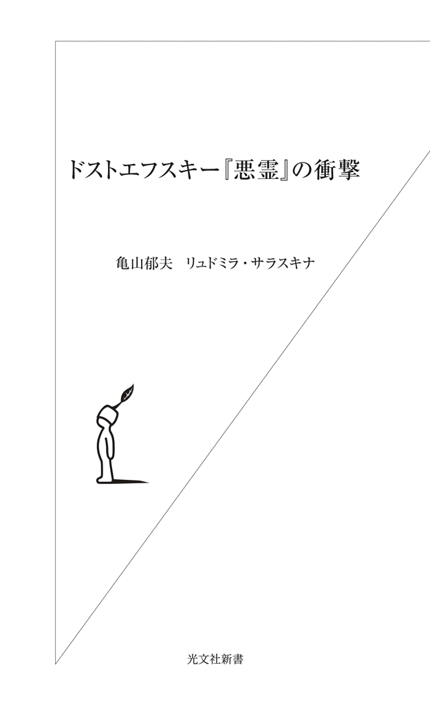
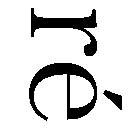
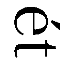
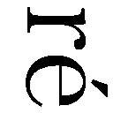
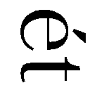

| ドストエフスキー『悪霊』の衝撃 (光文社新書) | |
| 亀山 郁夫 & リュドミラ ・サラスキ | |
| 光文社 (2012) | |

目 次
１
二〇一一年八月、わたしはようやくしてＮＹ・マンハッタンのほぼ南端にあるグラウンド・ゼロの傍らに立つことができた。この十年間、わたしにとって、それは、唯一、「神話的」と名づけることのできる、かけがえのない密やかさを帯びた場所だった。
その日の午後、タイムズスクエアに近い五十二番街にあるホテルを出たわたしは、ブロードウェーの下を走る赤の地下鉄に乗り、およそ二十分、何かしら言葉にならない苛立ちを覚えながらフランクリン通り駅まで来た。地上はまぶしい光に溢れていたが、東京とは比べものにならないほど爽やかな空気の流れを肌に感じることができた。二日前に襲った豪雨のせいもあった。それにしてもこの言い知れぬ苛立ちの正体とは何であったのか。
ＮＹに着いてから、ホテルから通りに出るたびに、その幻覚に襲われ続けていた。二機の旅客機が、魔天楼の間にのぞく大空を横切り、巨大ビルに激突するシーン......。
色とりどりの新旧ビルが立ち並ぶＮＹの中心部は、雑然とした東京の街並みに見なれた目には心地よかったが、その美しさに見とれるたびに、ほとんど機械的にその幻覚の訪れを受けてきた。魔天楼街を歩いているときだけではない。マンハッタンのほぼ中心部に位置し、ＮＹ市民に憩いの場を提供するセントラルパークを散歩しているときにも、その幻覚は訪れてきた。
けっして大げさに言っているつもりはない、《ここからのアングルだと、あれは、どんなふうに見えたのだろうか》、そんな呟きがどこからともなく漏れてくる。理由はわからないが、ＮＹに来てからふたたび、反復性の軽いパラノイアのようなものに襲われはじめていることは間違いなかった。
グラウンド・ゼロが近づくにつれ、わたしは、あの光景を目撃しえたかもしれない人々の住む高層ビルにカメラを向けはじめた。あの日、「オー・マイ・ガッド！」と低い声で叫んでいた母親とその家族は、はたしてどのアパートからあの光景を目撃していたのか。
長いバラック塀にさえぎられたグラウンド・ゼロは、意外なほど活気に満ちていて、厳粛な気持ちは起こらなかった。Ｔシャツ姿の観光客たちは、とくに好奇心をむき出しにすることもなく、バラック塀に背を向け、通行人がとぎれるチャンスをねらってはシャッターを切る。カメラのねらいは、どうやらグラウンド・ゼロの東側に建設されている新しい高層ビルにあるらしかった。九月十一日まで一ヶ月を切り、追悼施設の建築は急ピッチで進んでいるが、林立するクレーン車や建設の状況から見て、残り一ヶ月ですべてが完了というわけにはとうていいきそうになかった。
成田を出るまで、グラウンド・ゼロから圧倒的な働きかけを受けることができるものと期待していた。けれど、感慨は、総じて、驚くほど小さかった。すでにすべての驚きを経験しつくしてしまったような漠とした感覚があり、わたしはひどく失望し、苛立ちがつのりはじめるのを感じた。
あのグラウンド・ゼロが、わたしの心に特別の爪跡も残さず、ことごとく忘れ去られてしまうなど想像もできない。けれど、その苛立ちに満ちた予感は、徐々に現実のものとなった。
「人間はどんなことにでも慣れることのできる存在だ」――。ドストエフスキーの言葉がしきりに甦ってくる。それが人間というものの性なのだ、人間の想像力は、具体的に、悲惨な現実が存在するあいだはゆたかに発動し続ける。だが、つかの間のショックと興奮から覚め、ほどほどの時間が過ぎてしまえば......。
なかば諦めの気持ちでグラウンド・ゼロを半周する。
人通りの多さも手伝って、孤独な感慨にひたれない自分に苛立ちがつのり、それならば、と決心し、ガイドブックを手掛かりにハドソン川をめざして歩き出した。と、そのとき、危険防止用の仮設アーケードの下に小さな行列ができているのが見えた。トリビュート・ＷＴＣ・ビジターセンターとある......。
受付のすぐとなりにあった白い壁に、ＷＴＣの歴史を映像化したヴィデオが映し出されていた。続く閲覧のコーナーには、当時の瓦礫が一つ一つ展示されていた。最初にわたしの目を打った旅客機の窓の破片には、「最初の衝撃（The first impact）」というキャプションが記されている。
「チャーチ通りにわたしたちが出たとき、そこはもう文字通り地獄だった。わたしは大きな金属の破片の上に足をかけた。そこでわたしは、......その破片の一つが、飛行機の窓側の座席であることに気づいた」
ほかにも、穴のあいたスプーン、広げられた五本指のようなフォーク、もはや抽象アートとしか呼べない鉄とガラスの変形したかたまりが展示されていた。男子小学生がガラスの壁に必死にかぶりついてカメラに収めようとしていたのは、ニューヨーク―サンフランシスコ往復のチケット。「ヒルダ・マーティン」の印字があった。辛うじて「ユナイテッド」という文字が見える。
ブロンクスに住むサンドラ・ヘルナンデスという女性のメモも展示されていた。
「I wanted to jump in the TV and grab the airplane, stop it. I ran out in the street, my tears in my ... everybody just came out」
あえて翻訳するまでもない。
２
トリビュート・ＷＴＣ・ビジターセンターを出て、すぐ左に折れると、足もとに何束かの花束が見えた。ビルの壁には、幅七～八メートル、縦一・五メートルほどの銅板のメモリアルが貼ってある。避難者救済のために命を落とした消防士たちを讃えるメモリアルのようだったが、それが、旧ソビエト時代に各地に作られた「永遠の火」のプレートを思わせるところがあって興味をそそられた。ああ、社会主義リアリズムの手法だ、とわたしは思った。「慰霊」の切実な思いを一枚の銅板に刻みつけようと思ったとき、アメリカの芸術家も、いつしか、旧ソビエト時代の写実主義の手法に立ったという感慨が妙に新鮮だった。
わたしの目は水を求めていた。喉が渇いていたせいもある。
ハドソン川をめざし、グラウンド・ゼロを迂回してウエスト通りに出た。すると、目の前に、工事現場を目隠しするバラック塀が見えてきた。うれしいことに、通路のドアが開け放ってある。その数メートル先からは、巨大な土台穴がはじまっているはずだった。
チャンスだと思い、その通路に足を踏み入れようとしたそのとき、ヘルメットと作業服に身を固めた現場監督らしき大男が突然横から姿を現した。わたしは、つたない英語で理由を説明し、ほんの数秒でいいので土台穴をのぞかせてほしいと頼んだ。すると男は、一瞬、目を丸くしたあと、それなら、そこの歩道橋に上がるといい、そこから下がのぞき込める、と答えた。その歩道橋とは、ウエスト通りにかかるトンネル式の陸橋だった。
わたしは心を静めてエレベータに乗り込み、陸橋の上に出た。カメラマン風の男が三脚をセットし、上から屈みこむようにしてファインダーを調整している。わたしはようやくそこで、クレーン車やもろもろの機材が林立する巨大な土台穴の一端を上から見降ろすことができた。
村薫の小説『太陽を曳く馬』に次の一節がある。
「小生たちが九月十一日見たのは新しい抽象絵画であり、実体験できないものとしての死であり、この世界の外だったのかもしれない」
わたしがいまのぞき込んでいるのは、「世界の外」。わたしがいま見降ろしているのは、かつて一度は数千の生命を呑み込んだブラックホール。
記憶が甦ってくる。
ＮＹに来るまで、わたしは、YouTubeに何度もアクセスし、ツインタワー崩落の映像を飽きるほど見てきた。そのなかでもとくに強烈な印象を焼きつけられた映像が、二年前に見たものからおよそ半分に短縮されてアップされていた。映像の冒頭に、ノースタワーから五百ヤード（約四百六十メートル）離れた高層ビルの三十六階から撮影した、とあった。再生回数四百九十二万回――。
一台のヴィデオカメラが、炎上するタワーを延々と撮影し続けている。ファインダーは時おりタワーの壁面をクローズアップしたり、眼下の通りを走る救急車に向けられたりするが、画像の揺れは驚くほど少ない。カメラのかたわらで、母子と思しき女性二人と男性一人がぼそぼそと言葉を交わしあい、時おり呻き声のような「オー・マイ・ガッド」が漏れてくる。やがて窓が開け放たれ、外界の音が一挙になだれ込む。そしてついに崩落のときが来る。入道雲のような巨大な灰を巻き上げ、崩落するタワーを眺める母親のため息がやがてすすり泣きに変わった。
わたしの目にもいつのまにか涙がにじんでいる。その女性にしろ、この映像を見つめているわたしにしろ、この涙の意味するものとは何だったのか。人は、この世に神が存在しないと知るときに、こんなすすり泣きをはじめるのか......。
わたしが、グラウンド・ゼロより、グラウンド・ゼロの周囲に林立するアパート群を次から次へとカメラに収めた理由はここにあった。彼女は、あの一家はどのビルに住んでいるのか。あのヴィデオの最後の場面には、たしかハドソン川が画面右に映っていたはずである。
それにしてもなぜ、わたしはこれほどにも好奇をむき出しにして見るということにこだわるのか。あの日、わたしは、ロンドンのホテルのテレビで見たツインタワー崩落をこんなミニエッセーに仕立てたことがあった。
「他者」のリアリティ、いや「傲慢」の罪の持つ恐ろしさをはじめて教えられたのは、ドストエフスキーの小説『悪霊』だった。主人公スタヴローギンは、知性、美貌、腕力と三拍子が揃い、ギリシャ語で「十字架」を姓に刻みつけたまさに神の似姿である。ところが、まだ二十代の若さながら、その内面は悲惨きわまりない。善悪の観念を摩滅させ、世界のすべてに倦み果てているのだ。この男が気まぐれでおかした罪の一つに少女凌辱がある。相手の名はマトリョーシャ。残酷な欲望の生贄となった少女は、われとわが身を苛み、鶏小屋に似た納屋で首を吊る（男は、その姿を板の隙間から覗きみる）。その少女が死ぬ前のうわごとのなかで口走るのが、引用したこの「神さまを殺してしまった」という言葉である。だが、「神さま」を殺すことは、じつは傲慢不遜の極みたるこの男の狙いそのものだったのだ。娘を唆し、破滅させ、神を殺す。なんという恐ろしい罪だろうか。作者は、大胆にも自分の魂の中からこの人物を取り出してきたと書いた。どこに二人の共通点があるというのか。作家の魂のどこから男は生まれ出たのか。ドストエフスキーをこよなく愛するわたしにとって、これは、いまも、最大の謎である。振り返れば、大学三年生の秋にこの『悪霊』と出会ってから、わたしは、人間のまなざしの持つ根源的な罪深さのようなものを意識してきた。そして唐突ながら、九月十一日のあの日、ツインタワー崩落のシーンを旅先のテレビで観ながら、わたしはなぜか不意にこの『悪霊』の一節に思いをはせ、〈神は死んだ〉と感じ、テレビを観ているわれわれ全員が神になった、という奇妙な錯覚に囚われたものだった。
３
三月十一日、あれから九年半の時の流れのあとに、わたしは再び世にも凄まじい光景をテレビ画面で見た。むろんわたしひとりではない、世界の人々がその光景を目撃したのだ。
九年半前、あの光景をロンドンで目にしたわたしが、ふしぎな連想の力でドストエフスキーの『悪霊』のある場面に思いを引き寄せられていたとするなら、その日、わたしは、大学の執務室で、同じ『悪霊』のなかの別のある場面に思いを馳せていた。衝撃は、九年半前のそれとはおよそ規模も質も異なるものだったが、世界が終わるという恐怖の一点で変わりはなかった。では、わたしの心の経験において、三月十一日と九月十一日とでは、どこがどう異なっていたのか。
その日、激しく横揺れする事務棟の五階から大学のキャンパスを見降ろしながら、わたしは、生まれて六十年間心のどこかで予感し続けてきた事態が起こった、との感覚をもった。「世界が滅びる」という、切迫した予感である。思えば、それでも、東京の西部にある大学の執務室でわたしが経験していたのは、せいぜい震度五強の恐怖にすぎなかった。
わたしの前には、ただ揺れている空間があった。その空間は単に揺れているだけで、具体的に何かが破壊されていく光景ではなかった。にもかかわらず、「世界が滅びる」という予感は、五分近くも続いた。
やがて揺れがおさまり、テレビのスイッチを入れたわたしの前に、文字通り、「世界が滅びていく」光景が映し出されていた。もはや月並みな表現でしか表わすことのできない非現実感。震度五強の地震に揺さぶられていたときに感じた「世界が滅びる」という予感は、家々が津波に押し流される光景を前にして根本から意味が変わったような気がした。「滅びる」のは、世界ではなく、日本なのだ、というより切迫した予感――。
わたしの存在はすでにゼロと化し、得体のしれない、自暴自棄的な感覚が襲ってくる。
九年半前、わたしはロンドンのハイドパークで、『ターミネーター２』の女主人公さながら、核攻撃を受けて世界が赤い炎に包まれる場面を幻視した。だが、いまは、火ではなく、水――。水の持つ根源的な力。赤い炎では及びもつかない、曖昧ながら、おそろしく暴力的な自然の力。
そのとき、一つの世界が壊れていく光景を、何百万、何千万という人々が見守っていた。「壊滅的」という言葉がおびただしく使用されるなか、キリスト教徒でもないわたしはなぜか「黙示録的」と口走っていた。九・一一のときに感じた世界との一体性の感覚はなく、むしろ世界から取り残されるという恐ろしくも奇妙な孤独感があった。それは、日本に生まれ、日本に生きるひとりの日本人としての、偽りのない愛国主義であり、人間の心からけっして消し去ることのできないナショナルなアイデンティティの感覚だった。
九・一一をロンドンで迎え、「世界が滅びる」とまで予感したわたしは、それでもやはり、一人の単なる傍観者にすぎなかったのだ。その傍観者が、たとえ、そののちに世界に襲いかかる運命に思いを馳せていたとしても。しかし、いま、三・一一を前にしたわたしはもはや傍観者ではなかった。それは、自分自身の死と崩壊という予感すらともなっていた......。
三月十一日以降、わたしはまたしても『悪霊』という同じ地点に立っていた。その日からわたしは何日にもわたってテレビとインターネットの前に釘づけとなり、三陸沖から宮城県にまたがる太平洋岸の町や村が巨大な水に襲われる場面を見続けた。くり返し流される映像にすぐに見馴れてしまった人々もいるだろう。しかしわたしは、その後一ヶ月近く、テレビとネットの映像を見続けていた。むろん後ろめたい気持ちもあった。反面、まさに目と化したわたしは、まるで「黙示録」の作者ででもあるかのように、見るという行為に、何かしら使命のようなものも感じ続けていた。
忘れもしない。相もかわらず、わたしの前にはドストエフスキーがいた。
この現実を見て、ドストエフスキーに何が書けただろうか？ そもそも、これほどの大量死を目にした経験が彼にあったのか。あったとしたら、それはいつ、どこで？ 戦争、飢饉、パリ・コミューン......そもそも、いま、自分が目にしている光景は、ドストエフスキーが生涯、執拗に追い求めてきた「罪と罰」をめぐるいかなる倫理的な問いからも隔絶している。まさに、「罪と罰」の連関性から解き放たれた、純粋な自然の暴力。もし自然を、運命あるいは神というふうに置きかえることができるとしたら、ことによると、それは「ヨブ」の受難に似ているかもしれない。だが、それは、わたしたちが現に直面している全体的災厄からは程遠い。しかし、ドストエフスキーの文学にも、この全体的災厄のイメージは確実に描きとめられていた。
十九世紀半ばのロシア――。農奴制の名残りを色濃くとどめるロシアに生きたドストエフスキーは、この全体的災厄をどうイメージ化していたのか。いや、どのように形を変えて認識していたのか。ドストエフスキーが、大量死のイメージを最初に取り込んだ小説が『悪霊』だった。しかし、彼はすでに『罪と罰』で、いまでいうグローバルな感覚によってそうした災厄をイメージ化していた。それは、ほかでもない、オムスクの監獄でラスコーリニコフがみる「微生物」の夢である。
「全世界が、ある、怖ろしい、見たことも聞いたこともない疫病の生贄となる運命にあった。疫病は、アジアの奥地からヨーロッパへ広がっていった。ごく少数の選ばれた人々をのぞいて、だれもが死ななければならなかった。出現したのは新しい寄生虫の一種で、人体にとりつく顕微鏡レベルの微生物だった。しかもこの微生物は、知恵と意志とをさずかった霊的な存在だった。この疫病にかかった人々は、たちまち悪魔に憑かれたように気を狂わせていった。そしてそれに感染した者たちは、病気にかかる前にはおよそ考えられもしなかった強烈な自信をもって、自分はきわめて賢く、自分の信念はぜったいに正しいと思い込むのだった。......」（『罪と罰』「エピローグ」）
『罪と罰』では、まさに「悪霊」が「顕微鏡レベルの微生物」の姿をまとい、人々のなかに入り込み、人々はそれぞれに滅ぼし合いを繰り広げ、最後には、「ごく少数の」「選ばれた人々」をのぞいて滅び去る。
では、ドストエフスキーは、この「微生物」にどのような意味づけをほどこしていたのか。それを一言で答えるなら、人間が宿命的に持つ「驕り」（「自分はきわめて賢く、自分の信念はぜったいに正しいと思いこむのだった」）である。この夢を見る主人公ラスコーリニコフが陥った罪もまさに「驕り」にあった。ドストエフスキーがいかに予言的な想像力を持った作家であれ、自然の不条理な力による圧倒的な暴力というイメージを思い描くことはできなかった。しかしそれでも、この「微生物」に「傲慢」という名を与えることのできたドストエフスキーの直感に学ぶべきところは少なくない。
わたしたちはいま、現にわたしたちに襲いかかりつつあるこの災厄を、ドストエフスキーにならって「驕り」と名づけることができるのかどうか、答えはまさにそのぎりぎりの瀬戸際にある。そのドストエフスキーが、新たに『悪霊』の執筆を思い立ったとき、『罪と罰』の「微生物」は、やがて「悪霊」という名前を持つにいたる。
「悪霊どもはその人から出て豚の中に入った。すると、豚の群れは崖を下って湖になだれ込み、おぼれ死んだ」（「ルカによる福音書」第八章）
４
それからおよそ四ヶ月が経過した。
七月九日、暮れなずむ夕陽を浴びながら、わたしは車で釜石の町に入った。「アジア・シンフォニー」という名前の貨物船が、堤防のコンクリートを削りとるようにして岸に乗り上げている。後で知ったのだが、パナマ船籍のこの船は、乗組員全員がフィリピン人だったという。ファインダーの画面をのぞくことに、これほど後ろめたさを感じたことはなかった。廃墟のようなたたずまいを見せる町を見つめ、それをカメラに収めようとしている自分をだれかに見られてはならなかった。
予期したとおり、釜石湾沿いの家々にほとんど人影らしきものはなかった。わたしは、見ることによって犯罪者になったと感じた。なぜなのか、わからない。しかし、この見るという行為にともなうえもいわれぬ罪の意識は、この町を訪れたすべての人々の心に生じた何かだったにちがいない。
翌日十日の五時半、釜石・小佐野駅に近い民宿旅館を出たわたしは、再び、同じ罪の感覚に支配されたまま、国道四十五号線沿いに大船渡をめざした。陸前高田では、もはや車から降りることさえためらわれるほどだった。大船渡、陸前高田、気仙沼、南三陸、石巻と南下していくうち、わたしの印象が、二つに大きく割れていくのに気づいた。津波によって建物が消失した町と、いたるところに破壊された家屋の鋭い骨格が突き出した町の二つの印象が、まるで異なるのだ。灼熱の太陽が照りつけるなか、砂漠同然と化した町では、えもいわれぬ荘厳な神秘感に打たれ続けた。それこそが神の、リアルな直観だったのかもしれない。他方、釜石や石巻などいたるところに建物の残骸が残る町では、自然のむき出しの悪意を感じて、海すらまともに見つめることができなかった。
午前九時半、南三陸の町から二キロほど南に下った高台にあるＫホテルに入る。ホテルは、宿泊についてはいまなお営業停止の状態が続いているらしく、入口に近いロビーに人影はなかった。
南三陸の町を左手にのぞむ窓際の白いソファに腰を下ろした。再び『悪霊』幻想が起こってくる。幻想というより、一種の既視感だった。海面からおよそ二十メートルの高さにある三階ロビーから、朝日に映える湾内の海を見降ろしていたとき、ふと、『悪霊』第３部第３章「愛の終わり」の一場面が思い出されてきた。
スクヴォレーシニキの別荘で最後の密会を終えたスタヴローギンとリーザが、大広間の窓をとおして川向こうに火の手を見る。その火事の現場から、スタヴローギンの正妻で神がかりの女性マリヤとその兄のレビャートキン大尉の惨殺体が発見される。むろん、スタヴローギンはみずからの意識下にうごめく欲望を意識し、流刑囚フェージカに渡した金の存在も記憶にあるので、川向こうの火事で何が起こったかを予感している。
この火事のモチーフをめぐって、ゲーテの『ファウスト』第２部との関連性を指摘したのが、アリフレード・ベームという研究者だった。いまや功なり名をとげ、一国の主となって、新国家建設の意欲に燃えるファウストだが、その彼の唯一の気がかりは、菩提樹の林におおわれた土地だけが手に入らず、建設の妨げになっていることである。そのファウストが、望楼から遠くに火事を眺めやるシーンがある。火に包まれているのは、菩提樹の林であり、その木陰に住む老夫妻の家である。そこへメフィストフェレスがひょいと姿を現し、立ち退きの命令を聞かない老夫婦を焼き殺したと報告する（「フィレモンとバチウス」）。
あらためて説明をほどこすまでもない。『悪霊』のドストエフスキーは、焼き殺されたこの老夫婦に、川向こうの焼け跡から発見されるマリヤとレビャートキンの兄妹を二重写しにしていたのだ。
問題は、ドストエフスキーがとったそうしたダブルイメージの手法である。思うに、彼がここで改めて問おうとしていたのは、人間の死をこの望楼から、いや大広間から無意識のまま眺めるという行為そのものにあった。そして何より、新たな国家建設の前に頑固に立ちはだかる老夫婦をなきものにしたいという無意識の願望において、ファウストとメフィストフェレスは不可分の分身関係にあり、なおかつ同罪であることをドストエフスキーは明らかにしたかったといってよい。
スクヴォレーシニキの大広間から火事場を眺めやるスタヴローギンとリーザのもとに最初に訪れてくるのが、だれかを見届けてほしい。すべての悲劇は、スタヴローギンの欲望のなかにきざし、ピョートル・ヴェルホヴェンスキーによって現実化されていく構図に......。
ファウスト＝スタヴローギンのまなざしは、限りなく、悪しき神デミウルゴスのまなざしに近く、そのまなざしを人間が持つということのうちに、とりもなおさず、神の不在が暗示されている。
では、なぜ、十九世紀後半のロシアに生き、『悪霊』の執筆にたずさわるドストエフスキーが、これほどにも凝りに凝った文学的なしかけを動員しなければならなかったのか。そもそもなぜ、『悪霊』にとって『ファウスト』は必要だったのか。
一義的には、むろん、それこそが小説であり、文学というもののなせる業なのだ、という答え方も可能である。あるいは、スタヴローギンという天才的人物を造形するのに、どうしても何がしかの文脈が必要となったという作家なりの言いわけも尊重する必要がある。しかし、この問いは必然的に、ドストエフスキーの小説になぜ、スタヴローギンが必要になったのか、なぜ、ドストエフスキーは、彼を自分の「魂の中から」取り出してくる必要が生じたのか、という問題に帰結していく。
結論から先に述べるならば、ドストエフスキーは必ずしも『ファウスト』を必要としたわけではなかった。ただ、『悪霊』にみあうだけの悲劇を、『ファウスト』以外に見出しえなかったということなのだ。そして彼が、自分の魂の中からスタヴローギンを「取り出し」たとき、スタヴローギンは、もはや作者自身による自伝的な告白という域をこえて、ロシアという、はるかに大きな文脈のなかでの悲劇的人物に変貌していたのである。
Ｋホテルからの眺めは、飽きるということがなかった。レストラン「シーサイド」が開店する十一時まで、ここでゆっくり寛いで海を眺めているのも悪くない、と思った。
四ヶ月前のあの悲劇など忘れさったかのように、海面は穏やかな煌めきを発している。窓の左手には、深い傷を負った南三陸の港が見えている。ホテルのロビーには、被災した老人たちや、ボランティアらしい人の姿もある。やがてヴァイオリンを手にした若い女性がひとり姿を現し、ソファに腰を下ろした。午後にでも、チャリティー・コンサートが開かれるのだろうか......。
午前五時の起床、しかも朝食ぬきとあって、強い空腹感がある。わたしは、窓際のソファから立ち上がり、近くのカウンターでソフトクリームを買いもとめた。そしてふたたびソファに腰を下ろそうとしたそのとき、足もとからふいに小刻みな震えが伝わってきた。地震だ、と思って後ろをふりかえる。だが、館内に動揺が走る気配はなく、人々の表情はいたって平静そのものだ。時計は十時少し前を指している......。
二〇一一年夏 東北、マンハッタン
「対話」のはじめに
ここにお届けするのは、ドストエフスキー最大の問題作とされる『悪霊』、とりわけその主人公ニコライ・スタヴローギンをめぐって、ロシアのドストエフスキー研究者リュドミラ・サラスキナさんとの間で交わした「対話」の記録である。
『悪霊』を翻訳する約二年間に交わされたやりとりは、電子メールでのそれも含め、五十回以上におよぶが、そこには、二〇一一年一月二十三日に、東京外国語大学本郷サテライトで行なわれた約三時間にわたるトークセッションも含まれている。それらの内容を、『悪霊』の読者に届けたいという強い思いから本書は編まれた。
さて、古典新訳による『悪霊』第１巻の翻訳が出たのが、二〇一〇年九月、第２巻は、二〇一一年四月、そして最終巻が二〇一一年十二月、さらに『悪霊』別巻が二〇一二年二月と、全巻完結までに一年半近い歳月を要したが、その間、日本は、東日本大震災という未曽有の経験に遭遇し、ドストエフスキー、たとえば『悪霊』を読むわたしたちの精神的な環境も一変した。
思えば、二〇一一年三月の時点で、わたしが直接にドストエフスキー研究に入るきっかけとなった二〇〇一年九月十一日の事件から九年と六ヶ月の月日が経っていた。わたしは、個人的な思いとして、ぜひとも、ニューヨーク訪問のささやかなルポルタージュから本書をはじめたいと願った。
と同時に、本書の終わりは、『悪霊』の主人公スタヴローギンの世界遍歴をめぐるサラスキナさんのエッセーと、そのエッセーに刺激されたわたしのスタヴローギン小論で締めくくりたいと願った。この二つのエッセーの間には、たがいに呼応しあうテーマが確実に隠されていると信じている。
本書が、こうして、多少とも複雑な構成をとるにいたった事情は、現代において『悪霊』がはらんでいる問題性と、わたしたち自身の精神的な環境の激変という状況、さらにはわたしがかねてこの小説に抱いてきたヴィジョンを、できるだけ有機的なかたちで伝えたいという願いとが密に結びついているところにある。
＊
はじめに、『悪霊』をすでに読みおえられている読者を念頭に置きながら、小説の梗概を紹介しておく。
第１部
物語は、一八六九年の秋から冬にかけて、ロシアのとある地方都市と、その郊外にあるスクヴォレーシニキと呼ばれる領地を舞台に展開する。
この町に、ピョートル・ヴェルホヴェンスキーという名の革命家がスイスから戻ってきた。彼は、五人組による秘密結社をこの町に組織し、それを梃子に全ロシアに革命を起こし、政府を転覆しようという企みを胸に秘めていた。ピョートルに続いて、もう一人、この小説の真の主人公ともいうべきニコライ・スタヴローギンが同じスイスから戻ってくる。だが、彼がロシアに帰国し、故郷であるこの町にやってきた真の意図はわからない。ピョートルはこのスタヴローギンを神のごとく崇めており、自分たちのもくろむ「革命」が成就した暁には、この人物をあらたな王国の主に据えようとの腹づもりである。
ピョートルの父親ステパン・ヴェルホヴェンスキーは、一八四〇年代のロシアを代表する自由主義者の一人で、かつては大学の教壇にも立ったことのある心優しい知識人だが、いまは、スタヴローギン家の女主人ワルワーラの世話を受け、同じ屋敷内で夫人と熱烈に手紙を交わしあい、日頃は「血肉と化した非難」の役どころを演じつつ、アルコールとカードにうつつを抜かす毎日である。
ワルワーラ夫人の計らいもあり、その彼と、養女ダーリヤ・シャートワ（ダーシャ）との間に結婚話が持ち上がっている。この結婚話は、ヴェルホヴェンスキー氏をひそかに愛し続ける夫人が、悩みに悩んだうえでの決断だった。
スタヴローギン家のひとり息子ニコライは、このヴェルホヴェンスキー氏のもとで教育を受けたあと、学習院に進学し、卒業後、軍務に服してからにわかに悪癖に身を染め出した。二度にわたって決闘事件を起こし、放蕩三昧の生活をおくるなど、とかく不吉な噂が絶えず、母親のワルワーラを不安に陥れている。四年前、ニコライが突如この町に姿を現した際には、仮面のように美しく端整な顔立ちで人々を驚かせたが、ある日、公衆の面前で町の有力者ガガーノフの鼻を引きまわしたり、県知事の耳に嚙みついたりするなど、奇怪なふるまいが目立ったため、町から放逐された。
物語は、九月のはじめの日曜日、町の礼拝堂でマリヤ・レビャートキナという足の悪い女がワルワーラ夫人の前に跪くところからはじまる。かねがね首都でのニコライの行状を耳にしていた夫人は、マリヤの出現を不審に感じて彼女を自宅に連れ帰った。
この日は、ヴェルホヴェンスキー氏と養女ダーシャの婚約発表が行なわれる日に当たっており、ワルワーラ夫人の幼馴染の娘で、美貌の誉れ高いリーザ・トゥーシナも婚約者マヴリーキーを伴ってスタヴローギン家に来ていた。そこへピョートル・ヴェルホヴェンスキーとニコライ・スタヴローギンの二人がまるで申し合わせたように到着する。
広間に集まった一同に、スタヴローギンは、「結婚」の事実を暗に否定したまま、マリヤを紹介し、彼女を外に連れ出す。ヴェルホヴェンスキー氏の婚約者であるダーシャの兄イワン・シャートフは、戻ってきたスタヴローギンをこぶしで殴りつけ、一同を驚かせ、スタヴローギンをひそかに恋するリーザは、その場で気をうしなう。
シャートフはスイス時代、つかのまながらもマリー（マリヤのフランス語名）という女性と結婚生活を送ったことがあった。その後、結婚生活に破れたシャートフは、同志のキリーロフと太平洋をわたり、アメリカの農園で働いた過去があった。シャートフの殴打は、足の悪い女マリヤとの「結婚」を否定したスタヴローギンの「狭さ」に対するやみくもの抗議を意味しているかのように見えた。
第２部
数日後、有力者の息子ガガーノフが四年前に父親が受けた汚名をそそぐべく、スタヴローギンに決闘を申し込んでくる。スタヴローギンは謝罪の手紙を書くが受け入れられず、友人のキリーロフを訪ねて、介添人になってくれるように依頼する。
彼はその足でシャートフを訪ね、彼の身に危険が迫っていることを告げる。かつて秘密結社の一員だったシャートフだが、革命的手段では人々は救えず、正教こそがその役割を果たすとの考えに立って転向を明らかにしていたため、密告を恐れるピョートルとその一味は、彼の処遇をめぐってひそかに最終的な手段を講じようとしていた。
同じ夜、スタヴローギンは、町の郊外に住む妻のマリヤとその兄レビャートキン大尉を訪ねるが、マリヤは人が変わったように、「あたしのあの人は――美しい鷹で、公爵なんだ。ところがあんたときたら――けちなフクロウで」と彼をののしる。帰り道、スタヴローギンは、ピョートルの手先として街中を徘徊し、犯罪をくりかえす流刑囚フェージカに金をばらまき与え、マリヤの殺害をそれとなく唆す。
決闘が行なわれる。ガガーノフは失敗を繰り返し、ニコライは空中にむかって発射し続けた。噂は人々の耳に伝わり、ニコライの評判は一挙に好転した。町では、ピョートルが新県知事夫人に取り入り、労働者たちを煽動して町に騒乱を起こそうと画策している。物情騒然たる気分がみなぎるなか、スタヴローギンは「告白」をたずさえ、町外れにあるスパソ・エフィーミエフスキー・ボゴロツキー修道院にチーホン僧正を訪ねる。
おりしも、新県知事の妻ユーリヤ夫人は、県内出身の女性家庭教師を扶助するチャリティーの催し物を計画中だった。夫人は、昼の部の講演会に、遠縁にあたる小説家のカルマジーノフとステパン・ヴェルホヴェンスキー氏らを講演者として招き、夜の部には、文学カドリールと舞踏会を予定していた。祭りを翌日に控えた日の午後、町内では、シュピグーリンの工場の労働者たちが待遇改善を要求してデモ行進を行ない、県知事邸前の広場に集結していた。同じ日の朝、ヴェルホヴェンスキー氏の自宅では、県の警察による家宅捜索が行なわれていた。
他方、県知事のレンプケー氏は、妻のユーリヤ夫人にすり寄るピョートルに対する嫉妬からほとんど正気を失い、広場に集まった工場労働者たちに対して鞭打ちを命じた。
第３部
祭りの当日が訪れる。文壇からの引退を決意したカルマジーノフは、「メルシー（ありがとう）」と題するエッセーを朗読するが、聴衆のヤジにさえぎられて、ほとんど中途での退場を余儀なくされた。
ヴェルホヴェンスキー氏は、一八四〇年代人らしい理想論をぶち上げるが、これも聴衆のはげしいヤジによって退場させられる。かつて彼が、カード賭博に敗れ、借金のかたに農奴のフェージカを売り飛ばした過去が暴露される。講演会は大荒れに荒れ、夜の舞踏会の開催も危ぶまれる事態だったが、ピョートルの強い主張で舞踏会は開催された。だが、その舞踏会も、川向こうで上がった火事で中断され、大混乱に陥る。
貴族団長邸の大広間で慈善講演会が催されるなか、会場を抜け出したリーザは、婚約者マヴリーキーを振り切り、スタヴローギンのいるスクヴォレーシニキの別荘に走り、一夜をともにする。だが、放蕩の末に、もはや人間らしい感情を焼き尽くしているスタヴローギンは、リーザの前で、抜けがらのような無残な姿をさらすばかりだった。
明け方、二人は別荘の窓越しに、川向こうを嘗めつくした火事の残り火を目撃する。現場では、スタヴローギンの妻マリヤとその兄レビャートキン、そして女中の惨殺体が発見された。スクヴォレーシニキの別荘を飛び出し、婚約者のマヴリーキーと現場に駆けつけたリーザは、狂い立つ群集に撲殺される。
翌日、シャートフのもとを、三年前にジュネーヴで別れた妻のマリーが訪れ、男の子を出産する。赤子がスタヴローギンの子どもであることを知りつつ、シャートフは驚喜するが、その夜、「五人組」の一味によって郊外にある公園におびき出され、殺害される。五人組の一人で独自のユートピア思想をとなえるシガリョーフは、計画に不服であるとして殺害の直前に現場を立ち去った。また、シャートフの友人で、死の恐怖を乗り越えたものは神になるという独自の人神思想にとりつかれたキリーロフは、ピョートルとの契約を守り、シャートフ殺害の責任をみずから引き受けたあとで、ピストル自殺する。姿を消した夫シャートフを探しに出たマリーは、産褥のなかで死に、イワンと名づけられた赤子も病死する。
一方、失意のうちに放浪の旅に出たヴェルホヴェンスキー氏は、旅の途中、福音書売りの女性と出会い、熱病による全身衰弱のすえに帰らざる人となる。翌日、スタヴローギンは、ダーシャに宛てて手紙を書き、スイス・ウリー州への出発を伝えるが、果たすことなく、「だれも責めてはならない、ぼく、自身だ」の一行を残し、スクヴォレーシニキの別荘の屋根裏部屋で首を吊る。
「わたしは彼を自分の魂の中から取り出してきました」
亀山郁夫（以下亀山）
わたしの時計では、二時を過ぎました。
では、さっそくリュドミラ・サラスキナさんをお招きしての公開トークセッションをはじめたいと思います。
その前に簡単に、本日にいたるまでの経緯をお話ししておこうと思います。サラスキナさんは、ロシアを代表するドストエフスキー研究者であり、十九世紀のロシア文学、さらには、ソルジェニーツィンに関わる数多くの著作で知られる方です。とりわけ『悪霊』研究者の第一人者として、一九九〇年代に、ロシアではじめて「チーホンのもとで――スタヴローギンの告白」を小説本体に取り込んだ、独自の、サラスキナ版と呼ばれる『悪霊』の新バージョンを出版しました。とにもかくにも、彼女をおいて、現在のロシアにドストエフスキーの『悪霊』研究者はいないというくらいのたいへんな方です。
二〇一〇年四月に出た『現代思想』臨時増刊号でも、わたしは、編集者の一人として、彼女の『悪霊』論のなかでもとくに秀逸とされる一章を掲載することにしました。それが、「アイスランドのスタヴローギン」というタイトルを持つエッセーです。
わたしとしては、『悪霊』を広く世に知らしめる本を作りたいという年来の野心もありましたから、昨年来Ｅメールで、サラスキナさんに、『悪霊』に関する対談形式の本を一緒に作りませんか、と呼びかけてきました。そのための最初の仕事が今日ようやく実現する運びとなったわけです。
本来は、この対談を非公開で行なうという考えもあったのですが、せっかくサラスキナさんをお迎えするのであれば、『悪霊』のファンたち、というべきか、この小説に心から興味を持っている人たちをご招待できればと思いました。しかし、広報は、最小限に努め、チラシを百数十枚用意しただけです。
今日のこの対談は、あくまで、今日ここに集ってくださったみなさんのための企画ですが、同時に、将来、一冊の本に収められる対談になるという事情もどうかお含みおきいただけますように。いささか変則的ではありますが、本作りの舞台裏をのぞくという面白さもあわせて楽しんでいただけたら幸いです。
じつは、今回の対談にあたって、わたしは事前に百近い質問項目を用意しました。むろんここですべての質問をぶつけることは不可能ですから、残りはすべて、今後、メールでもって回答していただこうと考えています。
さて、来日された一昨日の夕刻、サラスキナさんとホテルでお会いしたわたしは、食事をしながら今日の打ち合わせを行なううちに、しだいに話に熱がこもってきまして、打ち合わせそれ自体が、あたかも対談のような形になってしまいました。わたしは必死になって、「いまは話さないでください、明後日の対談のためにとっておいてください」と懇願したのですが、それでも話題は尽きず、ちょっと言葉にできないくらいのスリリングなひと時を味わうことになりました。
そのとき、わたしは彼女に明言したのです。明後日の公開トークセッションは、「あなたは、『悪霊』の主人公であるニコライ・スタヴローギンが好きですか」という質問からはじめます、と。約束どおり、今日のセッションではまず、この質問から入ろうと思います。そして、もし、スタヴローギンが好きならば、「どういう理由で好きなのか」ということをお話しいただきたいと思います。
リュドミラ・サラスキナ（以下サラスキナ）
ただいま、亀山さんから二つの質問を受けました。「あなたはスタヴローギンが好きか」、そして「もしも好きなら、それはなぜか」というものです。
まず、第一の質問に答えましょう。ええ、わたしはスタヴローギンが好きです。スタヴローギンを愛しています。この長編小説に登場する人物たちすべてがスタヴローギンに惹かれ、彼を愛しているのと同じように、わたしも彼を愛しています。そして、作者フョードル・ドストエフスキーが彼を愛したのと同じように、わたしもスタヴローギンを愛しているのです。
何より、スタヴローギンなくして、この小説は存在しえません。
『悪霊』という長編小説がどのように生み出されたか、その経緯については、すでにご存じの方も数多くいらっしゃるでしょうが、あえて説明したいと思います。
ドストエフスキーは、一八六九年の末から一八七〇年の初頭にかけて、『悪霊』という小説を書こうと着想したわけですが、当時は、最終的に完成された――つまりいまわれわれが読んでいる作品とはまるで異なる長編小説を書こうとしていました。彼は、「政治ビラ」とも言えるような小説を書こうと構想していたのです。彼はこう考えていました。ニヒリスト、そして西欧派を「鞭打つ」ための「鞭」が必要だと。つまり「政治ビラ」のような役割を持つ小説を書き、ロシアに存在するニヒリストをカリカチュアライズすることが必要だと考えたわけです。
ところで、『悪霊』には、モデルとなった事件があります。一八六九年十一月に、モスクワで起こったネチャーエフ事件です。革命家のグループから離脱しようとしたイワーノフという学生が、同じグループ内の同志たちに殺害されました。この事件をきっかけに、ドストエフスキーは、当初の構想に基づき、八ヶ月という長い時間をかけて小説の第一稿を書きます。そして現在の『悪霊』のボリュームにして約半分に相当する、印刷台紙にして十五枚相当の長さまで書き上げました。
ところがある日――日付でいうと、一八七〇年八月のある日、小説をこのような形で続けていくのはもう止めにしようと、つまり当初考えていたプランで長編小説を書き続けるのは止めようと決断するにいたるのです。こんな小説を書く意味があるのか、とまで自問したのです。
それはなぜでしょうか。
ドストエフスキーは、当時、ザクセン王国の首都ドレスデンで、妻のアンナと暮らしており、毎日カフェ通いをしていました。そのカフェには、ロシアから送られてくる三種類の新聞が置いてあったといいます。
『ゴーロス（声）』『サンクトペテルブルグ時報』、この二つはリベラル派の新聞で、もう一つが『モスクワ報知』、これはカトコフという『ロシア報知』という雑誌を主宰していた人物が編集していた保守派の新聞です。
ドストエフスキーはロシアのリベラル派、保守派双方のマスコミがどう書いているかということに興味を持ち、ロシアのニュースを毎日読んでいました。ロシアで起きたことは、この三紙を通じて知ることができたわけです。実際、このカフェでは、毎日二時間から三時間かけて新聞などを読んでいたようです。
さて、先ほどのネチャーエフ事件、つまりイワーノフ殺害事件ですが、これはモスクワにあるペトロフスカヤ農業大学で起きました。校内の大きな公園にある池のなかから、首に石をつけられた学生の遺体が発見されたのです。警察は、遺体の状況を含めて細かい事実を公表し、これが、ドストエフスキーも読んでいたロシアの新聞に掲載されました。
事件後の捜査により、じきにこの遺体の身元が割れ、イワーノフという名の学生だということが判明しました。さらに、殺害の犯人たちはイワーノフと同じ学生であるということ、すなわち、イワーノフは、志を同じくするあるグループに属する複数の学生に殺害されたということが明らかになります。
この殺害グループのメンバーたちの身元も割れました。しかもそこで、殺害に加わった彼らが、一種の秘密結社を形づくっていたことが明らかになったのです。彼らは学生でしたが、外国からやって来たニヒリストで革命家のセルゲイ・ネチャーエフという人物もこれに一枚嚙んでいました。
この事件のくわしいあらましを新聞で知るにつれ、ドストエフスキーはこんなふうな考えに至りました。これは単なる刑事事件ではなく、政治的な事件である。つまり、この殺人は、政治的な動機によって行なわれたものだ、と。
一八六〇年代末のロシアにおいて、政治的動機による殺人はかなり目新しい出来事でした。共謀した人間たちは、イワーノフが密告するのではないかということを恐れて彼を殺したのです。
これは、「政治的な糊」である、すなわち政治的な動機による殺人が糊のようにお互いをくっつけ合うものだ、という考えをドストエフスキーは着想しました。
五人の人間が一人の人間を殺す。一人の人間の血が流れる。流された血糊によって、彼らは一つに結びつく。血を流せば、もはや彼らの共同体が崩壊するなどといったことはありえない。彼らは犯罪を共有することでもはやお互い離ればなれになれない――この事件はそういった考えによって引き起こされた、と、ドストエフスキーは見てとったのです。彼は陰謀の本質を見てとっていました。陰謀に加担した人間たちが互いに血を分かち合い、結束を固める、すなわち政治的な殺人という手法が、ついにロシアで発明されたのだ、という発見に立ちいたったわけです。
では、もしドストエフスキーが、本来の着想にもとづいて『悪霊』という小説を完成させていたとすれば、どのような作品に仕上がっていたでしょうか。
わたしの考えでは、政治的な目的の殺人事件をめぐる、ひじょうに鮮やかで、先鋭化された形式の政治スリラーに仕上がったのではないかと思います。当時のロシアには、そうしたジャンルの小説はまだ存在していませんでしたから、読者はもう、はらはらどきどきしながら楽しんで読むといった作品に仕上がり、たいへんな人気を博しただろうと想像します。
では、なぜ、その着想は破棄されたのか。
この問いから、ニコライ・スタヴローギンという人物像の本質が見えてきます。
とにもかくにも、ドストエフスキーは、政治スリラーを創ることを放棄しました。もっともこの時代のロシアには、まだ政治スリラーという用語そのものもありませんでしたが。ロシア語で「パンフレット小説」と言いますが、先に申し上げたいわゆる「政治ビラ」と言われているジャンルでの作品を書くことを放棄したわけです。単に殺人をおかしたニヒリストたちをカリカチュアライズするだけでは終わらせられないというのがその理由だったのでしょう。
ドストエフスキーは、新しい小説の構想について、作品の出版元のカトコフと友人のマイコフに宛てて手紙を書いていますが、実に驚くべき内容です。ネチャーエフ、及びネチャーエフのグループに入っている人間たちはまったく取るに足らない人物たちだ、彼らは文学には値しないし、芸術家が自分の力を注ぐには値しない人物たちである、と書かれています。
つまり、ドストエフスキーは自分が作品中に用いようとした革命家たちを取るに足らない、文学に値しないくだらない人間だとまで言い切り、ならば、ということで、まさに「ヒーロー（主人公）こそが必要である」という考えに至ったのです。はるかな精神的高みを持ったヒーローこそが、この小説には必要だと。由緒正しい貴族であり、そしていわゆる「旦那階級」に属する人間であり、美男子であるヒーロー。老若男女が魅了されてしまう、それこそ心も魂も魅了されてしまうような人物が必要だと考えたのです。
では、どうしてそのような人物が必要だったのでしょうか。
ほかの登場人物たちの行動を誘い出すための餌として、必要だったのでしょうか。あるいは世間の反響を呼ぶために、読者の興味をおびき寄せるための餌として必要だったのでしょうか？ もちろん答えは、ノーです。
彼が、この作品のなかの唯一のヒーローであることが、小説の結末のほうで明らかになってきます。スタヴローギンは、ニヒリストたちを、たいへん厳しく、鋭い口調で弾劾しています。イワーノフ殺害の張本人であるネチャーエフをモデルにしたピョートル・ヴェルホヴェンスキーに対し、自分の考えをはっきりと口にできる唯一の人物としてドストエフスキーによって登場させられたのです。しかも、彼は、共謀してシャートフ殺害をたくらむ同志たちの先を、どんどん読みとっていく唯一の人物でもあります。スタヴローギンは、おそろしくレベルの高い人間、大空を翔けるような闊達な人物であり、たいへんな魅力の持ち主です。
亀山
サラスキナさんのお話をうかがいながら、わたしは、ロシア人の『悪霊』理解と、われわれ日本人の『悪霊』理解の間には、何かしら深い溝があるといったような印象を持ちました。少なくともわたしには想像だにおよばなかった、ある意味でロマンティックな、といってもよい理想化、肯定的なヒーローとしてのスタヴローギン像がそこにあるということです。
しかしそれはともかく、ドストエフスキーは、そうしたスタヴローギンを、「自分の魂の中から取り出してきた」と編集者に宛てた手紙のなかで書いているわけですね。現実に、スタヴローギンには、むろん、そうした肯定的側面もないわけではありませんが、しかし現実の問題として彼は、過去にさまざまな罪をおかしている。彼の本質的な属性として、悪があるわけです。窃盗もあれば、殺人もある、少女凌辱もあれば、毒殺もある、ドストエフスキーは、それらの悪のディテールをすべて含み込んだ上で、つまり、具体的なディテールをも念頭に浮かべながら、それでも「自分の魂の中から取り出してきた」と書いたのでしょうか。
わたし自身はそうだと思っていますが。
サラスキナ
わたしもその意見に賛成です。いま、亀山さんがおっしゃられた「自分の魂の中から取り出してきた」という一行、これはドストエフスキーが『悪霊』を掲載した『ロシア報知』の発行人であるカトコフに宛てた手紙のなかの一文ですが、非常に謎めいている。ドストエフスキーの伝記を書き、その生涯と作品を研究しているわたしからすると、まさにこの一行を読み解くために一生を費やしてもいいと思えるほどの一文です。
ニコライ・スタヴローギンは、おそろしく暗い過去を持っている人物です。それは間違いありません。周囲の人間からも、人には話せない、汚らわしい過去があるらしいと噂されています。毒を盛ったともいわれていますし、人を殺しているかもしれない、少女凌辱の経験もあるらしい。多くの女性を誘惑してきたことは間違いありません。そんな暗い噂、ストーリーを背後にたくさん秘めた人物であり、なおかつ、その真相について、スタヴローギン以外、登場人物のだれひとり知りません。
では、「自分の魂の中から取り出してきた」というひと言は何を意味していたのでしょうか。ドストエフスキーは、殺人者を愛する、殺人者を自分の魂の中から取り出した、と言っているのでしょうか、少女を凌辱したスタヴローギンが好きだと言っているのでしょうか。もちろん、そんなはずはありません。
ドストエフスキーは、十七歳のとき、自分の兄に宛てて手紙を書きました。そこには、ひとりの作家としてのモットーとでもいうべきものが書き記されています。作家としての自分の一番の課題とは何か。それは、「人間は謎である」という一行に尽きるものでした。
つまり、人間というのは、けっして開かれた本のような存在ではない。人間は謎である。まだ未成年だった頃の彼が、自分は、人間という「謎」の解明のために一生を捧げたいと、兄に宛てて書き送っているのです。
そして五十歳近くなったドストエフスキーの意識と想像力のなかに、ついに、その「謎」を秘めた人物が登場することになりました。作家として、この上なく深く、強く自分を惹きつける人物であり、解明しつくせない「謎」であるような人物、その全人格を何としても規定できない人物を発見したのです。常識的にはけっしてひとりの人間のなかに共存しえないような素質を持ちあわせた人間、パラドックスにパラドックスが重なるような人間。それがスタヴローギンであり、スタヴローギンという人物の秘密を解くことこそが、『悪霊』という小説そのものの持つ最大の課題となったわけです。
思うに、そこで、『悪霊』という小説の持つ自伝的側面が問題となってくるわけですね。
ドストエフスキーは、記憶の隠し箱に大事にしまってあった自らの若い頃の体験を取り出し、ここでそれを公にしました。「わたしは、かなり前からこの人物について描きたかった」とドストエフスキーはカトコフへの手紙で書いています。では、「かなり前から」描きたかったというこの人物とはだれを指しているのでしょうか？
ドストエフスキーは真剣でした。事実、彼はかなり前から、自分自身の「悪魔」について意識していましたし、自分自身が、悪魔と一つの運命で結びついていると感じていました。悪魔的な個性を持った人物の破滅的な力、すなわち「従順な」人の心を魅了しつくす力を持つ、ある一つの悪魔的な個性を念頭におきながら、ドストエフスキーは、「彼を自分の魂の中から取り出してきた」という、自分だけに通じるもっとも的確な表現を用いたのです。種明かしをしましょう。
それは、ドストエフスキーが若い頃に関わったペトラシェフスキー事件の同志ニコライ・スペシネフです。当時ドストエフスキーは彼を「わたしのメフィストフェレス」、わたしの悪魔と名づけていたのです。自分の悪魔、そして悪魔が持っている魅力について、過去の大作家たちが築き上げた悪魔像の系譜を意識しながら、それを描き出すことは、彼としてもひじょうにやりがいのある仕事でした。スペシネフについて、別の場所でこう書いています。
「当時、何かしら悪意に満ちた天才が、わたしを秘密裏に訪問するようになった。わたしたちの出会いは悲しいものだった。彼の笑顔、うっとりさせる視線、毒々しい会話、わたしの心に冷たい毒が注がれたのだ......」。
ドストエフスキーは、この秘密を、同じカトコフ宛ての手紙で明かしておいてもよかったはずです。しかし、これをすっかり打ち明けてしまう勇気はなく、辛うじて「これはロシア的で、典型的な人物で......」といった曖昧な表現で暗示するにとどまりました。
しかし、『悪霊』の主人公がひとりの人間としてたどった運命とロマンティックな物語は、とうぜん、作者自身がたどった運命と軌を一にするものでなくてはなりません。ここに、「悪魔を描く」ということのほんとうの意味があるのですから。ドストエフスキーは、自分がいかに困難な課題を自分に課しているかを理解していました。ですから、かりにもしこの人物がうまく描けない、きわめて不自然なかたちでしか描けないとしたら、確実に意気消沈したことでしょう。彼は、その不安を隠そうとはしませんでした。ドストエフスキーは当時こんなふうに書いています。
「この人物をうまく書けると、何かの声がわたしにささやいてます。いまはまだこの人物についてこまかく説明することはしません。余計なことを言ってしまうのではないか、と恐れるからです。一つだけ言っておくなら、この人物は、わたしの小説では、論証の形ではなく、それぞれの場面でとる行動によって書かれます。そういう形で、彼の性格をうまく描けるという希望が持てるようになりました」
亀山
サラスキナさんの発言を聴きながら、スタヴローギンのモデルとしてのニコライ・スペシネフにより多くの興味を向けなくてはならないと改めて感じました。サラスキナさんには、スペシネフに関する大部の著作がありますが、あなたの研究は、スタヴローギン研究の連続線上にあったということですね。
これまで、たとえば、グロスマンのような研究者は、アナーキストとして知られるミハイル・バクーニン、そしていま話題になっているニコライ・スペシネフをモデルとしてあげてきました。さらには、ソ連時代に出た、アカデミー版ドストエフスキー全集の編纂者のひとりオルナツカヤ女史は、プーシキンの同時代人であるフョードル・トルストイ伯爵を挙げ、右に挙げたバクーニン、スペシネフなどよりはるかに大きな根拠がある、とまで書いています。しかし、『悪霊』に描かれた革命家たちの群像が、ペトラシェフスキー事件の影響を強く残しているという事実に目を向けるとき、やはり、サラスキナさんの今おっしゃられた仮説がより大きな説得力を持ってくるような気がします。
それにしても、自らの魂の中から取り出してきた、という一行から浮かび上がるスタヴローギン像というのが、ドストエフスキー自身の実体験をとおして浮かんでくるところが面白いと思います。ドストエフスキーの無尽蔵とも思える想像力のなかで、このスペシネフという人物がどれだけ彼の心を占めていたか、一筋縄ではいかない深い読み解きが必要となる部分ですね。
サラスキナ
おっしゃるとおりです。スペシネフはきわめて重要です。ドストエフスキーと同年に生まれ、ドストエフスキーの没年の翌年に死ぬことになりましたし。「ペトラシェフスキーの会」でももっともラジカルな人物でした。二十歳を過ぎた頃、四年間、ヨーロッパを放浪しています。ペトラシェフスキー事件に連座して逮捕され、死刑宣告を受けた際には、じっさいに銃殺台の杭に縛りつけられているのです。その後シベリア流刑となりますが、いずれにせよ、彼の生涯は、ドストエフスキーに劣らず波瀾万丈をきわめています。
醜い人間、救済の問題
亀山
さて、わたしが、ドストエフスキーの小説のなかで、『罪と罰』でも『カラマーゾフの兄弟』でも『白痴』でもなく、何よりも『悪霊』に惹かれた理由について少しお話ししたいと思います。第一に、わたし自身が若かったせいもあると思います。ある種の予感に魅入られたといってもいいかもしれません。わたしの人生にも遠からず訪れるかもしれない、恐ろしく謎めいた世界、それが『悪霊』だったのです。いいかえると、『悪霊』には、自分の人生の未知の領域にありながら、なおかつそれが自分自身のものであると思える謎がいくつも仕掛けられていると感じました。
しかし、今回、この小説を翻訳しながら痛感したのは、若い時代のわたしには、結局のところ、『悪霊』という小説のほとんど何も理解できていなかったということです。かりにパーセンテージに直してみたら、二十パーセント以下でしょう。
逆の言い方をすれば、ドストエフスキーがこの小説を書いたのは、五十歳ですから、二十代前半の若い人間に、とうてい理解できるはずもなかったのです。『悪霊』には、もう、若い時分にはわかるはずもないモチーフが、ありとあらゆるところにふんだんにちりばめられている。
たとえば冒頭で、ステパン・ヴェルホヴェンスキーとワルワーラ夫人の長いやりとりが描かれています。現代の若い読者に、この冒頭部分を理解せよ、といってもほとんど不可能だと思います。恐ろしくまだるっこしく感じられて途中で放り出してしまうにちがいありません。一般の読者にとっては、第１部第１章はぬきで、第１部第２章からはじまってくれるとありがたかったと思います。これはむろん、冗談ですが。
そして現実に、一般の読者がこの小説世界に入り込めるようになるのは、足の悪いマリヤ・レビャートキナが出てくる教会堂の場面あたりだと思うのですね。このあたりまでくると、読者としてもすんなり物語に溶け込める。
ところが、今回、翻訳しながら何よりも驚いたのは、おそらくわたし自身の老いというモメントもあるにはあるのでしょうが、『悪霊』のこの冒頭の数十頁がやけに面白く感じられたことです。五十代半ばに差しかかった人間たちの喜怒哀楽、なぜドストエフスキーはこんなところまで書けるのか、と思うくらい、ほんとうに面白かった。ひとりの人間としてのすばらしい成熟を感じさせる筆遣いだと感じました。
それでは、いったいその面白さの秘密はどこにあるのか、ということです。ドストエフスキーという一個の人間についてわたしたちが一般的に抱いているイメージというのは、非常にエゴイスティックで、人の言うことを聞かない人、癇癪持ちで、気難しくて――といったものですね。ところが、そんな人間ではとうてい描けない、まさに対話性そのものであるような世界がそこに誕生している。老いはじめた男女の驚くほどにデリケートな心の襞が描かれている。ドストエフスキーはほんとうによく人間を見ているな、と感嘆させられました。
『悪霊』の冒頭のみならず、『悪霊』のフィナーレ、たとえば「ステパン・ヴェルホヴェンスキー氏の最後の放浪」の場面なんかも、まさに人間に対する観察力と洞察力が一体化したたぐいまれな見本だと思います。わたしも、ヴェルホヴェンスキー氏が最後に恋をする福音書売りの女性の魅力にはちょっと参りました。
若い頃のわたしは、『悪霊』の八十パーセントが理解できていなかったわけですが、いまにして思うに、『悪霊』についてあれこれ論じてきた日本の多くの知識人も、じつはそのあたりの機微をきちんとは理解してこなかったのではないか。頭でっかちな理解に終始していたのではないか、と思います。ところが、頭だけでは、『悪霊』のほんとうの面白さってわからないんですね。
でも、ごく少ない理解者、作家たちがそれを理解していたのだと思います。大江健三郎さんの『悪霊』読解は、その点でやはりずば抜けているというか、やはりしっかりと『悪霊』の登場人物ひとりひとりを見ていたことがわかります。驚くほど成熟した目で『悪霊』を読んでいる。まさに作家ならではの成熟、本当の意味での早熟です。その点、わたしなんかは非常に未熟で幼稚な読み方しかできなかった、そんな忸怩たる思いがあります。
わたしがこんなことを述べるのは、『悪霊』には、逆に、おそらくは若い世代にしか関心を抱けない部分もあるということを言いたいからなのです。たとえば、ニコライ・スタヴローギンですが、はたして、それなりに人生経験を重ねている人は、スタヴローギンがいま抱いている苦しみをどこまで追体験できるのか、と疑問に思います。青臭い、馬鹿らしい、という理解で終わる人もきっといることでしょう。
今回の翻訳では、従来の、思想的な方向づけでしか理解されてこなかった『悪霊』の別の魅力を伝えたいと思い、新訳文庫の解説の部分も、ヴェルホヴェンスキー先生の魅力をすこし強調して書いてみました。『悪霊』を、登場人物の多くを占める青年たちの物語ではなく、われわれ中高年の世代の物語として呈示し誘導してみたい。ドストエフスキーが他の作品では書けなかった、老いはじめた人間たちのダイアローグの機微を、十分に堪能してもらいたい、それが翻訳者としてのわたしの野心でした。
少し大げさな言い方をすれば、いまのわたしにとって、ニコライ・スタヴローギンはもはや必ずしもヒーローではないのです。ことによると、老いた人間の心には、スタヴローギンの魂の闇や秘密を感じとるだけの力が残されていないかもしれません。スタヴローギンのリアリティを余すところなく理解するには、人生を謎として感じとることのできる若い想像力、予言的な想像力が必要だからです。
そこで改めてお聞きしたいわけです。サラスキナさんご自身をも深く魅了するスタヴローギンの謎とは、一体何なのでしょうか。
サラスキナ
それでは、お言葉に甘えて、スタヴローギンの「謎」、「秘密」というテーマに移っていきましょう。先ほど、ドストエフスキーは「政治スリラー」のジャンルで小説を書くことを断念したと述べました。では、出来上がった小説を何と呼べばよいのでしょうか。
わたしに言わせると、それは「悲劇的長編小説」です。わたしは、『悪霊』は「悲劇」だと考えています。
で、「魂の中から取り出してきた」というひと言ですが、わたしは長い時間をかけてこの一行の謎を解こうと努力してきました。つまり、一見、救いがたい、ろくでもない人間、少女凌辱を経験している男、あるいは殺人犯について、ドストエフスキーはなぜ「魂の中から取り出してきた」などと書いたのか。
ドストエフスキーが犯罪者であったことは、むろん、一切ありません。ラスコーリニコフのように、老女を殺したこともなければ、スタヴローギンの「告白」に出てくるように、少女を凌辱したこともありません。そういったたぐいの経験は一切ないのです。
ドストエフスキーは、彼自身が大事だと考える課題を小説に課したのであり、自分に対して重大な問題提起を行なったのだ、とわたしは考えています。つまり、スタヴローギンを書くことは、自分に課した課題に対する答えだったのです。すべての創造物のなかで、もっともすばらしい創造物がスタヴローギンです。人間というのは、そもそもすばらしい存在ですが、でも、そのなかで最高の人物がスタヴローギンです。美男子であり、すぐれた頭脳を持ち、裕福な家に生まれ、あらゆる人々を魅了してしまう。しかし同時に、恐ろしく多くの罪を抱えている人間。スタヴローギンが謎めいている理由は、まさにその二つの側面が混在するという矛盾そのものに潜んでいるわけです。
ドストエフスキーは『悪霊』で、ヒーローとしてのスタヴローギンを書き上げました。スタヴローギンは多くの、大きな罪を抱えています。事実、作者自身が、かつてこの物語を「偉大な罪人の生涯」と名づけたほどです。では、ドストエフスキーは、スタヴローギンを描くことで、どんな謎に迫りたかったのでしょうか。
端的に言って、それは救済の問題です。ドストエフスキーを悩ませていたのは、はたしてこのような人物が救われるには、あるいは変容できるには、どのような道を歩まなければならないのかという問題でした。その変容の結果として、彼はそれ相当に、あるいは十分に、肯定的な人物に変わりうるのか、もし変わりうるのなら、その道、その方法とはどんなものかということを探ろうとしたわけです。
ご存じのように、スタヴローギンは、世界各地を旅します。外国では、共謀する革命家たちと出会い、複数の女性と関係します。つまり、スタヴローギンは、政治的、心理的、倫理的な、きわめて多くの魂の試練を経ていくのです。そしてそういった試練を経た結果、ひとりの人間として更生できるのか、人間としてその本質を正すことができるのかということをドストエフスキーは問うたのです。
『悪霊』に出てくるニヒリストたちとの関わり合いも、むろん、試練の一つです。政治的な詐欺師といってもよいニヒリストたちとの関わり合いという試練を経ることによって、はたして「偉大な罪人」が救済されるのかということです。
ドストエフスキーはこのようにして、物語の核となる謎に迫っていきました。ここで申し上げておきたいのは、小説の執筆にあたってドストエフスキーが、何ヶ月もかけてプランを練っていることです。それぞれの人物像をどう展開させていくか、ということを、メモにして、いわゆる複数の人物の「プログラム」を作成しています。つまり、複数の展開を用意するわけですが、どのような道筋を辿るにせよ、ドストエフスキーは、作者として、その人物の運命がどうなるかという答えだけは、あらかじめ知っていました。つまり、スタヴローギンは、数々の試練を重ねながらも、結局のところ、その結果として得られる答えはじつにおぞましいものになるということです。
「創作ノート」には、スタヴローギンは首を吊る、ピストル自殺をする、と書かれています。最初から、そうした結末が用意されていたのです。途中でどのような変転があり、どのような展開をとげるにしても、ドストエフスキーは、スタヴローギンの数々の試練が、最終的には、完全な敗北に終わることを知っていたわけです。つまり、「自分を殺す」という結末以外の何もこの人物に訪れない、この人物を救えないということを知っていたということです。わたしは、長年にわたって『悪霊』の研究にたずさわりながら、この点だけはつねに不思議に感じてきました。
亀山
なるほど。自殺は最初からプログラムされ、変更されることはついになかったということですね。
サラスキナ
そのとおりです。では、そのことを確認したうえで、ドストエフスキーの小説全体に通じる、大切な問いに移ることにしましょう。つまりこのような問いです。
かりに『悪霊』のこれほどのヒーローをもってしても、こうした悲惨な結末しか用意できない、それ以外には考えられない、と考えた作家ドストエフスキーとは、はたして何者なのか、という問いです。
先ほど、亀山さんがおっしゃったように、『悪霊』執筆当時のドストエフスキーはすでに五十代に入っていました。頭脳、分別、知力がともに十分に成熟しきっている状態、それが、五十歳という年齢の持つ客観的な意味です。精神的にもすでに深い経験を積んでいます。
この五十歳という年齢に比べ、それより若いときに書いた『罪と罰』を思い出してみましょう。『罪と罰』は、ご存じのように、アレクサンドル二世暗殺未遂事件のあった一八六六年、すなわち彼が四十五歳の年に書かれました。
主人公のラスコーリニコフは、おそろしく残酷で、卑劣で、おぞましい方法で二人の女性を殺害します。そして八年の有罪判決を受けて、シベリアに送られました。ところが、ドストエフスキーは、ラスコーリニコフに対して、人間としてふたたび正しい道に戻る、つまり人間として復活できるという道筋を用意しました。つまり『罪と罰』を書いた時点で、ドストエフスキーは、こういった死刑にも値する恐ろしい大罪をおかした人間でも更生できる、真人間になれるという幻想を抱いていたのです。
ところが、それから五年、知力も成熟し、精神的にも経験を積んだ五十歳のドストエフスキーは、それとは別の見解、別の人間理解に立っていました。つまり、それをやってしまったが最後、出口はないし、元にはもどれない、その人間にとって破壊的なものとなる、そんな行為に人間は走ることがある、という理解です。
くり返します、『悪霊』においてドストエフスキーが、総括として導き出した結論は、スタヴローギンのような人間には、彼自身がみずから周到に用意した自殺という手段以外に選択肢はありえないということでした。スタヴローギンが復活することはありえない。背をまっすぐにして、真人間として甦ることなどありえない。いわゆるポジティヴな人生の道に立つことなどありえないという理解であり、結論です。
しかもその自殺の方法として、「首を吊る」というもっとも醜い方法を選ばせたのもドストエフスキーです。見方はいろいろあるかもしれません。しかし、「首を吊る」というのは、キリスト教社会でもっとも美的ではなく、志としてももっとも低いと一般にみなされている自殺の方法です。ドストエフスキーはそれをスタヴローギンに選ばせたわけです。
亀山
ユダの自殺と同じですね。
サラスキナ
そのとおりです。
「人間でなくなる」一線はどこにあるのか
亀山
サラスキナさんは、いま、五十歳になり知的にも成熟したドストエフスキーが、スタヴローギンに対して、なぜ、ラスコーリニコフとはまったく違った運命を選ばせたのかという問いを出されました。草稿のなかで、スタヴローギンには自殺しかありえないという結論が、最初からプログラムとして組み込まれていたということが、サラスキナさんにとっては衝撃であった、というわけです。
つまり、ドストエフスキーは、もはやここまで来たら、引き返しようがない、出口はない、というその一線、ここを越えたらもうダメだ、そこを越えたら死しかないという一線がある、ということに気づいたということなのでしょうか。
『罪と罰』の「罪」は、ロシア語で、プレストゥプレーニエ、つまり語源的には、「またぎ越すこと」という意味です。作家の脳裏でこの一線の存在が意識されていたことは、小説のなかで、この「またぎ越す」という動詞がイタリック体で表わされていることからも明らかです。
しかし、サラスキナさんに言わせると、四十五歳のドストエフスキーには、ラスコーリニコフがまだその一線を越えていないという認識があったことになる。それはともかくも、その一線とは、はたして何なのでしょうか、そこをお聞きしたいと思います。
サラスキナ
とても興味深い質問です。
『悪霊』という長編小説、これは言ってみれば、スタヴローギンの物語です。いわゆる苦患遍歴の物語、つまり、いくつもの苦しみのなかを歩いていくスタヴローギンの物語です。
スタヴローギンは、現実に苦しんでいます。そうしてさまざまな試練を経るわけですが、しかし、ある一線を越えてしまい、もはや出口がないというところに来てしまった。では、ドストエフスキーは、その出口、一線を越えるというその線を、どのように設定していたかということですね。
人それぞれに、その一線は異なるものだと、ドストエフスキーは考えていたとわたしは思います。つまり、これが一線、ないし限界だというのは、人によってさまざまなのです。すべての人に共通な一線、ないし限界というものはないと考えています。越えてはいけない一線がどこにあるか、ということは、各人が、ある種の「感触」によって把握しなければならないことだと思います。
ある人にとってその一線は、男女夫婦のなかでの心変わり、つまり妻を、夫を裏切るということかもしれません。あるいは、友人を、仲間を裏切るということかもしれません。またある人にとっては、自分の親、子どもに対してよくない行いをする、ということかもしれません。
ラスコーリニコフに関していうなら、彼は、荒々しく、粗暴に、そしておぞましい形で一線を越えてしまったとわたしは思っています。作家としてドストエフスキーは、ラスコーリニコフがその一線をどう越えたかということをひじょうに鮮やかに描き出しています。
ドストエフスキー自身の理解はともかく、わたしは、ああして一線を越えてしまったラスコーリニコフには、もはや出口はない、後戻りはできない、彼には再生の道はなかったと考えています。ですから、その意味で、『罪と罰』を執筆していた当時のドストエフスキーとわたしはまったく考えを異にしているのです。
常日頃思うことですが、わたしはどうも、ドストエフスキーに対して常に論争を挑む立場に立たされているような気がしますね。
亀山
なるほど、サラスキナさんのお考えをわたしは少し誤解していたようです。つまり、『罪と罰』を書いていた当時のドストエフスキーの結論とサラスキナさんの考えは一致していないということですね。
それはよくわかります。ドストエフスキーが『罪と罰』の終わりで提示している結論には、わたし自身も納得していません。
サラスキナ
では、『罪と罰』から五年経たあとの『悪霊』ではどうであったか。ここは正確を期さなくてはいけません。『悪霊』を書いたドストエフスキーは、わたしと同じ考え、同じ理解、同じ境地に立っていたのです。つまり、スタヴローギンのような人物には、出口がないという考えにいたった、ということです。
ソルジェニーツィンは次のようなことを書いています。
「人間は、意識のなかであらゆる恐ろしいことを考えることができる。こんな悪いことでも自分ならできるだろうということを想像する。考えることはよくないことだが、考えているだけの段階であるなら、まだ後戻りできる。しかし実際に行動に移してしまったら、もはや人類という規範には収まりきらない。それはもう人間ではなくなる」
亀山
同感です。きわめて現代的な言葉だと思いますし、罪に対する裁きの根本問題に触れているように思います。じつは、わたし自身も、サラスキナさんと同じように、ラスコーリニコフに再生の道はないと考えていました。『罪と罰』を翻訳しながら、そう感じていました。たしかに物語の終わり方としてはああしたロマンティックなフィナーレが美しいことは確かですし、単純にいって、涙をそそります。ある意味でそれは、感傷的な結論といってもいい。となると、一般読者にとってそれはどうなのか、というと、それは好みの問題かな、とも思います。感傷か、リアリティか。リアリティの側に立とうとする読者は、きっと納得しないでしょうね。
ただ、先ほど引用なさったソルジェニーツィンの言葉に従うと、そもそも罪をおかした人間、一線を越えた人間にはすべて復活の道はない、という結論に辿りついてしまわないでしょうか。
サラスキナ
ちょっと待ってください。もう一つ、わたしがとても大切だと思っていることをコメントさせてください。それは、ドストエフスキーが、『悪霊』を書き上げたあとも、長年にわたってスタヴローギンのことを考えているという事実です。
驚くべきことに、『悪霊』を仕上げてから五年後、ちょうど『未成年』を構想していた時期、彼は「創作ノート」にこんなふうなことを書いているのです。
「スタヴローギンのような人物は立ち直ることはできない。彼の魂はあまりに正しいものではなくなってしまっている。歪んでいる。魂、良心があれほどに歪められ、折れてしまった人間は、物が壊れてしまったが最後、糊づけができないように、元に戻すことはできない」とです。
亀山
しかし、あくまで、スタヴローギンのような人間は、という条件つきですよね。
サラスキナ
そうです。『悪霊』という小説そのものが、いわば、そういう試練を経た人物をめぐってドストエフスキーが考えた作品であり、その『悪霊』を書き上げてから五年後のドストエフスキーは、すでにこれを「公式」とみている。ラスコーリニコフやスタヴローギンといった人間は、正しく立ち直ることはできないとドストエフスキーは言っている。
ピストル自殺をするスヴィドリガイロフが、ラスコーリニコフに向かって「同じ畑のイチゴ」と言いますが、根本的にはそこに通じているかもしれません。これこそ、作家、芸術家であるドストエフスキーの良心に関わる問題であり、彼自身、ほんとうに長い歳月をかけてもがき苦しみながら、この「公式」にたどりついたのだと思います。
亀山
一つ質問させてください。
小説上の事実として、ドストエフスキーは、『罪と罰』のラスコーリニコフに救いの道、救済のための可能性、チャンスを与えました。しかし『悪霊』のスタヴローギンに対しては、草稿の段階からすでに自殺という運命を与えていたわけです。
では、『罪と罰』執筆当時のドストエフスキーは、ラスコーリニコフのなにが矯正可能と考え、あるいは五年後のドストエフスキーは、スタヴローギンのなにが矯正不可能と考えたのでしょうか。
サラスキナさんは、ドストエフスキーにいつも論争を挑んでいる、とおっしゃいましたが、ドストエフスキーの立場に立って考えた場合、やはり、ラスコーリニコフとスタヴローギンとの間には、別の意味での一線があるのではないか、と感じられるのです。
その一線が、わたしたち日本人には――別に日本人でなくてもよいのですが、どうも理解しがたい。先ほどサラスキナさんは、その一線を「感触」によってとらえなくてはならない、とおっしゃいました。では、はたしてそれは、「感触」できるものなのか。ドストエフスキーがそれぞれの時点で、ラスコーリニコフは矯正できる、スタヴローギンは矯正できないと考えたときに、それらの結論が、キリスト教的なモラル、キリスト教的な理念に照らし合わされて出てきた結論なのか、そのあたりが、わたしにはとても気になるのです。
「チーホンのもとで」の章の最後で、チーホンがスタヴローギンに向かって「醜さが勝っている」というセリフを吐きますね。つまり何か醜いもの、醜悪なものが彼の矯正を妨害しているという点につながっているような気がします。
しかし、ドストエフスキーは、ラスコーリニコフが二人の女性を殺したという事実に対して、「醜さが勝っている」とは言っていません。他方、スタヴローギンのそれまでの行いすべてに対して、あるいは、彼が行なう「告白」という行為までもふくめて、すべて「醜い」と言っている。この「醜い」という現実に対して持っているドストエフスキーのイメージはどういうものなのでしょうか。ラスコーリニコフは醜くはなく、なぜスタヴローギンは醜いのか。あるいはこう言い換えてもいいでしょう。なぜ、ラスコーリニコフは醜くはなく、スヴィドリガイロフは醜いのか。
サラスキナ
なかなか面白い質問です。
最初に指摘しておきますが、ドストエフスキーは、ラスコーリニコフを、いや、ラスコーリニコフがおかした犯罪を、「醜くない」とは書いていません。いや、むしろ大いに醜いと思っていたはずです。
では、亀山さんの問いに答えてみましょう。まず、ラスコーリニコフに再生のチャンスがあったのか、ということです。
ラスコーリニコフは、みずからの良心に基づいて、血を流すことを自らに許容した人物です。しかし、血を流すということと良心は相容れないことですし、そもそも良心の対極にある行為ですから、良心に基づいて血を流すということ自体パラドックスなのです。したがって、ラスコーリニコフは、どういう場合において矯正可能なのかということになりますが、ごく単純化してしまえば、かつて自分が持っていた思想を却下する、その思想は正しくなかったとみずから認めるときに可能になるといえます。ラスコーリニコフが、自分がかつて持っていた思想を「有罪である」と認めるとき、「人倫にもとる」「間違いである」「醜い」と認めたときに、はじめて矯正の第一歩を踏むことができるということです。
実際に『罪と罰』ではどう書かれているでしょうか。
この小説を読み進めていくと、最後の一頁に至るまで、あれほどに醜悪かつおぞましい犯罪をおかしながら、ラスコーリニコフは、その行動が良心にしたがったものであるという点に何一つ疑念を抱いてはいません。
たしかに、彼は自分を責めています。自分の行動は愚かだった、自分は小心者だった、心の弱みが出てしまった、そして自分がおかした犯罪の果実を利用できなかったと自分を責めています。ところが、現実に、二人の犠牲者に対して憐れみなどという感情は、一度として、かけらほども、彼の胸には湧きおこってきません。つまり、一線を越えた人物の本質とは、犠牲者の目で世界を見ることがないというところにあるのです。
ラスコーリニコフは、自分が殺した老女を単なる湧いて出た虫けら、シラミにも似たものであると言っている、そして自分は「自分の魂を殺した」とまで言いきりますが、それはあくまで自分自身の失敗を嘆いているにすぎません。
言い換えると、一線を越えた人物が抱える根本的な問題とは、人間として、大いなる悲しみを経験できない、という点にあるのです。それこそが「醜い」という言葉が示唆する状況なのです。折れて、破れ、ちぎれてしまった魂、一個の有機的なまとまりを欠いてしまった魂、それこそが「醜い」という事態にほかなりません。
たしかにラスコーリニコフは、ソーニャを好きになりました。いずれ、シベリアの地でソーニャと結ばれることになるのかもしれません。しかしそれは、ドストエフスキー自身書いているとおり、「まったく別の物語になる」かもしれないのです。なおかつドストエフスキーは、その物語の続編を書くことすら匂わせながら、ついにその「別の物語」に手を染めることがありませんでした。いや、手を染めることができなかった、というのが真実です。
ユーリー・カリャーキンという批評家がこんなふうなことを書いています。
「偉大な芸術家ドストエフスキーは理解したのだ。かつて斧を握ったことのあるラスコーリニコフは、その手に十字架を握ることはできない。かつて斧を握った手から、かりに握れたとしても十字架は滑り落ちてしまう」
亀山
厳しい言葉ですね。キリスト教を解しない者に、カリャーキンの言葉の意味するところを理解するのは難しいかもしれません。つまり、キリスト教という文脈をとおして見た場合に、ラスコーリニコフの犯罪性、醜悪さはより際立つということでしょうか。わたしは、むしろ逆なのではないかと思っていました。では、スタヴローギンの場合はどうなのでしょう。
サラスキナ
スタヴローギンは確かに「告白」を書いています。しかしこの告白は、いわゆる「懺悔」、自分の良心を浄化させようという懺悔、告白とはとても言えないものです。自分は正しくなかった、よくないことをしたという認識を書いた文章ではありません。チーホン僧正は、スタヴローギンの「告白」の本質をすぐに見抜きました。彼はこれを奇妙な告白だと感じ取り、「もっとも偉大な懺悔という形式のなかにすら、すでにもう何か滑稽なところが含まれている」とまで断じています。つまり、こんなものは、真の意味での懺悔になどはなりえない、と暗に言っているわけです。
スタヴローギンが書いた「告白」は、自分のした行為を人々に訴えようという自己主張があまりにもむき出しのかたちで表に出ています。それは強烈です。たとえば、自分が性的関係を持ったマトリョーシャの外見をきわめて丹念に描写していますし、夢のなかの「黄金時代」の描写も微に入り細をうがったものです。いずれにしても、自分のセクシュアルな冒険を物語ることで世間を震撼させたいという野心をぎらつかせています。スキャンダラスな文書として書こうとするその根本動機を、チーホン僧正は見抜いていました。
ですから、これは、もはや、告白、懺悔ではありえないのです。たしかに「告白」を書くことで、スタヴローギンはもう一つ別の道を開きたかったのではないか、と考えることもできます。でも、これは懺悔ではない。自分の思想は犯罪的だった、と反省し、かつて自分が抱いていた思想を拒否する、という改心の思いは、一行たりとも描かれていません。
亀山
思想という言葉をどう理解するか、ということがここでは問題となるわけですね。サラスキナさんがいまおっしゃった思想を拒否する、ということと、改心、懺悔とのつながりは、少なくともいまのわたしには理解困難です。思想はあくまで思想であって、改心は改心ではないか、と思うからです。結局、ある思想と、その思想にとらえられる人間の本質の関係性をどうみるか、という点に帰着すると思います。ラスコーリニコフの話に戻れば、彼はたしかに、思想によって人を殺したということもできるのでしょうが、しかし根本は、自己喪失が動機だったと思います。
ことによると、これは、信仰の問題ともからんでいるかもしれない、と感じます。キリスト教的な世界にあって、みずからの思想を拒否するということの重大性が、多少ともそこから推し量れるように思います。わたしたち日本人には、きわめて理解しにくい部分かもしれません。
ところでサラスキナさんは、いま、スタヴローギンの「告白」の持つ「スキャンダラスな文書」としての性格を強調され、「懺悔ではない」と断じました。わたしもその意見に同意します。ただ、『悪霊』の翻訳者として、「告白」についてはどうしてもわからない点が一つあるのです。それは、ロシア語の問題です。
ロシア語で読めばすぐにもわかることですが、『悪霊』に登場するニヒリストたちのほとんどが、ロシア語をまともに書いたり、話したりできないわけですね。構文の間違いもあれば、不適切な表現も頻出します。面白いのは、ピョートル・ヴェルホヴェンスキーです。彼の例の速射砲のように繰り出されるセリフ。彼は、ほとんど動詞を使用しないで、主語と副詞だけの中途半端なロシア語でもって次々とまくし立てていきます。まさに電文調です。わたし自身も、そのあたりをできるだけ忠実に翻訳しました。ピョートルの人間的な欠陥とロシア語運用能力の欠如が、読者に対でイメージできるように、との考えからです。
思えば、ロシア語力では、ピョートル以上に、キリーロフのほうが深刻かもしれない、と思ったりします。死の恐怖を克服したものが神になる、という超観念的な哲学を披露するキリーロフですが、そのじつ、彼はほとんど失語症的なところがあるわけですね。
では、スタヴローギンのロシア語力はどうなのか、ということです。ドストエフスキーはたしかに、「告白」の注釈や、「ダーシャへの手紙」のところで、彼のロシア語について、「ヨーロッパ的教養を完全に身につけながら、ロシア語の読み書きを十分に学ぶことなく終わった、ひとりのロシア人貴族の子弟」の悲惨さについて書いていますが、若干、疑問が残るのです。スタヴローギンはほんとうにロシア語力を欠いていたのか。意識的にロシア語を破壊しようとしていたのではないか。
たとえば、「告白」のなかで、クロード・ロランの絵に触発され、エーゲ海の描写が出てきますが、あのあたり、わたし自身はすばらしい文章だと思うのですがいかがでしょう。ロシア語として。
サラスキナ
おっしゃる通り、スタヴローギンにロシア語の使い手としての能力が欠落していたことは、ダーシャに宛てた最後の手紙や、「告白」のなかにしっかりと書かれています。しかし、ここで念頭に置かなくてはならないのは、わたしたちが手にしているテクストは、あくまでも語り手Ｇによって一定の修正が加えられたテクストだということです。
しかしそれでも、「間違いや曖昧な」例はいくらでも発見できます。ドストエフスキー研究者のレオニード・グロスマンに「スタヴローギンの文体」という論文があって、それは、わたしが編纂した『悪霊』の付録として収められています。この論文で彼は、スタヴローギンの文体をめぐって繊細な分析を行なっている。それを読むと、ドストエフスキーが、スタヴローギンの発する言葉のためにどれだけ綿密かつみごとに、彼の壊れた、絶望的なシンタックスや、文体上の不注意、くり返し、四方に這うようなフレーズを作り上げたかということを指摘しているんですね。でも、そうとはいえ、スタヴローギンが第一級の知識人だったことは間違いのない事実です。
スタヴローギンに絡む女性たち
亀山
話は少しそれますが、やはり今回の翻訳をとおして改めて注目したといいましょうか、心惹かれた人物がいるんですね。それが、ダーリヤ・シャートワ、愛称ダーシャです。スタヴローギン家に養女として入り、ワルワーラ夫人の覚えめでたい女性です。個人的にもとても魅力的に映ります。
ところで、ドストエフスキーは、『悪霊』の冒頭に、「ルカによる福音書」を引用しました。「豚の群れは崖を下って湖になだれ込み、おぼれ死んだ」という有名な一節です。事実、ほとんどの登場人物が、まさに湖になだれ込んだ豚のように溺れ死ぬなかで、一読して、ダーシャひとりが、動かざる中心のように思えます。ところがその彼女が、スタヴローギンとの会話のなかで、どこか、終末論的とも思える危険な言葉を発するのですね。「終わりの時が来るまで」とか。彼女のまわりには、どこか世界の終末が近いといったような感覚が漂っている。
そういうダーシャ像とはいったい何なのか。スタヴローギンとダーシャの関係性の実態を、ドストエフスキーはどうイメージしていたのか。そのあたりをお聞きしたいと思います。
サラスキナ
これもなかなか面白い質問ですね。ダーリヤ・シャートワ、愛称ダーシャですが、思うに、『悪霊』のなかで、ダーシャこそが、もっとも重要な女性であり、女主人公でしょう。
小説には、他に次のような女性たちが登場します。
まず、スタヴローギンの母親であるワルワーラ・ペトローヴナ。次に、足の悪いマリヤ・レビャートキナ。このマリヤ・レビャートキナは、五年前にスタヴローギンと正式に結婚をしていますので、本来なら、マリヤ・スタヴローギナと呼ばれるべきでしょう。さらに、スタヴローギンの前の愛人であった「旅の女」マリヤ・シャートワ。通称マリーで、物語の終わりのほうで、シャートフのもとにとつぜん姿を現します。彼女は妊娠していますが、赤ん坊の父親は、むろんスタヴローギンです。
そしてリーザ・トゥーシナ。スタヴローギンの新しい恋人で、二人はとてもロマンティックな関係にある。スタヴローギン家の別荘のあるスクヴォレーシニキで性的関係を持ちますが、これは悲惨な結末に終わります。
そして、言えることは、それぞれの女性が、それぞれの可能性をもって登場しているということですね。つまり、母親としての、秘密の妻としての、かつての恋人としての、また、新しい恋人としての可能性です。すべての女性が、スタヴローギンとの関係において、彼に新しい経験の可能性をもたらしうる存在なのです。
では、この女性たちを、一つに結びつけているものとはいったい何でしょうか。母親のワルワーラ・ペトローヴナ、正妻であり隠し妻であるマリヤ・レビャートキナ（スタヴローギナ）、前の愛人であるマリヤ・シャートワ、現在の恋人であるリーザ・トゥーシナ。わたしがとても興味深く思うのは、彼女たちの話にスタヴローギンはまったく耳を傾けていないどころか、彼女たちの存在をまったく考慮していないという事実です。
スタヴローギンの女性関係について考えてみますと、むろん彼は女性のことがよくわかっている。しかし、いろんな女性と関係を持ちながら、彼がじっさいに妻にした人物はだれであったか。くどいようですが、法律的にも、現実的にも、五年間正式な妻であったのは、マリヤ・レビャートキナその人です。
しかし、この正妻に対してスタヴローギンは、五年間、事実上、一切手を触れませんでした。つまり、本来的な意味において彼女は妻ではなかったということです。処女のまま五年が過ぎました。その事実が、マリヤの苦しみであり、なおかつ狂気の源だったと思います。「処女懐胎」のモチーフがそれを暗示しています。食事をし、酒の飲み比べをしたあと、二人は出会ったわけですが、肉体的に結ばれることはなかった。「かのスタヴローギンがこんな屑みたいな女と......」という一行があります。いかにもスタヴローギンらしい傲慢なひと言です。ダーリヤ・シャートワをのぞくすべての女性が、スタヴローギンにとっては、単なる実験の対象、言ってみれば、経験の対象にすぎなかったわけです。
では、スタヴローギンにとってダーリヤ・シャートワは、いったいどんな女性だったのか。ダーシャは、彼が性的な関係をもったさまざまな女性のなかで、唯一、まともな、といいましょうか、内面的に落ちついた女性でした。二人は、スイスで恋愛関係に入りましたが、それは、精神的にとても深い関係を意味していました。その関係は、二人がロシアに戻ってからも続き、文字通り、同じ屋根の下で、読者の目の前で、演じられていくわけです。しかし、その書き方はじつに繊細で、最初から最後まで暗示に次ぐ暗示によって描かれており、関係性の実態はほとんどうかがい知ることができません。
ところが、草稿を見ると、ダーリヤ・シャートワについては当初、よりリアルな設定がなされているわけですね。彼女は、スタヴローギンと性的な関係をもって妊娠し、結局は流産した女性としてイメージされていました。つまり、マリヤ・シャートワ、マリヤ・レビャートキナとの中間地点にあるような存在ということになります。
亀山
それが、「他人の不始末」の章に、ひじょうにあいまいな形で残ったわけですね。噂の領域と、事実の領域の間をみごとにくぐり抜けるドストエフスキー一流の手法だと思いました。それにしてもダーシャは、あまりにも一途すぎます。
サラスキナ
そう、ダーシャは、スタヴローギンが最後に、ともにスイスのウリー州に旅立ちたいと願った相手ですし、最後の手紙も彼女宛てに出されています。そのダーシャがどんな女性であったか。彼女は、どんな場合でも、どんな男性であっても――たとえ相手が犯罪者、殺人者であっても、人でなしであっても――、その男性を許し、受け入れる、愛情深い女性です。しかし、この深い愛情を持った女性に、スタヴローギンは苛立っていました。
ドストエフスキーは、男性心理の本質をひじょうに深く洞察していました。ある意味で当然です。すべてを許す準備ができている女性、すべてを受け入れる用意のある女性、そして世界の果てまでも一緒についていこうという女性に、苛立ちを覚えるという点にこそ、スタヴローギンの本質があるのですから。
しかしそのスタヴローギンを、ダーシャでも最後まで救うことができませんでした。いや、そもそも救いはなかったのです。
亀山
サラスキナさんのいまのお話を聞きながら、いくつか疑問が浮かんできました。
まず、第一に、ダーシャが農奴の出だということです。ワルワーラ夫人のダーシャに対する感情は、深くアンビヴァレントで、農奴の娘であったという事実からくる差別意識が夫人のなかに深く根を張っていることがわかります。彼女は、けっしてダーリヤを愛称形のダーシャで呼ぶことはしません。このあたり、翻訳で『悪霊』を読む読者には、なかなか見えにくい部分だと思います。
しかし世は農奴解放後ですから、ダーシャも当然のことながらスタヴローギンの正妻となる資格があるわけですね。しかし、スタヴローギン家の血を守ろうというワルワーラ夫人の執念が、それを無意識のうちに拒んでいる。望むところは、当然のことながら、大富豪の娘リーザとの結婚です。しかし、現実は、恐ろしいレベルで進行していきます。一切の破壊は、スタヴローギンのアナーキーな行動が原因です。そしてついに足の悪いマリヤ・レビャートキナが登場する、しかも正妻としての登場という異常事態が出現します。ワルワーラ夫人は、生きた心地もしなかっただろうと思います。
問題は、そのマリヤの想像妊娠というテーマです。
先ほど、サラスキナさんが少し触れられた処女懐胎の話につながるのですが、スタヴローギンが一切手を触れることのなかった彼女になぜ「嬰児の幻想」が生まれたのか、ということです。その場合、彼女が脳裏に思い浮かべている赤ちゃんの父親はいったいだれなのか。具体的な相手が問題なのではありません。すべて象徴的なレベルでの話です。
夫であるスタヴローギンが妻のマリヤに一切手を触れなかったということは、スタヴローギンと足の悪いマリヤとの間に、イエスと聖母の関係性がイメージされていたということはできないでしょうか。母と子の絶対触れることを許さないタブーとでもいうべきもの。そういった関係性への連想が象徴的レベルにおいてはあったのではないかとわたしは思うのです。
わたしに解けないのは、ドストエフスキーはその子どもを、どのような子どもとして意味づけようとしていたのかということです。
たとえばマリヤ・シャートワの子どもは死んでしまう。創作ノート段階の話ですが、ダーリヤ・シャートワも子どもを流産してしまう。現実の子どもたちがすべて死んだり、流産したりしてしまうなかで、当然、マリヤ・レビャートキナの空想上の子どもも流産する運命にあった。いずれにせよ、その赤ちゃんはどこかへ消えてしまうわけですね。マリヤ自身が池に沈めて殺したという暗示もないわけではない。いずれにせよ、どこへ行ってしまったのかはわからないんですが、結果としては、流産と同じです。とにもかくにも、象徴的なレベルにおいて、三人の子どもが一応イメージされていたという事実があります。
くり返しますが、この子どもたちは、いったいどのような存在として、ドストエフスキーにおいて意味づけられていたのか、サラスキナさんの考えをお聞かせ願えればと思います。
サラスキナ
とてもすばらしい、でもむずかしい質問ですね。
実は、わたしは、いまからもう二十五年ほど前に「ドストエフスキー『悪霊』のなかの足の悪い女」という論文を書いたことがあります。くわしいところは、その論文を読んでいただけるとうれしいのですが、そのなかで、わたしは、マリヤ・レビャートキナのきわめて複雑な個性について分析したのです。
『悪霊』には、スタヴローギンをあからさまに告発する人物が二人登場します。チーホンとこのマリヤです。なぜ二人は彼を告発するかというと、チーホンは、スタヴローギンの神への裏切りゆえに告発し、マリヤは、彼の悪魔への裏切りゆえに指弾するのです。
むろん、ドストエフスキーは、このモチーフが『ファウスト』のなかの、グレートヘンによる嬰児殺しの文脈で読みとられる可能性があることを予想していました。そう、ドストエフスキーは驚くべきことに、そうした連想が起こりうる可能性を予期していたのです。
しかし、現実にマリヤはだれの子どもも産んでいません。したがって、池に沈めることもしなかった。現実に、マリヤにとっては、子どもがいたか、いなかったかなどはどうでもよいのです。いずれにせよ、彼女は、子どものことを思って泣くのをやめないのですから。
それはともかく、第一に重要なのは、ドストエフスキーの個人的な愛情生活です。現実の人生において、彼は、けっしてスタヴローギンにはなれませんでしたし、レールモントフが『現代の英雄』で描いた色男のペチョーリンでもありませんでした。ドストエフスキーは、彼らのように女性を誘惑しては捨てていくような男性ではありませんでした。くどいようですが、ドストエフスキーは、恋愛面では、きわめて保守的で、スタヴローギンのような男性を演じたことなどないのです。
ご存じのように、ドストエフスキーの最初の妻はマリヤ・イサーエワという女性です。この女性は、結婚の承諾の返事をするまで、ずいぶんと長いこと彼を待たせました。そしてすでにドストエフスキーの婚約者の身でありながら、二十歳の若い教師に恋していたのです。
次の女性は、アポリナリヤ・スースロワですが、わたしは、十六年前にこの女性について大きな論文を書いています。この女性に対しても、ドストエフスキーは大きな愛情をもって接していました。
結局、ドストエフスキーは、現実の生活におけるどんな女性に対してもスタヴローギンのような役割を果たしたことはなかったということ、このことを心に留めておいてほしいと思います。
ところが、ドストエフスキーは、スタヴローギンのような男性の心理をとても深く、そして透徹した理解力で洞察することができました。同時に、スタヴローギンのような男性の周辺に集まる女性の心理もひじょうによく理解していました。マリヤ・レビャートキナが嬰児の幻想を抱くことの意味について考えてみますと、彼女は、妻として、母としての生活を実現させることができなかった、ということを意味していると思います。見方は皮相にすぎるかもしれませんが、子どもをじっさいに孕んだ女性、深い愛情関係を経験した女性たちは、ああいうかたちで子どもを幻想するということはありません。彼女たちはじっさいに妊娠したわけですし、それも愛情から孕んだわけです。
作家の「ファウスト体験」
亀山
先ほど話に出ましたが、わたしは、ドストエフスキーと『ファウスト』の関係にとくに強い興味を抱いています。マリヤとスタヴローギンとの関係においても、少なからず、『ファウスト』が影を落としています。これは、アリフレード・ベームの研究にもくわしく書かれていますから、改めて細かくは述べませんが、そもそもドストエフスキーにとって『ファウスト』とは何だったのでしょうか。
サラスキナ
ひじょうに多くのものを意味していたと思います。人間の存在の謎を解こうとするものは、みな、ファウスト主義者か、スタヴローギン主義者といってよいかもしれません。ロシアの大作家で、『ファウスト』のモチーフに注意を向けなかった人はいないといってもいいほどです。
たとえば、プーシキン。彼はファウスト伝説をめぐって『ファウストからの数場面』という戯曲を書いています。ここに描かれているファウスト像を追っていると、おのずと『悪霊』のスタヴローギンが浮かび上がってくるようです。
他にもあります。アレクセイ・トルストイという作家の『ドン・ジュアン』です。プロローグがそうですね。ここでは、人生の謎解きに憑かれたドン・ジュアンのファウスト的な輪郭が揺曳しています。ゲーテからの直接のレミニッセンスといってもよいでしょう。それと、書簡形式で書かれたツルゲーネフの『ファウスト』もその一例ですね。
亀山
ロシア人のファウスト好きがとてもよく理解できるような気がします。ドストエフスキーもまたファウスト好きの系譜に連なる作家だったわけですね。
ところで、先ほどの話の続きですが、わたしには、ドストエフスキーが、マリヤ・レビャートキナの妊娠をもっと象徴的なレベルで理解していたような気がしてならないのです。よく知られているのは、むろん、いま話題になっている『ファウスト』との関係性ですね。
ロシアの象徴主義者ヴャチェスラフ・イワーノフが、足の悪いマリヤを、ファウストによって堕落させられ、嬰児殺しの罪で牢獄に送られるグレートヘンに二重写しにしているのは示唆的です。イワーノフは、スタヴローギンがマリヤの部屋を訪れる場面を、ファウストが牢獄のグレートヘンを訪ねる場面に重ね合わせています。
では、なぜ、マリヤが足の悪い女性でなくてはならないのか、という根本問題が生じてくるわけです。マリヤは、足が悪いという一点をのぞくと、一人の女性としてとても魅力的な描き方がなされている。その一方で、すでに狂気に蝕まれているという現実があります。
つまり、マリヤを、スタヴローギンのエゴイズムの犠牲者として一方的に固定化するのは、危険なのではないか、という気さえするのです。それなら、なぜ、グレートヘンは、足が悪くなかったのか、といった逆の問いも生じそうな気がします。
わたし自身、ドストエフスキーの描くマリヤに惹かれているということはまったくないのですが、それでも、彼女をどこかで美化したいという思いがある。その美化された存在が、結局のところはグレートヘンということになるのです。では、グレートヘンの意味づけは何か、といえば、第一には、犠牲者です。
じつは、わたし自身、この『悪霊』に、ドストエフスキー自身の自伝的な種子をたくさん見たい気がしています。ドストエフスキーには、確実に、ファウスト体験ないし、グレートヘン体験のようなものがあったはずだ、と。そしてその償いをずっと意識しながら生きてきたのではないか、と。
ファウストが、牢獄のグレートヘンに抱いた感情とは何だったでしょうか。彼は、かつてたとえ束の間とはいえ、グレートヘンを熱愛したはずです。しかし、いまはどうか。牢獄を訪ねたファウストが見たグレートヘンはすでに正気を失っていました。単純に言って、それは憐れみです。では、ドストエフスキーにとってファウスト体験とは何だったのか、ということです。
サラスキナさんには同意いただけないかもしれませんが、わたしは、自分なりに答えを用意しています。単刀直入に質問します。足の悪いマリヤは、いったいだれをモデルとして造形されたのか。わたしは、それは、ドストエフスキーの最初の妻であり、結核で死んだマリヤ・イサーエワだと信じているのですね。
そして次の質問は、マリヤ・イサーエワをモデルにしたマリヤ・レビャートキナには、なぜ、足の悪い、という属性が与えられたのか、ということです。
サラスキナ
亀山さんがいまおっしゃられた仮説、つまり、マリヤ・レビャートキナのモデルがマリヤ・イサーエワであるという意見に対しては、わたしにも反論できる用意があります。ドストエフスキーは、彼の最初の妻となったマリヤを気も狂わんばかりに愛していたのですから。最初に結婚をした女性ですし、前の夫を亡くしてから、たくさんの人のプロポーズを受けるほどの女性でした。ドストエフスキーは、彼女について、自分は不幸だ、狂ってしまいそうに好きだというふうに言っています。ドストエフスキーがマリヤに対して気も狂わんばかりの愛を抱いていたという事実と、スタヴローギンのマリヤ・レビャートキナに対する、あの、ぞっとするほど冷たい態度とを比べた場合、少なくともわたしには、二人を重ね合わせて連想するなどといったことはできません。
マリヤ・レビャートキナが、スタヴローギンの生涯にとってどんな女性であったかを考えてください。彼女は、あくまでも、実験と経験の対象でした。スタヴローギンは美しく、富裕であり、すべての人を魅了できる、たいへんな高みにある男としてみずからを自覚していました。それと比較すると、マリヤ・レビャートキナは、不幸で、愚かで、教養もなければ、貧しく、しかも、足が悪い。
さて、そもそも女性の足とは何か。女性の足は何を意味するのか、ということです。
女性の足というのは、男性にとって、魅力そのものであるわけです。十九世紀ロシアの国民詩人プーシキンも、詩のなかで、「女性のなかで一番魅力を感じるのは足である」と書いていました。女性にとって、いわば美しさの根源とでもいうべきものが、プーシキンがいうように足であるとしたら、マリヤはその部分を奪われている。
もう一度言いますが、マリヤ・レビャートキナは、あくまで実験と経験の対象であって、女性の魅力のもっとも重要な構成要素の一つである足が悪い。翻って、マリヤ・イサーエワが、そのような女性のモデルになるということは絶対にありえないことです。
亀山
いまサラスキナさんは、この問題については反論の用意があるとおっしゃられたわけですが、じつは、わたしにも、ささやかながら反論できる用意があります。なぜ、足の悪いマリヤのモデルが、ドストエフスキーの最初の妻マリヤであるという仮説を立てたかと言いますと、第一に、それはもう直感です。
マリヤ・イサーエワとの愛において、たしかにドストエフスキーは、彼女に気も狂わんばかりに熱中した時期がありました。しかし問題なのは、熱中していたときよりも、むしろ熱中の後に訪れた感情の正体だったと思うのです。憐れみの感情の持つ二重性です。これは、ことによると独特の男性心理かもしれませんが。
また、女性の足に話題を移しますと、足が悪いということと足が美しくないということは別ものなんじゃないでしょうか。足が美しい女性でも、足が悪い場合はあるわけです。足が美しいというのは、形態の問題であり、足が悪いというのは状況であり、状態なんですね。ですから、足の美しい、足の悪い女性に対して、足の美しさゆえに恋をすることもあるのではないでしょうか。ドストエフスキーにも、そういう経験があったのではないでしょうか。
むろん、これは仮説であって、足の美しさについても、とくにわたし自身の経験を述べているわけではありません。つまり、足が悪いというのは、女性崇拝の対象としての足の美しさの問題とは何か別のレベルの、象徴的な意味を帯びていると思うのですね。
たしかに、スタヴローギンがかりに一瞬たりともマリヤの肉体に触れることはなかったとしても、欲望の対象として正当化できる何かはあったのではないかと思うのです。逆に、触れないということのなかには、スタヴローギンのサディスティックな実験ではなく、むしろある種の絶対的なタブー性の存在を見ることができるのではないか、と。しかし、このテーマはかなり危険な感じがしますね。
そこで、お聞きしたいのは、なぜ、マリヤは、足の悪い人として想定され、『悪霊』ではどうしてまた、足のモチーフが反復して登場するのかということです。ドロズドワ夫人の腫れた足、リーザが骨折した場合を想定したレビャートキンの詩もそうです。
サラスキナ
難しい質問です。
おそらく、『悪霊』が、ゆがめられた世界について、自分の障害に囚われている人たちについて書かれた小説だからです。『悪霊』のなかの光と善は、美しさとは一致していません。理想――それがもしあるとしたら――は、美しさがなくても実現されます。『悪霊』は、内側の世界、噓とわなの世界、実存主義のわなの世界です。したがって、この世界の人々は例外なく傷を持っているのです。
亀山
なるほど。ただ、「足が悪い」というモチーフには、別の側面があるのではないか、とも思うのです。これは、昔、『悪霊』について小さな論文を書いたときに発見したことでもあったのですが、マリヤ・レビャートキナは、いわゆる神がかりの女性です。ロシア語では、「ユロージヴァヤ」というわけですね。で、ユロージヴァヤという言葉の語源には、ユロードないしウロード、すなわち、身体的欠損という意味が隠されている。だから、彼女の存在は、神がかりの女性と身体的欠損の間をつなぐ経路にあるにちがいない、と。たしかに、サラスキナさんがおっしゃるとおり、『悪霊』における「足が悪い」というモチーフは、精神的欠損とのダブルイメージとしてとらえることができるかもしれません。
しかし、わたしにはそこがどうしてもつながらないのです。スタヴローギンのモデルは、ドストエフスキー自身である、というわたし自身の信念めいたものが、影響しているかもしれません。つまり、モデルがドストエフスキー自身である以上、スタヴローギンの最初の妻は、ドストエフスキー自身の最初の妻と重なるはずだ、という理解です。
サラスキナ
もちろん、亀山さんの先ほどのご意見は、男性としての直感であり、わたしの直感は、まさに女性としての直感です。これは事実です。しかし、このスタヴローギンとマリヤ・レビャートキナの関係性について考えるとき、わたしは自分の女性としての直感だけを拠りどころとしているわけではありません。むしろ文学史を専門とする人間としての知識も動員することで、その関係性を明らかにできるのです。
ドストエフスキーとマリヤ・イサーエワの関係が、現実にどうであったかを証拠づけてくれる非常に重要な資料があります。記録として残されているだけでなく、生き証人もいるのですよ。アレクサンドル・ヴランゲリという人物で、オムスクでの四年の流刑を終えたドストエフスキーが兵役に赴いたセミパラチンスク州の検事です。名門の出の貴族であり、まだ二十三歳という若さの、たいへんな美男子でした。彼は、マリヤ・イサーエワとドストエフスキーの逢瀬の場所として自分の借りているフラットを提供しています。
そんなわけで、彼は、ドストエフスキーとマリヤの関係がどう展開していったか、いわば愛の軌跡をつぶさに目撃し、回想録も書いています。ですから、この問題を考えるにあたって基にしているのは、けっして女としての直感だけでなく、若い男性であるヴランゲリの目も証拠になります。彼からドストエフスキーへの手紙もありますし、ドストエフスキー自身もこのヴランゲリに宛てて手紙を書いていますから、これもまた大事な証拠になります。
意外と知られていない事実なのですが、ドストエフスキーとマリヤ・イサーエワとの間には、すでに親密な関係が存在していました。つまり、結婚する前から二人の間には、肉体関係があったのです。これは、ドストエフスキーの書いた手紙を読めばはっきりと読みとれることです。「わたしは彼女に対する権利を持っている」と書いている。その「権利」が何を意味したかは、はっきりと読みとれるわけです。
しかしながら、ドストエフスキーとマリヤ・イサーエワの結婚、親密な関係がなぜうまくいかなくなったのか、それは大きな謎、秘密です。
マリヤはドストエフスキーの求婚を受け入れます。そこでドストエフスキーはセミパラチンスクから彼女が七歳の息子と住んでいたクズネーツクの町に行って、教会で式を挙げます。約一週間、正確に言うと五日間ですが、彼らは幸せな時を過ごしました。町の人々も式を挙げたばかりで幸せそうな夫婦を祝福しました。彼らは他人の家にお呼ばれに行き、一緒にダンスなどもしたわけです。しかし、それは五日間しか続きませんでした。
式を挙げた二人は、それからバルナウールという場所に行きます。そこには、ドストエフスキーの親しい友人だったセミョーノフという人物が住んでいて、彼を訪ねることが旅の目的でした。
ちなみに、このセミョーノフですが、彼は後に、セミョーノフ＝チャンシャンスキーという名で知られることになる高名な地理学者にして冒険家です。彼のこのチャンシャンスキーという名前は、天山山脈からとったものです。
最初の数日のうちのある日、より正確にいうとある晩、おそらく夫婦の営みが行なわれている最中、ドストエフスキーは激しい癲癇の発作に襲われます。マリヤは、夫となったドストエフスキーが、何らかの精神的かつ神経的発作を持病として持っていることは知っていました。しかし、想像してください。教会で式を挙げたばかりの夫と部屋に二人きり、しかも夜中、夫婦の親密な営みの真っ最中に、いきなりひどい状態の癲癇の発作に見舞われた。口からは泡を吹くし、身体は弓なりになって痙攣している。しかも、最後に恐ろしい叫び声を上げる。マリヤは仰天し、恐れおののきました。
しかも重度の癲癇患者は、発作を起こした後、自分がいったい誰なのか、自分はいったいどこにいるのか、そうした記憶が完全に飛んでしまうことがある。それが数時間続くこともあれば、数日間続くこともあります。また、きちんと座ったり歩いたりすることもできず、傍にいる女性が誰なのかということさえわからなくなるわけですね。
ということで、ドストエフスキーの発作により、夫婦生活はぎすぎすしたものになり、二人の性的な営み、親密な接触の障害になりました。マリヤにとって性が、一種のトラウマになったのです。
それ以降、夜ごと夫婦の愛情のこもった接触がはじまるたびに、マリヤは、新婚の夫を抱きしめキスするどころか、身体が金縛りの状態になり、再び発作が起こったらどうしよう、という恐怖から彼を受け入れることができなくなるのです。『悪霊』にからめて言えば、二人の結婚生活において、ドストエフスキーこそが「足の悪い女」になってしまったということさえできるのです。
セミパラチンスクに戻ってきた夫婦の関係はすでに壊れ、破綻が見えていました。妻は絶えず夫がまた発作を起こすのではないかと怖がるようになり、一年後には、完全な破綻を迎えることになります。
わたしはこのあたりの事情を、つい先日書き終えたばかりの『ドストエフスキー伝』のなかにかなりくわしく書きました。
そして最初の妻マリヤととても対照的だったのが、二度目の妻のアンナ・グリゴーリエヴナです。最初の結婚のときと同じように、結婚して一週間も経たないうちにドストエフスキーは激しい癲癇の発作に見舞われました。そして数時間、苦しみのたうつ状態が続いたわけですが、アンナは、最初の妻マリヤと違って、おびえたり動転したりせず、子どもをもうけ、夫の仕事の手助けをし、十五年間にわたって作家の幸福な晩年をともに生きることになります。
亀山
「足の悪い」マリヤをめぐるモデル問題、聴いていらっしゃるみなさんは、少し疲れたかもしれませんね。ドストエフスキーは、自分を取り巻く現実から次々と小説のモチーフを取り出し、ある具体的な人物像をつねに念頭に描きながら小説を書き進めるというスタイルをとってきましたから、なかなかこうしたモデルの問題は無視できないのです。逆に、そこからドストエフスキーを読む楽しさも生まれてきます。
これまでの話のなかでもおわかりのように、ドストエフスキーは、波瀾万丈の生涯を送りました。彼の人生そのものが、ほかの作家の小説になったり、テレビドラマにもなっているほどなのです。最近では、レオニード・ツィプキンという作家の書いた『バーデン・バーデンの夏』という小説の翻訳が出て話題になりましたし、ロシアでは、彼の伝記ドラマが人気を呼んでいます。彼は、また、小説を構想する際に単に妄想の世界に遊んでいたわけではなく、同時代の人物をきわめて注意深く観察していました。とくに興味深いのが、ステパン・ヴェルホヴェンスキー氏のモデルとなった人物の記録です。
『悪霊』には、幸い、膨大な創作ノートが残されていて、『悪霊』が誕生していくありさまを見るのは、ほとんどスリリングとしかいいようがないほどです。たとえば、『悪霊』を構想するなかで、面白いのは、シャートフとリーザがある時点までは恋仲として想定されていることです。もし、関心がおありの方は、現在は手に入りづらいかもしれませんが、新潮社から出たドストエフスキー全集の第二十六巻をぜひ読んでみてください。多くの発見に出合えますし、新しい読み方ができると思います。
「告白」のゆくえ
亀山
さて、それではいよいよ、『悪霊』のなかで最も重要で、謎に満ちた部分といえる「告白」をめぐる議論に移りましょう。
まずはじめに、「告白」が辿った数奇な運命について、話したいと思います。今回、『悪霊』の翻訳をするにあたって、わたしはロシア語原文の『悪霊』のなかでどの版を用いるか、頭を悩ませました。サラスキナさんも驚かれると思うのですが、日本では、いま現在、図書館などで手に入るものもふくめて読むことのできる『悪霊』訳が、全部で五種類存在します。そこには、むろんわたしの翻訳も含まれています。『悪霊』を翻訳する際に、どの版を使うかというのは、本質的には、スタヴローギンの「告白」をどう扱うか、という問題に帰着します。
サラスキナさんも先ほど引用されたカリャーキンというドストエフスキー研究者が、「スタヴローギンの『告白』のない『悪霊』というのは、丸屋根のない寺院と同じだ」と言っていますが、たしかに、「告白」は、『悪霊』の核心そのものであるといっていいわけですね。にもかかわらず、ロシアの読者は、長い間、「告白」ぬきの『悪霊』を読まされてきた過去があります。そもそも『悪霊』のテクストそのものを手に入れることが困難でした。
事情をくわしく知らない読者は驚くと思うのですが、『悪霊』の主人公スタヴローギンが、その悪の限りを尽くした青春時代についての「告白」が、ロシアでの出版当時、編集者の検閲によってついに日の目を見ずに終わった経緯があります。
たしかに、窃盗、少女凌辱、毒殺といったおぞましい内容に満ちていますから、編集者としても、世論を配慮せざるをえなかったという事情はあると思いますが、この「告白」の出版に賭けるドストエフスキーの意気込みはすさまじいものがあったわけですね。結局、この「告白」が収められた章の掲載をめぐって編集者と対立が生じ、連載には一年の空白ができてしまう。しかも、一年後には「告白」ぬきで連載が再開されたわけですから、そうでなくても何かを期待していた一部の読者はかなり白けていたのではないかと想像します。ドストエフスキー自身は、「告白」の穴埋めをするために、あれこれ手立てを考えていたように思えます。
で、この「告白」の存在が、改めて世に知られるようになるのが、一九〇六年、ドストエフスキーの没後二十五年を記念するドストエフスキー作品集が刊行されたときのことでした。アンナ夫人は、『悪霊』の巻の付録としてこの「告白」の一部を掲載した。しかしそれきり「告白」の存在は、一般の読者の目からは完全に消息不明となるわけで、それが再び発見されるのが、それからさらに十五年後の一九二一年ということになります。ドストエフスキー生誕百年にあたる記念すべき年です。
まず、モスクワにある文献保管所から、第２部第９章「チーホンのもとで」の初校ゲラが発見されました。じつはこのゲラで、ドストエフスキーは、第２部第９章に横線をし、その上に、第２部第１章と書いているのですね。これは、むろん第３部第１章の間違いです。検閲との闘いの最終段階で、彼は、やむをえず、第３部第１章として「告白」を位置づけることを考えていた証拠です。
これと時を同じくして、ペトログラード（後にレニングラード、そしてサンクトペテルブルグと改名される）にあるロシア文学研究所の収納箱（フォンド）から、今度は、アンナ夫人によって筆写された異稿が発見され、それぞれ単独で、ほぼ同時に刊行されることになります。アンナ夫人の清書版には確実に「第２部第９章」と書かれていました。
ちなみに、この「告白」を『悪霊』全体の一部に組み込もうとする版が、はじめて世に出たのは、一九三五年のことでした。編纂にあたったのは、当時、ドストエフスキー研究の第一人者として知られたレオニード・グロスマンという人です。ところが、その後まもなく、『悪霊』そのものが禁書扱いとなり、図書館の書架から引き上げられてしまいます。当時、当局の意を体現したザスラフスキーという名前の批評家が、この『悪霊』を「革命に向けられた汚らわしい誹謗文書」と断じたことがきっかけです。
ちなみに『悪霊』出版の責任を問われた出版社の社主でスターリンの政敵であるカーメネフは、これをきっかけに党内部での権威を失い、やがて大テロルの藻屑と消えることになるわけです。
そこで質問ですが、一九三五年に、先にあげたグロスマンの編集によって『悪霊』が出版された。しかも、そこではスタヴローギンの「告白」も同時に収められたとされているわけですが、この「告白」は、付録の形で載っていたのでしょうか。それとも小説全体の有機的な一部として、その内部に組み込まれる形で出版されたのでしょうか。
サラスキナ
ソビエト時代に『悪霊』を個別に出版しようとの唯一の試みは、おっしゃるとおり、有名なドストエフスキー研究者レオニード・グロスマンによってなされました。しかしその試みは悲しい結果となりました。第一巻のみが出版され、第二巻は、破棄されました。出版は禁止され、すでに印刷された第一巻もほとんどが破棄され、偶然に、何冊かが無事に残ったというのが経緯です。
ソビエト時代の政治家は、ドストエフスキーがいったいだれを念頭において「悪霊」と呼んだか理解していたことを裏づけるものです。当時の文壇の大御所で、この出版を公的に擁護していたマクシム・ゴーリキーですら、『悪霊』の刊行を守りぬくことはできなかったということです。
亀山
なるほど、これで多くの謎が解けたような気がします。では、ドストエフスキーの出版史で、「告白」を小説の一部として有機的に取り込んだ形での刊行が行なわれたのは、いつのことなのでしょうか。
サラスキナ
わたしは『悪霊』の三つの版をそれぞれ出すということを提唱してきました。
亀山
つまり、あなたの試みがはじめて、ということですね。
サラスキナ
そのとおりです。
「チーホンのもとで」の章を、はじめて作品の本体に組み入れたのがわたしの版です。そうした理由は、そうする必要があると思ったからです。最初に出たのは、一九九〇年のことで、版元はモスクワではなく、イジェフスクというウラルの町にありました。ウドムルト共和国の首都です。モスクワの出版所は、そういう版を出すことにまだ恐れを感じていました。
その九〇年のイジェフスク版では、わたしが解説を書き、先ほどのユーリー・カリャーキン氏が序文（導入部の解説）を書いてくれました。
そして二回目は、一九九二年、モスクワの出版社から二巻本として出ました。この二巻本では、わたしが解説も導入の言葉も註も、全部一人でやりました。
三回目が、一九九六年に出たもので、亀山さんもご存じのアンソロジー版です。『悪霊』のテクストの後に、『悪霊』に関する優れた批評的論文を載せました。都合、三回、こうした作業をやったことを、わたしは後悔していませんし、誇りに感じているほどです。
亀山
今回のわたしの『悪霊』の翻訳は、九六年のサラスキナ版をもとにしています。じつは、もっとも権威あるとされるアカデミー版のドストエフスキー全集には、スタヴローギンの「告白」を含む「チーホンのもとで」の章は小説本体に組み込まれていません。付録の形で入っているわけです。で、今回の翻訳では、サラスキナ版を原本に使うことになりましたから、当然のことながら、「告白」は本体内部に組み込まれることになります。
一つ、サラスキナさんにお伝えしておかなくてはならないのですが、これまで日本で出てきた『悪霊』の翻訳というのは、江川卓さんという翻訳者による現在の新潮文庫版を除いて、「チーホンのもとで」の章、すなわち「告白」が本体の有機的な一部として組み込まれているんです。それは、他の米川正夫訳でも、池田健太郎訳でも、小沼文彦訳でもすべてそうなのです。ロシアの読者がこれを知ったら、きっと驚くと思うんですね。日本人の思いきりのよさに。
たとえば池田健太郎訳・小沼文彦訳の場合には、この「チーホンのもとで」の章が、「スタヴローギンの告白」と題され、現にある第８章と第９章の間にエピソード風に置かれています。つまり、第８章と第９章と関係なく、独立した間奏曲のような役割が与えられているわけです。ある意味で、これは、翻訳者が考え出した一種のフィクションということになります。厳しい見方をすれば、これは言ってみれば越権行為でした。翻訳者の恣意でそれをやっているわけですから。しかし時代は、それを徐々に正当化し、ようやくロシア国内でもそれが主流となりはじめたということです。ちなみに米川正夫訳では、「未発表の章 スタヴローギンの告白」として、同じ位置に置かれています。
他方、江川さんは、アカデミー全集版と同じように、「告白」を別個のものとして、つまり付録として巻末に入れたわけですね。しかし、そうしたことで、逆に今度は、このテクストと『悪霊』全体の関係が若干曖昧なものになってしまった。
他方、サラスキナ版にも、わたしから見るかぎり、欠陥がないとはいえない。生意気なことを申し上げるようですが、許してください。
端的に言ってしまうと、サラスキナさんは、ちょっと勇気が足りなかったのではありませんか。つまり、サラスキナ版では、「チーホンのもとで」の章を、本体に組み入れながら、第９章が二つある形で出版しているという点です。つまり、従来型の第９章と、新しく「告白」を含み込む「チーホンのもとで」の章が、同じ第９章として、併記されている。なぜ、思いきって、従来型の第９章を第10章に順送りにする方法を選ばなかったのか、ということです。
サラスキナ
最初に述べておきますが、わたしはまず、第９章を二つ並べる方式を失敗だとは思っておりませんし、欠陥であるというお考えも認めることはできません。わたしは、考えに考えたあげく、第９章を二つ設けたのですから。
たしかに、なぜ第９章が二つあるのか、実際に本を手に取った読者は、いぶかしく思うにちがいありません。逆に、わたしからすると、これって何なのか、どういうことなのかという疑問を読者に持ってもらうことが狙いだったといってもよいのです。そこではじめて、読者は、この第９章と検閲をめぐる経緯を知ることになるわけですから。つまり最初の第９章は、禁止されてしまった、捨てられてしまったという歴史をです。しかも、「告白」を含む第９章は、カッコつきで挿入しています。つまりこの部分は、長編小説の外に追いやられてしまった部分だ、そういう歴史があったのだということを、読者にヒントとして与えることができると思ったのです。
反対に、旧来の第９章を第10章にし、順々に先に送って現在の10章形式から11章形式にしてしまうと、読者はなぜかという疑問を持たない、『悪霊』が雑誌に連載されていた当時の事態に気づかない、悲劇的な経緯に気づかないということになる。要するに単なる自然な流れは保証されるけれど、小説全体に暴力が加えられた、欠陥があるものにされたという経緯に読者は気づかなくなる、そう考えたのです。
逆に、第９章が二つあることで、いったいこれはどういうことかと読者はわたしに疑問を投げかけてくれる、たとえば、亀山さんが疑問を投げかけてくださったように。
しかも、ドストエフスキーは、この、禁止され、外に追いやられた章を、全力でもって救い出そうとしたわけですからね。わたしが日本にやって来た一昨日の晩にも、亀山さんにこのことについてお話ししました。この、カッコつき第９章を救うために、ドストエフスキーがいかに絶望的なあがきを、涙ぐましい努力をしたかという話です。たとえばスタヴローギンの人物像を検閲により受け入れやすいものにしようと試みています。
というわけで、九二年、九六年の二つの版では、二つの第９章というものを設けました。そのうちの一つに関しては、第９章というのをカッコに入れて、とにかく読者をこの経緯に引き込もうと努力したわけです。
亀山
ちょっとお聞きしますが、イジェフスク版の『悪霊』では、その部分はどうなっているのでしょうか。
サラスキナ
もちろん、第８章と第９章の間に挟まったかたちで挿入されています。
亀山
なるほど。ということは、可能性として、第９章に「チーホンのもとで」つまりスタヴローギンの「告白」の章を置き、その後、１章ずつずらすという可能性も、かりに検閲との闘いという経緯を無視するなら、考えうる、ということですか。
サラスキナ
そこは問題です。
そもそもわたしは、ロシアの読者を念頭においてそれぞれの版を出したわけです。ロシアの読者であれば、この小説の出版がたどった悲劇的な経緯を知らずにすませるということは、とうてい想像できないことです。作家の気持ちからすると、もっとも荒々しいかたちで暴力が行使されたという認識があったわけです。『悪霊』という小説は、それ自体、人間に対する集団的な暴力についての物語ですが、同時に、この小説の執筆のプロセスで、作者ドストエフスキーに対しても、検閲という暴力が行使されたということをわたしは言いたかったわけです。
そしてわたしがいま、この問題とのかかわりから興味を持つのは、日本語に翻訳されている亀山さんが、『悪霊』の執筆と出版をめぐるこの経緯、ゲーム、歴史に読者を引き込みたいと願っているか、願っていないか、あるいは、日本の読者はそれを知りたがるか、知りたがらないか、という問題と無縁ではありえません。どのような形で「告白」つまり「チーホンのもとで」を出版するか、はまさにその点に関わってくると思います。
そもそも、日本の読者が、この小説のもっとも重要な部分がもぎ取られてしまった事実を知りたがるか、知りたがらないか。問題はその点にあり、判断は、その点でこそなされるべきだと思いますね。
ドストエフスキーにとって「告白」とは？
亀山
それでは、「告白」のより細部の問題について、議論していきましょう。翻訳しながら、『悪霊』は、永遠に解決しない問題をはらんでいる、と感じました。理想的な『悪霊』は、おそらく「告白」を一切無視したかたちです。それは、形式的な側面から見た場合に言えることです。にもかかわらず、ドストエフスキーが、最後まで「告白」への未練をふっきれなかったためか、いくつか矛盾をきたしていると思われる部分があります。「告白」があるとの想定のもとで書かれ、「告白」が削除されると決まった後でも残された部分です。たとえば、小説から『告白』が削除されているにもかかわらず、シャートフとスタヴローギンの会話のなかで、「チーホンのところに行ってください」のくだりはなぜ残されたのか？
サラスキナ
お答えしましょう。
最終稿には、次の場面があります。シャートフがスタヴローギンに話しています。
「チーホンのところに行ってください」
「だれですって？」
「チーホンのところです。もと大主教のチーホンが、病気の静養でこの町に来ているんです、市内にあるスパソ・エフィーミエフスキー・ボゴロツキー修道院です」
「いったいなんの話です？」
「いや、なんでもありません。ただ、みんながよく出かけていくもんですから......」
「初耳ですね、それに......いままでそういったたぐいの人たちには会ったことがありません。それはいい話だ、訪ねてみましょう」
じつは、『ロシア報知』の発行人カトコフが、スタヴローギンの「告白」の掲載を禁止するまで、この、スタヴローギンがシャートフを訪ねる「夜」の場面は、すでに『ロシア報知』に掲載されていました。しかし、このエピソードを残しても、とくにおおきな影響を与えませんでした。最終的に、スタヴローギンはチーホンのもとに行くことができたわけですし、行けたにもかかわらず行かないということもありうるからです。そうはいっても、スタヴローギンがいずれそのうちチーホンに会いにいくであろうというほのめかしは残りました。プロット面ではこんなふうに口実がつけられます。しかしこの口実は、小説に「告白」が必要であること、それが避けられないものであることを改めて物語るものでもあります。
亀山
たしかにそうですね。このふたりのやり取りが残ることで、「何かがある」というほのめかしを、読者は感じることができるわけです。
他にも、注目すべき部分があります。『悪霊』の本体部分に、「スタヴローギンの告白」の章を設けるとすると、結果的に、黙示録からの引用「ラオディキアにある教会の天使にこう書き送れ......」が、反復されることになります。つまり、「告白」のなかと、『悪霊』の終わりに近い「ステパン・ヴェルホヴェンスキー氏の最後の放浪」の二つの章においてです。『悪霊』の終わり近くに黙示録からの引用が反復されたのは、やはり「告白」が削除された結果とみてよいのでしょうか。一般読者にとっても、この反復はおそらく異常に映ると思いますが。
サラスキナ
ドストエフスキーにとって、黙示録のなかのこのくだりはきわめて重要な意味を持つものでした。文字どおり、ドストエフスキーは魅了されていたのです。「チーホンのもとで」の章が削除されたことにともない、そのくだりが小説に残らないことを知ったとき、ドストエフスキーは、小説の終わりにそのくだりを入れることができると考えたのです。つまり、「チーホンのもとで」の章が小説全体に組み込めないとわかった段階での決断です。黙示録のこの箇所の解釈は多様です。したがってその箇所は、さまざまなかたちでスタヴローギンやステパン・ヴェルホヴェンスキーの魂に触れることができるのです。
「チーホンのもとで」の章が削除された結果、派生的に起きた出来事としては、クロード・ロランの絵画（「黄金時代」）のエピソードがあげられます。ドストエフスキーは、このエピソードを小説『未成年』のなかに移し替えました。つまりスタヴローギンによる夢の告白が、まるごと『未成年』の主人公のひとりヴェルシーロフの夢へと移行したわけです。「黄金時代」については、一八七六年の「作家の記録」のなかでも言及されています。「黄金時代」のモチーフは、ドストエフスキーにとってそれほど重要なものだったのですね。
亀山
かりに、「告白」を、第２部第９章として復活させた場合、『悪霊』のなかで、「ラオディキアの教会に書き送れ」のテーマが二度くり返されるのは、やはり問題です。サラスキナ版は、第９章が、［ ］に入っていますから、その非をまぬがれることができる。しかし、逆に考えてみたとき、小説本体に「告白」が挿入されていた場合でも、「ステパン・ヴェルホヴェンスキー氏の最後の放浪」の場面で、もう一度、「ラオディキア」モチーフが反復される可能性はあったのか、という問いが生じてきます。小説作法上の問題としても、同じモチーフが二度用いられるというのは、いかにも不自然です。最近出た、雑誌版『悪霊』の再校正版（ザハーロフ版）でも、二度にわたって「ラオディキア」が引用されています。ここは、もう、後世の研究者が勝手に足を踏み込める部分ではないのかもしれません。
では、「ラオディキア」の二度の使用を認めるとして、「なまぬるい」の定義は、どこまで拡大することができるのでしょうか。ドストエフスキーが、チーホン僧正の福音書朗読をとおして、スタヴローギンを「なまぬるき者」と規定していたことはたしかです。ですが、今度は、小説のラストで、ヴェルホヴェンスキー氏自身も、自分を、ある意味で、なまぬるき者と自己規定している。
わたしたち一般読者の表面的な理解だと、なまぬるき者とは、まさに、ヴェルホヴェンスキー氏であって、ピョートルも、キリーロフも、シャートフ、シガリョーフも、ヴィルギンスキーであれ、いえ、リプーチンであれ、むしろ熱い存在という印象を受けます。リーザや、マリヤも熱い存在です。では、この『悪霊』に、冷たい存在はあるのか、というと、なかなか見当たりません。
もっとも、黙示録の考え方にしたがえば、「熱い」と「冷たい」とは、同じカテゴリーに属することになるわけです。要するに、人間だ、ということです。それに対して、なまぬるいのは、非人間だ、と言いたいわけです。なまぬるい存在は、逆に、傲慢な存在として意味づけられてしまう。そこでお伺いしようと思うのですが、あなたの考えでは、ステパン・ヴェルホヴェンスキーは、神の口から吐き出されるべきなまぬるい存在なのでしょうか。
サラスキナ
端的に言って、ステパン・ヴェルホヴェンスキーは、信仰が冷めてしまった人間なのです。だからなまぬるいのです。そうした人間を神が拒否するということはありません。逆に彼がみずから神を拒否し、それゆえに朽ち果てていくのです。
亀山
なるほど。非常に面白い。この「なまぬるい」の問題は、信仰の根幹にかかわる部分なのかもしれません。ヴェルホヴェンスキー氏はたしかにそのような人間だと思いますし、それが、彼自身の自画像でもあったのかもしれません。ただ、この「なまぬるい」の問題は、スタヴローギンにおいてこそ深刻な意味合いを持っていると思います。スタヴローギンの「なまぬるさ」は、悲劇的です。その原因は、まさに、熱くなることも、冷たくなることも許さない彼の内部の「傲慢さ」にあるわけですが、その「傲慢さ」の由来というものがわたしには、いまだにわからないのです。
ところで、もう一つ、「告白」削除の影響と思われる箇所ですが、スタヴローギンとリーザがスクヴォレーシニキの別荘で一夜を明かしたあと、リーザはスタヴローギンに対して「あなたの心には、何か怖ろしくて、きたならしくて、血なまぐさい何かが......もし、ほんとうなら、わたしに打ちあけ話をするのは用心なさったほうがいいわ」と言っていますが、この記述も残されたところですね？
サラスキナ
リーザは夜の逢瀬のあとにスタヴローギンにこう告白します。
「わたし、あなたにひとつ告白しなければならないの。じつは、まだ、スイスにいたときから、ある考えがずっと頭から離れなくて。それはね、あなたの心には、何か怖ろしくて、きたならしくて、血なまぐさい何かが......そのくせ、なんだかあなたを、おそろしく滑稽な姿に見せるものがひそんでいるっていう考え。もし、ほんとうなら、わたしに打ちあけ話をするのは用心なさったほうがいいわ。だってわたし、あなたの話を笑いとばしてしまいますもの。あなたが死ぬまで、わたし、ずっとあなたのことを笑いものにしてあげます」
リーザは別にスタヴローギンの「告白」を念頭においてこのように言ったわけではありません。「告白」について彼女は何も知らないからです。ただスタヴローギンの謎めいた、とり憑かれたような行動から、彼女は何かを疑っています。母親のワルワーラ夫人も、多くの他の人たちも、何か恐ろしいものがスタヴローギンにはあると疑っています。
こういった疑いは小説のプロットに直接影響していません。ですから、この発言が小説には残されたのです。この発言はスタヴローギンと一夜をともにしたあとのリーザの心をひじょうに正確に表わしています。なぜならリーザは、彼の秘密を怖がっているし、推測を恐れていますし、何か恐ろしい、いやなものと遭遇することを恐れているからです。スイスにいた時分から彼女はすでに、スタヴローギンの心のなかには「怖ろしくて、きたならしくて、血なまぐさい何か」があると直感していました。
彼女は、マトリョーシャとのエピソードは知りませんが、マトリョーシャとのエピソードをほぼ予感していたといってよいと思います。
「告白」の核心
亀山
さて、「告白」における最も衝撃的な部分に触れていくことにしましょう。『悪霊』最大の謎にして「告白」の中心をなす存在であり、読者を謎へと導くのは、マトリョーシャの死です。むろん、その謎の多くは、スタヴローギンその人の精神性に潜んでいます。このマトリョーシャの描き方というか、人物設定について、ドストエフスキーは、先にも話題になった検閲との関係を念頭において、さまざまなパターンを試みています。
では、ドストエフスキーは第２部第９章を当局による検閲を意識する編集者の手から救い出すために、具体的にはどのような方策を講じたのか。「告白」は、なぜ、これほどにも検閲を気にしなくてはならなかったのか。そして当時もし、「告白」がそのまま発表された場合、どのような事態が生じた可能性があるのか。これをサラスキナさんにお伺いしてみたいのです。
サラスキナ
十九世紀のロシア文学というのは、言ってみれば、「純潔文学」とでも言うべきものです。ストレートな、というか露骨なシーン、セックスについての記述、描写、肉体に関する記述、そしていわゆる性的な関係のあからさまな描写は行なわれません。十九世紀のロシア文学には、性的関係を、具体的かつビジュアルに描くという伝統がなかったのです。
しかし、この「チーホンのもとで」の章に収められた、いわゆるスタヴローギンの「告白」には、少女マトリョーシャとの親密できわどいシーンが描かれています。ただし注意しておきたいのは、スタヴローギンは、けっしてこの少女を強姦したわけではないということです。少女を誘惑し、同意のもとに、幼い、成熟していない少女と肉体関係を持った、あるいは持たせたということです。これを強姦と呼ぶかどうか、意見はわかれるでしょうが、そういった微妙な関係をドストエフスキーは文章化したわけです。
出版社から送られてきた校正刷りを、彼は複数の知人友人に読んで聞かせました。たとえば、保守派の大御所メシチェルスキー公爵にも読んで聞かせましたし、同時代の友人の批評家ストラーホフやマイコフらにも読んで聞かせたのです。彼らは驚いたと思います。事実、「大丈夫」と答えた人は一人もおらず、全員が口をそろえてダメだと言いました。こういうものを出してしまうと、作家としてのあなたの立場が失われる、壊されてしまう、乱されてしまう、と彼らは忠告したのです。とにもかくにも、スキャンダルは免れないという論拠です。そして編集者のカトコフとしても、反応はまったく同じで、この章の出版はありえないという答えでした。
端的に言って、倫理的な面からありえないということになったわけです。
思うに、ドストエフスキーはこの「告白」の刊行によって、十九世紀ロシア文学のタブーに挑戦しようとしていました。生々しい性的関係は文学作品のなかには描かないというロシア文学のタブーにです。ある種の一線を越えようとしていた、という言い方も可能でしょう。文学における美的な、ピューリタン的な一線を越えようとした、あるいは境界線を押し広げようとした。その意味で彼は、十九世紀文学における大いなる実験者であったと思います。
編集者や、友人から反対されたドストエフスキーは、それでも、あくまでこの章を救い出す方法はないかと考えました。当初、予定していた場所にこの章を置いたまま、これを救おうと試みたわけです。
ドストエフスキーが考えたのは、二つの方法です。
第一に、ドストエフスキーは、スタヴローギンに、自殺で一生を終えるという運命を与えました。いわば「偉大な罪人」としての最期を遂げるという結末を用意したわけです。しかし、そのスタヴローギンに、ある種の名誉回復をさせようとも試みていました。つまり、それなりに人々の共感を呼べる性格がこの人物にはある、ということを示すこと、探求者としての性格、その人なりに道を探し求める人物であったということを示そうとしたのです。
第二に、ドストエフスキーは、驚くべき方法を探りました。すなわち、創作ノートの段階で、凌辱されるマトリョーシャは、最終稿よりももっと幼い、十歳ないし九歳としてイメージされていました。そこで、どうやれば、検閲を通すことができるか、ということを考えたわけです。そしてそれを模索するプロセスで、少女の年齢はどんどん上がっていきました。十歳から、十二歳になり、さらには十四歳になる。つまり、最終的には、三十歳の男と十四歳の女の子の性的交渉として成立させるにいたったのです。
ましてや、その少女は強姦されたわけではありません。暴力をどうとらえるか、という問題はあるにせよ、少なくとも、強姦といった行為にイメージされる暴力は行使されませんでした。ひとりの少女が肉体的に堕落するシーンが、自然主義的なタッチで描かれているにすぎません。少女は相手の男が気に入っていて、自分から進んで男にキスをし、抱きつく。そしてそこから快楽と、満足を得る、というふうに描かれているわけです。
そしてこの一連の行為が終わったあと、少女はうわ言のなかで、「神さまを殺してしまった」とつぶやくわけですが、この一文が意味するものはこうです。つまり、わたしは、この男が好きになってしまった、自分から、この行為に、この冒険に身を投じた、ということを告白しているのです。
亀山
つまり、スタヴローギンに「神を殺された」と言っているわけではない、ということですね。少女の一人称が強調されるということですね。
では、端的にお伺いします。マトリョーシャはなぜ自殺したと思いますか？
サラスキナ
理由は、彼女が法をおかした、これ以上生きていくことはできないと想像したからです。しかし彼女は、はたして何が罪なのか、自分でも説明がつきませんでした。ただ何かしら自然に反するもの、違法なもの、正しくないものに引き込まれたとだけ理解していたのだと思います。彼女の生と相容れない絶望が取り囲んでいました。事がおこった以上、これ以上生きることはできない、これがマトリョーシャの自殺の理由だったと思います。
亀山
マトリョーシャの死を、純潔と絶対悪の対立といった図式のなかに収めることはできないということですね。つまり、マトリョーシャは純潔の存在であり、スタヴローギンという絶対悪の犠牲者であるという構図としては。
サラスキナ
そんなものは、ただの図式にすぎません。小説に図式はなく、あるのは悲劇です。
マトリョーシャは自分に罪があると感じていました。理由は、自分が相手に夢中になり、精神的な興奮を覚えたことにあります。スタヴローギンの首を両手でつかみ、「自分から急に激しくキスしはじめ」ているのです。彼女は「いっさいが終わったとき」困惑していますが、まさにその瞬間から「罰」がはじまったのです。彼女はおじけづき、両手で顔をおおい、部屋の隅の壁に顔をむけたまま動けなくなりました。彼女は、暴行されたわけではなく、自分から誘惑に身をまかせたのです。それに対して自らを罰しているのです。
あえて法律用語を用いるなら、これは強姦ではなく、淫行です。スタヴローギンが行為を終えたあとに、それなりにやさしい態度をとり、少女をなぐさめ、何かしら優しい言葉をかけることができたとしたら、つまり、彼女の気持ちを安心させることができたなら、恐怖のあまり死ぬことはなかったでしょう。しかし、彼は冷たく鋭く彼女を観察し、見続けるだけでした。このことが彼女を何よりも怖がらせた正体です。彼女は「ことが終わったあと（いっさいが終わったとき）」にすぐ、相手が自分を憎み、何かしらけがらわしいもののように見ていることを、直感的に感じたのだと思います。
いずれにせよ、ドストエフスキーは、「告白」を世に出すため、九歳、十歳、十二歳、十四歳と少女の年齢を上げていくといった書き直しを、何ヶ月間にもわたって続けたわけです。つまり、前もって検閲当局との衝突を避けようと試みてきたわけですが、結局、成果を収めることはできませんでした。
そのプロセスは、アカデミー版のドストエフスキー全集第十一巻に細かい字で記録されていますので、それをご覧になると一目瞭然です。そして最終的にドストエフスキーは、この幼い、というか、少なくとも成熟していない十四歳の少女が、自分から堕落していく物語をロシアで出版することは不可能だ、ということを思い知らされるのです。それが、一八七二年の秋のことです。ドストエフスキーは、編集者から、最後通牒のように、もう第３部に取りかかってください、この章はなしで、と宣告されました。そしてその年の十一月、この「告白」の章を飛びこし、次の章が、『悪霊』第３部第１章として世に出たわけです。
亀山
では、ドストエフスキーは、本心では、マトリョーシャの年齢を何歳に設定したいと願っていたのでしょうか。創作ノートでは、できるだけ幼く、しかし現実の執筆プロセスでは、より高く......。
サラスキナ
先ほど言ったように、ドストエフスキーが『ロシア報知』に送った最初の原稿では、「十四歳ぐらい」となっており、「子ども子どもしていた」と記されています。ところが、その前の段階の草稿における彼女の年齢は、さらに三歳ほど若く、数えで十二歳、つまり満十一歳となっていました。
マトリョーシャの凌辱は、ドストエフスキーの伝記にその痕跡を見ることができます。少年ドストエフスキーがまだ十歳に満たない頃、彼の身辺で悲劇が起こりました。その悲劇は、彼の心に鋭いおぞましい感情として爪跡を残します。つまり、善の破滅がこれほど一目瞭然で、なおかつ美の死がこれほど恐ろしいものかという感情です。状況は次のようなものでした。病院の庭先で、少年ドストエフスキーは、自分と同じ年で、御者か料理人の娘と遊んでいたのです。
「彼女は九歳ぐらいのか弱い、しとやかな少女でした。石の間から咲いた花を見つけると、いつでもこう言うのです。『見て、なんてきれい、なんてやさしい花なの！』」
作家は、のちに一八七〇年代に入ってから、Ａ・フィロソーフォワという女性のサロンでこんなふうな話をしたことがあります。「とある卑劣漢が酔っぱらってその少女を凌辱し、その娘は、血をながして死んでしまいました......わたしは、病院の別棟にいた彼女の父親を呼びにやらされ、父親は走ってきましたが、しかしすでに手遅れでした。この思い出は一生涯このうえなくおぞましい犯罪として、このうえなく恐ろしい罪としてわたしに記憶されました。その罪に対する許しはなく、ありえるはずもありません。このもっとも恐ろしい罪に対し、わたしは『悪霊』のなかでスタヴローギンを罰したのです」
亀山
そのことにも関連して、ということになりますが、ドストエフスキーをめぐっては奇妙な噂があります。ドストエフスキーは、現実に少女凌辱の罪をおかしているといった内容の噂です。この噂は、根拠のあるものなのでしょうか？
サラスキナ
批評家のニコライ・ストラーホフが広めた噂です。ストラーホフはドストエフスキーの友人であり、同僚であり、ドストエフスキーが死んだ後すぐに好意的な回想録を残しました。しかしその後、レフ・トルストイに中傷の手紙を書き送って、ドストエフスキーの名誉を大いに傷つけました。しかし、噂はけっして真実ではありません。
噂好きのマスコミは、反駁など無視しますし、天才にまつわるスキャンダルが好きなものです。何度も中傷が繰り返されているうちに、公式と化します。しかしわたしたちは、中傷者にゴマをする必要などありませんし、彼らが世間に流した悪い噂など引用する必要もありません。
亀山
では、質問を続けます。そもそもスタヴローギンはどうして自殺したのでしょうか？ 彼の死も、マトリョーシャの自殺と並ぶ最大の謎の一つといってよいものです。これを、「告白」のテクストの文脈で考えてみたいのです。
たとえば、彼の自殺とチーホンはどのような関係にあるのでしょうか？ こんな質問をするのには、それなりのわけがあります。一つは、自分の過去を暴きたてた「告白」がはじめて他者の目に触れたという歴然たる事実。そしてもう一つ、チーホンによる全否定とも思えるようなスタヴローギン批判。わたしには、どこかこのあたりに自殺の遠因があるように思えて仕方ないのです。「いまいましい心理学者め！」というひと言は暗示的です。スタヴローギンの目からすると、キリスト者としてのチーホンに、ある種の逸脱行為があったことはまちがいありません。スタヴローギンは彼に深く失望しています。彼としては、もっともっと大きな啓示なり、教えなりが欲しかった。しかしチーホンが彼に与えることができた指針は、結局のところ、日常的ルーティーンへの回帰ということだけでした。
サラスキナ
わたしが思うに、スタヴローギンは生命力を枯渇させ、首を吊りました。世界に対する興味を失い、関係しているものすべてに幻滅し、ことによると、町で起こったすべての事件に対して、自分の罪を感じていたかもしれません。現実の生活における「悪魔のヴォードビル」は、生命の勝利をうながすものではありません。シャートフの殺害、キリーロフの自殺、マリヤ・レビャートキナとリーザの殺害、そしてヴェルホヴェンスキー氏の死とともに、すべての彼の過去が「燃え尽きました」。彼の過去の人生のすべてが燃え尽きてしまったのです。残ったのは痛みと焼け跡のみです。
スタヴローギンを苦しめていたのは、生きていることの無意味さでした。彼は、「偉大な罪人」としての自分の目的を達成することができませんでした。「告白」を印刷することで世論を喚起したり、マリヤ・レビャートキナとの結婚を宣言することで、町の人たちの怒りを爆発させることはできませんでした。いたるところで失敗です。行く先々を、ピョートルが一歩先んじていて、スタヴローギンの計画の意味を次から次へとうばいとっていったのです。
しかしながら、自殺はつねに秘密めいています。自殺した人間だけが、自殺の奥深い秘密を知っているのですから。スタヴローギンの自殺の秘密について、それをトータルに知り尽くすことはできません。ここでは、算数は何の助けにもならないのです。
スタヴローギンの死に関して、チーホンは彼の「告白」の滑稽な面を見出し、発表する計画を頓挫させたという点でのみ関わりがあります。チーホンは「告白」の内容に、とくに震撼させられることはありませんでした。反対に彼は「世界じゅうが、こういった恐怖に満ち満ちている」と強調し、「同じような罪をおかしている人間はごまんとおります」とまで主張しています。もちろんスタヴローギンの前に「ほとんど越えがたい、深い淵」があることを見ていたわけですが。
亀山
だからこそ感じる疑問があるのです。どことなく謎めいた雰囲気を漂わせるチーホンの存在です。ドストエフスキーは、暗示的にですが、チーホン僧正を、過去に大きな罪をおかした聖人として意味づけているように思えてなりません。
サラスキナ
いえ、わたしはチーホンに罪があるとは思いません。ただ彼はあまりにも洞察力の優れた心理学者であって、スタヴローギンが犯罪を悔いることなどなく、世論に次の挑戦状を叩きつけようと目論んでいることを看破しただけです。スタヴローギンは本当に悔いていないし、マトリョーシャを可哀想だと思っていません。彼女を凌辱したことを悔やんでおらず、ただ彼女が彼に拳を振り上げ、脅しつけようとした思い出に苦しんでいるだけです。これは幻であり、白昼夢であり、彼に穏やかな気持ちを与えることはありません。
亀山
では、改めてお聞きしますが、チーホンは、ほんとうに信仰心厚い人なのですね？
サラスキナ
チーホンは疑いもなく信仰心の厚い人です。しかし彼の信仰はけっして儀礼的なものではありません。チーホンは人の心を読むことができ、人間を総合的に見ることができ、当人にとって耐え難い真実を言うことができ、その人間の将来を見ることができる人です。すべての聖職者や長老が心を読めるわけではありません。チーホンはスタヴローギンを相手に、いわゆる型にはまった話し方はしていませんし、ありきたりな助言は与えていません。人間の心を知っているがゆえに彼はスタヴローギンよりも強い人間ですが、他方、スタヴローギン自身は、自分がだれよりも強くあることに慣れていました。たしかに、チーホンに自分の心を読まれることに耐えるというのは彼にとって辛いことでした。したがってスタヴローギンは「いまいましい心理学者め！」という一言とともに彼のもとを去り、彼の口から発せられた予言から逃げ出したわけです。
亀山さんのおっしゃるチーホンの罪深さについて少し述べますと、チーホンの謎めいた過去は小説のなかでは出てこず、チーホンの独創性、非凡さ、標準的でないこと、他の長老とは似ていないことについてのみほのめかされています。チーホンはいろいろと世俗的な興味を抱いていて、芸術や心理学が好きです。彼は実際に優れた心理学者です。しかし、少し逆説的な物言いをすれば、心理学者であるために、何もスタヴローギンがおかした罪の道をたどる必要などないのです。
ドストエフスキー自身も、創作ノートのなかでスタヴローギンの自殺について次のような説明を与えていました。
「憂愁、無信仰。他人の苦しみを喜ぶ自分への嫌悪感。良心の呵責さえも彼にとっては快楽にかわっている。道徳上の感情はなんにも依拠していない」
亀山
いよいよトークセッションも終わりに近づいてきました。まとめに入りたいと思うのですが、思いつくままにひと言、ふた言述べてみたいと思います。
じつは、わたしがドストエフスキーに感じている最大の魅力とは、どのような登場人物に対しても両義的な態度をとる、という点です。美と醜、善と悪、献身と傲慢、人間も、世界も、二者択一ということはまれで、むしろそれらが混在する世界にこそ人間の真のリアリティがある、ということをつねに感じさせてくれるのが、ドストエフスキーです。
ワルワーラ夫人が「馬面」だったり、ヴェルホヴェンスキー氏が寝とられ亭主だったり、といったアンビヴァレントな世界。世界は恐ろしいほどに多様であり、その多様さが、ドストエフスキーには、動物的な嗅覚で認識できていたということでしょう。わたしがすごいと思うのは、スタヴローギンの前で、神経質で、突発的な笑いをもらすリーザや、スタヴローギンに恋い焦がれながら、最後には呪いの言葉を浴びせかけるマリヤ・レビャートキナの描き方です。すごい、すごいと感じながら、翻訳を続けてきました。最後に、スタヴローギンの「告白」について、どう考えるか、その点について、ひと言、率直な印象を述べたいと思います。
二十一歳の秋から冬にかけて『悪霊』を読み、スタヴローギンの「告白」を読んだときの衝撃はすさまじいものがありました。どこに衝撃を受けたか、というと、凌辱されたマトリョーシャが、スタヴローギンに激しいキスの雨をふらせる場面、そしてその恍惚とした表情を見たスタヴローギンが、ふいに感じた憐れみの情から不快でたまらなくなるという場面の描写です。おおげさではなく、あれは、わたしの青春時代の終わりを意味していたようにも思います。なぜかといえば、憐れみの情と不快が同居しえるという事実は、それまでわたしなりに抱いていたヒューマニズムという観念が成立しないことを意味するものだったからです。
また、「神さまを殺してしまった」というマトリョーシャのうわ言にも衝撃を覚えました。一人の読者として、彼女へのいとおしさに打たれ、深い憐れみを覚えながらも、同時に、スタヴローギンとのシンクロニシティが生じている自分に気づいていました。ドイツのとあるホテルで黄金時代の夢を見た彼の感傷の涙と、その夢の終わりに登場するマトリョーシャの幻影との間には深いつながりがあることがわかりました。ホテルのベッドのうえで茫然と絶望にくれるスタヴローギンの姿が目に浮かぶようでした。当時のわたしが『悪霊』から学ぶことができたのは、一つ、「憐憫」は悪である、という真実です。いえ、真実かどうかは、わかりません。しかしそれが新しい発見であったことはいうまでもないことです。
ところが、それから四十年が経ち、念願の『悪霊』の翻訳にたずさわりながら、まるで別の発見に遭遇したのです。スタヴローギンとマトリョーシャの間には、若い時代のわたしには想像だにおよばない、恐ろしい、すれ違いのドラマがあった、ということです。そのすれ違いが意味するものについて、いまはくわしくは申し上げません。「告白」をもう一度虚心に読み返してほしいというしかありません。
では、最後に、サラスキナさんにひと言、お願いしたいと思います。
サラスキナ
最後に、わたしは、一つだけ、とても重要だと思うことを述べたいと思います。スタヴローギンは、この長編小説の最初の数頁のところで、外国からロシアに列車で戻り、小説に登場するわけですが、彼はそのとき何を携えて戻ってきたかということです。そうです。「告白」三百部を、トランクに携えてきたわけです。そしてそれを秘密の隠し場所に隠すのですが、全三部からなるこの小説を通じて、スタヴローギンは、この「告白」三百部を保管している、隠しているということをつねに実感しているのです。
編集者のカトコフが何と言おうと、いずれ、人々はこの「告白」の存在を知ることになる、とドストエフスキーは信じていました。なぜなら、スタヴローギンが言うとおり、たった一人の人間でもこの「告白」を読めば、すべての人がそれを知ることになるからです。
そしてその通り、わたしたち全員が、この「告白」の存在を知るにいたり、そのリアリティは、現代の読者の心をもゆさぶり続けているのです。
亀山
予定の時間が参りました。このトークセッションを開始したのが、午後二時、時計はすでに五時半、たっぷり三時間が経過しました。ここにお集まりの『悪霊』ファンの皆さんも、きっとご満足いただけたろうと思います。この話の続きは、『悪霊』全巻の刊行後に、新書で楽しんでいただけると幸いです。これをもちまして、リュドミラ・サラスキナさんとのトークセッションをお開きとします。
リュドミラ・サラスキナさんとのトークセッションを終えて二ヶ月半後の四月上旬、わたしは、モスクワに戻った彼女に、『悪霊』に関する質問表をＥメールで送付した。『悪霊』第２部が刊行された日の翌日のことだった。
それまでも、翻訳にまつわるいくつもの細かい疑問点をメールに書いてきた。三月十一日の大地震が起こったのは、『悪霊』第２部、セミョーン聖人が、町のやんちゃな青年男女を迎える場面を訳していたときである。そこで用いられる、造語風の単語をどう訳したらよいか、アドバイスを求め、その答えを待っていた。回答の代わりに、お見舞いのメールが飛び込んできた。そのなかで彼女は次のように書いていた。
「わたしたちの存在の悲劇的な呪わしさを感じています」
質問表に対する答えは、送付から十日後の四月二十一日に届けられた。わたしはその後も問いを重ね、本書のタイトルがほぼ決定した最後の段階で、あらためて一つの問いを書き送った。それは次のようなものだった。
「あなたにとって『悪霊』とは何であり、『悪霊』から受けたもっとも大きな衝撃とは何か？」
作品全体について
◇質問――悪霊にとり憑かれているのはだれか？
『悪霊』の冒頭で、「ルカによる福音書」から引用がなされています。「悪霊どもはその人から出て、豚の中に入った。すると、豚の群れは崖を下って湖になだれ込み、おぼれ死んだ」という有名な箇所です。『悪霊』は、文字通り、悪霊と豚たちの物語ということができると思うのですが、この引用が示しているように、『悪霊』では、ピョートル・ヴェルホヴェンスキーやその取り巻きだけでなく、町全体が悪霊にとり憑かれ、狂っていくように思われます。おそらく、ドストエフスキー自身も、そうした集団ヒステリーの状況を描きたかったのでしょう。では、この小説に、悪霊にとり憑かれていない登場人物は、はたして存在するのでしょうか。わたしの目から見ると、ダーリヤ・シャートワがとても魅力的に映りますが、はたしてその彼女も理性を失っているのでしょうか？ そもそも、スタヴローギンにどこまでも従おうとする彼女にとって、信仰とは何なのでしょうか。
◆回答
『悪霊』の冒頭には、ご存じのように、この「ルカによる福音書」に先だって、プーシキンの詩「悪霊」が引用されています。いわば、「第一のエピグラフ」とでもいうべきものです。この詩では、悪霊たちが人々を「連れだし」、「ほうぼう引きまわす」光景が描かれています。
この小説の登場人物たちが、悪霊にとり憑かれているのは明白です。「悪霊にとり憑かれる」、これをロシア語では、「ベスノヴァーニエ（besnovanie）」というわけですが、ドストエフスキーは、ロシアの知識層はまさにこの「ベスノヴァーニエ」の状況にあり、それは、彼らをおおった「病」である、というふうにとらえていました。その階層を代表している人々は、ロシアのナロード、すなわち国民の根っこから遊離していると考えたのです。
しかし、悪霊にとり憑かれている人もいれば、逆に、悪霊そのものも存在するわけです。ピョートルは、いわゆる政治的悪霊で、町を「引きまわし」、政治的悪霊の誘惑に感染させ、町の市民を、五人組のテロ組織に引きこみ、彼らを殺人者にしたて上げていきます。そして、彼らにだまされて道を踏みあやまる権力機関を含め、町全体を使嗾していくのです。つまり、この作品には悪霊がいて、悪霊にとり憑かれた人たちがいる。
ドストエフスキーは、この政治的悪霊に興味を持ちます。現実のロシアには、セルゲイ・ネチャーエフとその一味がおり、彼らは革命に向けて人々を使嗾し、煽動していきました。世界を作り変えるための処方箋を書き、それに周りを従わせようとする。流血や犠牲もいとわず、性急に、あっという間に、暴力的に世界を作り変えてしまいたいという誘惑をもって。悪霊にとり憑かれた人々は、革命行動を起こすシグナルとして、この「唆し」を受けとめます。
小説の世界では、シャートフとキリーロフは、スタヴローギン＝悪霊に「とり憑かれ」ていますし、むろん、ダーシャも含め、小説に登場するすべての女性が彼に「とり憑かれ」ている。ただし、ダーシャだけは、特例といってよい存在です。
「ダーシャだけは天使よ」とマリヤ・レビャートキナが口にします。悪霊にとり憑かれた足の悪いマリヤは、文字通り、スタヴローギンにとり憑かれています。ダーシャ（天使）は、スタヴローギンを、一つの運命のように愛し、彼を欲し、スイスのウリー州まで最後の旅をともにする覚悟です。創作ノートでは、ダーシャとスタヴローギンの肉体関係が生まれ、彼女がスタヴローギンの子どもを宿し、流産することが暗示されています。このプランは最終的に破棄されましたが、小説には、必ずしも意味が明確ではない痕跡が残されることになりました。ダーシャの妊娠を疑うワルワーラ夫人は、ヴェルホヴェンスキー氏が「他人の不始末」と結婚してくれることを望んでいます。さらに、スタヴローギンとダーシャの間には、次のような場面があります。
「前々から、あなたとのことを断ちきらなくては、と思ってました、ダーシャ......当分のあいだ......ここしばらくは。手紙をくださったけれど、昨晩ここに来てもらうわけにはいかなかったんです。こちらからも返事を書こうと思いましたが、ぼくは書くのが苦手で」いまいましそうに、深い嫌悪にかられたように彼はそう言い添えた。
「わたしも、断ちきりたいと思っていました。ワルワーラさまが、わたしたちの関係をひどく疑っておられますので」
「なあに、そう勝手に思わせておけばいいことですよ」
「でも、心配をおかけしてはいけませんもの。ということは、こんどはいよいよ終わりの時が来るまで、ということですね？」
ダーシャは、スタヴローギンが企てている計画の一部、つまり、足の悪い女性との結婚を公表する計画を察知していますが、この期におよんでも（噂、スキャンダルの渦中にあっても）、スタヴローギンと運命をともにする覚悟です。
スタヴローギンの最後の手紙は、ダーシャ宛てに書かれています。彼は、ダーシャに対して、優しさと同時に、軽蔑が入りまじった尊敬の念を感じています。他方、彼女は、どんな場合にあっても、どんな条件のもとでも、たとえいかなる犯罪や事件が起ころうとも、彼と一緒にいるつもりなのです。
そうした彼女にとって信仰とは何か、というご質問に答えれば、彼女の信仰は、伝統的で、儀礼的な、いわば習慣としての信仰であり、深く考えぬかれたものではありません。ダーシャは、従順な養女としての運命、スタヴローギン家の母と息子により与えられた運命に従うしかありません。彼女は、二人に忠誠を誓っていますし、自己を犠牲にすることもいとわぬ覚悟です。しかし、ダーシャは、神をあがめていませんし、愛してもいません。
◇質問――悲惨とユーモアは両立するのか？
『悪霊』では、とくにフィナーレ近くに来て、自殺、殺人、病死、その他、死に関連するエピソードが次から次と出てきます。第２部で、ユーリヤ夫人の一行がセミョーン聖人を訪ねる途中、遭遇する青年の死などもその一例です。死にまつわるエピソードは、この小説の持つ独特のユーモアや風刺的な味わい、軽妙さとどこか共存しにくい部分もあるように思えるのですが？
◆回答
死とユーモアが両立しないのは、ギリシャ悲劇だけです。ロシアの小説では、現実の生活と同じように、すべてがごった煮なのです。悲しみと喜び、笑いと涙、結婚と葬儀......、いくらでも例を挙げることができるでしょう。かりにこの『悪霊』に、軽妙かつ滑稽な場面がなく、闇と恐怖だけ、死と殺人だけだとしたら、「ホラー小説」になったはずです。
『悪霊』の世界では、人々も生活も重く病んでいます。べったりひっついた蜘蛛の巣のように、郡の住民を「宿命的な秘密」「恐ろしい噂」「何か不可解な、避けられないもの」がとり憑いていきます。秘密が明らかになるとき、人々は恐怖のあまり、「こんなはずじゃない、こんなはずじゃない、ぜんぜんちがう！」と、悲しそうに叫びます。神秘的なおおいがとれるにつれて、事件は本来の姿を露呈していきます。「笑いと金切り声」とともに、事件の内側にひそむ悪霊たちの世界の秘密がさらけ出されていくわけです。
そして、ヴェルホヴェンスキー氏とダーシャの婚約式は大げさなスキャンダルに、ヴィルギンスキーの誕生日、つまり名の日の祝いは陰謀家たちの集会に、女性家庭教師を助けるための舞踏会は強奪と火事に、「破滅的な欲望」は別離と非業の死に、「最後の希望」は首吊り自殺にと展開しています。人間だけでなく、事件もまた仮装しています。人も事件も、いかにも礼儀にかなった、立派な装いを誇っていますが、表の顔とはまるで異なる事態が推移しており、禁じられた行為や非合法の行為が合法性の仮面をかぶって公にまかり通るのです。
不穏かつ害悪に毒された世界、しかも秘密の厚いヴェールに包まれた世界、化けものに変貌した事件や仮装した人々に満ち満ちたこの世界は、秘密の特使、検察官、スパイを生んでいきます。この「秘密の町」では、僭称者たちによる権力の乱用は、きわめて大規模なものであり、簡単に許容されてしまうのです。
デマが生じていくプロセスで、「使嗾」はきわめて巧みに人々の心のなかに放たれます。秘密の指令、特別の権限、ペテルブルグやヨーロッパでの有力者たちとの私的な関係といったものがもたらす魅力には、抗しがたいものがあります。「上層部」「外国の委員会」「無数の分派グループ」「中央機関」といった幻影が、町の人々を一人残らず混乱させていきます。僭称者たちの権力がウィルスのように人々の心に入り込み、彼らにめまいを起こさせます。「半人前の僭称者たち」つまり「小鬼ども」は、どんな犠牲を払ってでも、みずからの地位を合法化して新たに立場を強化しようとし、自分たちにそれを与えてくれる上部機関がふるう権限がどこまで信頼に足るかを確かめようとしています。ピョートルが強力な権限を委任されて外国から来た特使であるとの考えは、「半人前たち」の心にたちまち根づき、彼らの心を恐ろしく満足させています。
◇質問――救われたのはだれか？
おびただしい犠牲者の死によって締めくくられるこの物語のなかで、神ははたしてだれを救うことができたのでしょうか？
◆回答
キリストは甦りました。大洪水のときに、神はノアを許し、殲滅しませんでした。そして福音書では四日間死人のようだったラザロを甦らせました。
しかし、聖書の寓話を文字どおりに解釈しなくてもよいでしょう。「救済」にはもっと別の意味もあって、人間を善の道に立たせる、そして悪の道から出るのを助けることも救済です。例はたくさんあります。
たとえばヴェルホヴェンスキー氏は、神が救ったただひとりの人間とすることができるでしょうか？ ヴェルホヴェンスキー氏は、自分を、神を、そして人間にまさる何か永遠に人間より偉大なものがあるという考えを受け入れて死んでいきます。信仰を持たない人にとって、これはひじょうに多くのことを意味しています。ヴェルホヴェンスキー氏の口から神への賛歌のように、魂の遺言と信仰の象徴が表現されています。
「はかりしれずかぎりないものは、人間にとって、彼らがいま生息するこの小さな惑星と同じように、不可欠なものなのです......みなさん、みんな、みんな、偉大な思想、万歳！ 永遠の、はかりしれない思想、万歳！ 人間はだれでもすべて、偉大な思想を体現するものの前でひれ伏すことが必要なのです。どんなに愚かな人間にも、何かしら偉大なものが不可欠です。ペトルーシャ......ああ、あの連中全員とまた顔を合わせたい！ あの連中は知らずにいる、知らずにいるんです、彼らのなかにも、ひとしく永遠で偉大な思想が宿っているということをね」
リーザとシャートフには、神による救済の機会があったとみなすことができます。でも、「神なき時代」、「革命期」、「悪霊にとり憑かれた時期」においては、神ではなく、別の人間が人間を救ってきたとは言えないと思います。神は別の人間をとおして人間を救うことができる、と信者たちは言います。でも、だれもリーザとシャートフを救うことはできませんでした。
◇質問――犯罪小説とロシアのつながりは？
『悪霊』のように、おびただしい犯罪や死が描かれる小説というのは、ロシア文学の伝統とどのようなつながりがあるのでしょうか。
◆回答
いいえ、犯罪や死がロシア文学における伝統的なテーマとは言えません。ツルゲーネフの小説では殺害は描かれず、描かれる死は自然死です。レフ・トルストイの小説では、決闘や戦争といったモチーフや犯罪のテーマが扱われるにせよ、それはごくわずかです。
推理小説、刑事小説という要素は、ドストエフスキーの作品だけに見られるもので、彼の文学の特徴をなすものです。しかし、ドストエフスキーの小説における推理小説的な題材は、けっして売れ行きだけにねらいをつけたものではなく、それなりの課題を持ったもので、犯罪や死というモチーフを使用して、人間の世界を描き出すことが彼の目的でした。
◇質問――小説のジャンルについて
ドストエフスキーはなぜ、そこまで犯罪小説のジャンルにこだわったのでしょうか。
◆回答
『罪と罰』『白痴』『悪霊』などに見られる、さまざまな事件を展開させ、結びつけていくという方法は、単に読者のウケをねらったものというより、むしろ芸術家・心理学者としてのドストエフスキーが自らに課したさまざまな課題を解決するために必要でした。その課題とは、人間の心が抱える秘密を追究し、人間存在の悲劇性を認識するということです。いわゆる猟奇的な要素も、ドストエフスキーの小説のプロットに特徴的といえるものですが、文学史的な意味での猟奇小説との接点は、ごく外面的なものにとどまっています。ここでいう猟奇小説には、作者が『罪と罰』を書いていた時代に生まれた刑事犯罪小説もしくは推理小説も含まれています。
一八六〇年代のはじめから、雑誌『ヴレーミャ』の発行人だったドストエフスキー兄弟は、西ヨーロッパにおける刑事裁判に関する記事を自分たちの雑誌に掲載しはじめます。兄弟の関心は、あきらかに、予約購読者に対して、猟奇小説仕立ての、面白い読みものを届けようという点に向かっていました。そうした編集方針は、小説家ドストエフスキーが、ロシアのみならず外国における犯罪の記録資料に強い関心を示していたことを裏づけるものです。
ドストエフスキーが、若いときから犯罪の資料に強い関心を示してきたのは、刑事事件記録を含めて、日々の新聞などの資料に含まれる社会学的・心理学的内容がきわめて奥深いものと感じられたからです。
刑事裁判をあつかった連載は、雑誌『ヴレーミャ』の一八六一年の第二号からはじまりますが、最初に彼があつかった裁判が、「ラセネール裁判」です。これに関連して、ドストエフスキーは、前書きでこう書いています。
「ときどき折を見て本誌に著名な刑事訴訟事件を掲載すれば、読者によろこばれるのではないかと思う。そういう事件はどんな小説よりも面白い、というのは芸術が触れることを好まないか、あるいは触れるにしても、ことのついでに、エピソードとして触れるにすぎない人間の魂の暗い側面に光をあてるからであるが――そういうことは言うまでもないこととして、この種の訴訟事件のことを読むのはロシアの読者にとって無益ではなかろうとわれわれには思われるのである。われわれの考えでは、わが国の雑誌にあんなに頻繁に載せられる理論的判断のほかに、これらの理論が西欧のさまざまな訴訟事件に実際上、明らかにどう適用されるかを知ることは、これまたわが国の読者にとって無益ではあるまい。訴訟事件は最も興味あるものを選ぶようにする。そのことは保証する。今回読んでいただく事件ではある男の類のない、謎のような、恐ろしいと同時に、また興味を惹く個性が問題になっている。下等な諸本能と、貧困に対する臆病とがこの男を犯罪者にしたのであるが、彼はあつかましくも自分を時代の犠牲者であると称しているのである。しかもそのうえ際限のない虚栄心をもっているのである。これは最後の段階に達した虚栄心の一つのタイプである。裁判は堂々と公正に行なわれ、銀板写真、生理学的図表の正確さで伝えられた......」
ここに記されている裁判でヒーローとなった人物は、泥棒で、金のために老婆を殺害したピエール・フランソワ・ラセネールという男で、すさまじい残酷さでいちやく名を知られ、パリで死刑を言い渡された人物です。ラセネールの名前はこの刑事事件ばかりではなく、自分は社会の犠牲者であると宣言する「回想録」でも有名になりました。彼は、そのなかで意識的な復讐者、社会正義を求める闘士として自分を描き出しています。
彼はこう書いています。「この世紀は、わたしと社会との決闘からはじまった。わたしの決闘は時としてわたしの希望により中断されたが、貧困ゆえにその決闘を再開せざるをえなくなった。わたしは社会の鞭たらんと決意した」
しかし、ラセネールが、殺人や強盗行為を革命の大義によっていかに正当化しようと、自分が革命的民主主義の反乱の代表的な担い手であることを演出してみせようと、どんなにマスコミが「革命をうたい上げている連中というのははたしてどういう人間か――やつらは老婆を殺害しているではないか！」と繰り返してみたところで、当時の革命党は、自分たちの党が「老婆の血でルイ金貨を集めた」殺人者ラセネールと似ているという見方をことごとく否定しさったのでした。
ドストエフスキーは、このラセネールという謎に満ちた人物に、ほかの多くの同時代の犯罪者同様、とくに心理面にひじょうに強い興味を抱いていました。「社会に対する個人的な復讐」という観念に導かれたインテリ殺人者の心のなかは、実際どのようになっているのか？ この問いに答えることが、芸術上の壮大な探究の目的となり、それは彼のすべての大作によって実現されます。いずれこれらの大作は「偉大なる五部作」と呼ばれることになるのです。
しかしドストエフスキーの犯罪者個人への興味は決して猟奇的な性格を持っていませんでした。ドストエフスキーが興味を持ったのは、犯罪テーマの道徳的・心理学的側面でした。犯罪者の心を分析すれば、同時代の社会の暗黒面を明らかにすることができると考えたのです。ごくふつうの猟奇的な刑事小説の著者（たとえばフランスのウージェーヌ・シューとか、ロシアのクレストフスキーなど）とちがって、ドストエフスキーは、あくまで自らの芸術的探究のために刑事事件に興味を示していたのです。
◇質問――クロニクル作者Ｇ氏の語りは成功か？
ドストエフスキーはなぜ、『悪霊』で、語り手、仲介者の「わたし」が作者ドストエフスキーではなく、別の名前を持ったアントン・ラヴレンチエヴィチ・Ｇとしたのでしょうか。作者ドストエフスキーと語り手との関係とはどのようなものでしょうか。Ｇ氏を設定したことで、『悪霊』は失敗したとも、あるいは成功したともいえると思うのですが。
◆回答
じつを言いますと、わたしの修士論文のテーマは、「ドストエフスキーの作品における物語形式の発展」というものでした。ドストエフスキーのナラティブ（語り）の手法が明らかにしているのは、ドミナントとリズムということです。一八四〇年代に、ドストエフスキー自身のさまざまな経験を経て、仲介者を持つ物語形式が出てきています。一八五〇年代から一八六〇年代にかけて、ナラティブの形式が模索され、それが小説のあり方にきわめて大きな意味を持つようになっていきます。
『罪と罰』の執筆を追ってみると、仲介者を持つ物語形式が、だんだんと叙事的な原理をドミナントとする物語形式に席をゆずる節目的なプロセスにあったことを物語っています。『罪と罰』の作者＝語り手は、消極的な目撃者となり、もしくは、総じて自分から身を引いていき、語り手といってもしばしば名目的なものでしかなくなります。つまり語り手は人格を持たされず、意図して一切の権限を奪われているのです。一方、『悪霊』をはさんだその後の小説『未成年』においては、概して物語は、主人公の「わたし」によって語られていきます。
さて、『悪霊』についてですが、物語を語っているのは、記者のアントン・ラヴレンチエヴィチです。彼は観察者であり、傍観者でもありますが、じつに多くのことを知っていますし、耳にもしますし、多くのものごとに関心を持っている、いってみれば、作者の腹心の友です。
これはドストエフスキーにとって都合のよい語りの形式でした。なぜなら、事件に直接関与せず、半分脇に退くことができるからです。全知の作者は、文字通り、すべてに通じていなくてはなりませんし、すべてのカードを開かなくてはなりません。しかし、クロニクルの作者なら、何か知らないことがあってもいいし、何か大切なことをとりこぼしてもかまわない。しかし、逆にそれによって、多くの出来事がはらんでいる神秘性や謎めいた雰囲気を失わずにすむわけです。
魅力的な脇役たち
◇質問――ピョートルの父親はだれか？
ピョートル・ヴェルホヴェンスキーについて質問させてください。『悪霊』第１部での、ヴェルホヴェンスキー親子の葛藤は、じつにあざとく、ドストエフスキーもよくここまで書けたと思うほど、二人の荒みきった関係をみごとに浮かび上がらせてくれます。このあたりの読みごたえは抜群だと思います。
個人的な体験を言わせてもらえば、一九七〇年代前後の日本でも、「自己批判」「造反有理」といった言葉がしきりに叫ばれていた時代、すなわち大学紛争の時代には、こうした関係性がより強く見られたにちがいないのですが、おそらく現代の核家族化された日本にもこのような断絶が存在するのではないかと思います。
ピョートルが父親を憎む理由はよく理解できるような気がします。父親であるヴェルホヴェンスキー氏にそもそも子捨てのような一面があったことは、まぎれもない事実なのですから。ピョートルは、カード賭博に敗れ、農奴だったフェージカを売りに出した父親の過去を口にしますが、ここでもヴェルホヴェンスキー氏には当然のことながら非があったわけです。しかし、ピョートルの父親憎悪には、それ以外にも隠された文脈がありそうです。
そこでずばりお聞きしたいのですが、ピョートルは、ヴェルホヴェンスキー氏の実の子でしょうか？ そのあたり、きわめて曖昧な形になっていると思いますが、ドストエフスキー自身はその答えを確実に用意していたと思います。
◆回答
小説には、ピョートルの生物学上の父親は、ピョートルの母親が恋愛関係を持った某ポーランド人であるというほのめかしがあります。
「いいから、最後にひとつだけ答えろ、この人でなし、おまえはわたしの息子か、そうじゃないか？」
「それなら、あんたのほうがよく知ってるでしょう。むろん、どこの父親も、こういう場合、目がくらみがちで......」
ピョートルは母の「例のポーランド人」宛ての書つけを発見しました。
「ぼくが、おふくろについてああいう口のきき方をするといっておやじは非難してますが、そっちの話に仕向けたのは、おやじのほうなんですよ。ぼくがまだ高校生だったころ、ペテルブルグで、夜の夜中に毎晩二度ずつぼくを起こしちゃ、ぼくを抱きしめ、女みたいに泣きじゃくったのは、このおやじですよ、で、夜ごと、ぼくに何を話したと思います？ そう、これと同じで、おふくろにまつわる猥談なんですよ！ ぼくが最初にそのことを知らされたのは、おやじの口からなんですから」
「こっちの目からすりゃ、どうぞご心配なく、どうせおふくろを責める気はないし。あんたはあんた、ポーランド人はポーランド人、で、こっちはどうでもいい。ベルリンでああいうばかげた話になったからといって、べつにぼくが悪いわけじゃない」
現実に『悪霊』において、ピョートルとステパン・ヴェルホヴェンスキーの親子関係のテーマは、わざと曖昧なものにされています。すでにこの世にないピョートルの母親以外、彼女の噓の事実を確かめることはできませんし、反駁することもできません。
◇質問――『悪霊』における「父殺し」とは？
ヴェルホヴェンスキー親子の問題にからめて質問したいことがもう一つあります。『悪霊』では、「父」の役割の人物が不在です。ヴェルホヴェンスキー氏にしろ、レンプケー氏にしろ、父親としての資格にはまったく欠けているように見えます。もとより、スタヴローギンの父親であるスタヴローギン将軍もすでに過去の人で、しかもうだつの上がらない人物だったと記述されています。また、作家のカルマジーノフにしても、父親としての存在感は皆無といってよいでしょう。
それに比べると、『悪霊』の次の作品である『未成年』のヴェルシーロフにしろ、『カラマーゾフの兄弟』のフョードル・カラマーゾフにしろ、父の存在感は圧倒的で、じつに生々しく、極端な言い方をすれば、「父殺し」の対象としてはよりふさわしい存在でした。
『悪霊』で若いニヒリストたちの世代が相手にするのは、きわめて脆弱で、不条理といってもよい古い世代です。『悪霊』のなかに、かりに「父親殺し」のモチーフが隠されているとしたら、「殺すべき父」はどこにいるのでしょうか？
◆回答
『悪霊』には、殺人としての父殺しの明確なモチーフはありません。悪霊たちが破壊し、おかそうとしているのは、世界の秩序であり、国家であり、君主国家の秩序です。転覆し、殺害し、撲滅し、とってかわらなくてはならない国家と体制こそが、『悪霊』における父親です。ピョートルが話しています。
「そして、大地がうめきはじめるんです。《新しく、正しい掟が生まれている》とね。そうして海は波だち、バラックみたいな小屋はばらばらと崩れ、ぼくたちはそこで考えてやる。どうやって石づくりの建物を建てればよいのか、と。これが最初の最初なんです！ ぼくたちが打ち立てるのです、ぼくたちが、ぼくたちだけが！」
事実、悪霊たちは、自らの任務を実行し、目的を達します。町には混乱、火事、殺人が起こり、最大の悪霊ピョートルは、無傷のまま海外に逃亡します。
そんななか、彼の父親（規律と礼儀を持った人間）は、何ものこすことなく死んでいきます。教育者としてヴェルホヴェンスキー氏は完全に失敗者でした。彼の精神的な嫡子たちの人生は、リーザ、ダーシャ、ピョートル、そしてニコライ・スタヴローギンをもふくめて不幸で悲劇的です。同じように、ヴェルホヴェンスキー氏自身、「父親」としての人生は悲劇的でした。そもそも彼が、父親であるかどうかもわからない。なおかつ、「他人の不始末」が暗示するように、彼は、すんでのところで「他人の子」の父親となる可能性もあったのですから。
◇質問――「きみ」か「あなた」か？
ピョートルと父ヴェルホヴェンスキー氏との会話はきわめて不気味な彩りをはらんでいるように思います。そもそも、ふたりは親子どうしで、よそよそしい「あなた」（）で呼んだり、なれなれしい「あんた」「きみ」（）で呼んだりするわけですね。この感覚をしっかりとつかまないと、『悪霊』における人間関係、親密度、疎遠さなどは理解できないかもしれません。翻訳でも、この点でひじょうに大きな困難に突き当たりました。を日本語の「きみ」で訳すことができるのか、という問題です。たとえば、五人組の革命家同士でも、ぜったいに、（きみ）は使いません。あくまでも、「あなた」で統一されています。形式的であり、非常に冷たいビジネスライクな感じの「あなた」を一環して用いることで、どこまでも彼らの冷徹さが強調されているように感じるのです。そのあたり、原語のニュアンスではどうなのでしょうか。
◆回答
興味深い質問です。
もっとも端的な例を紹介しましょう。たとえば、ステパン・ヴェルホヴェンスキー氏とワルワーラ夫人の関係です。二人は、「あなた」（）だけで話をしています。彼らの間では、「きみ」（）はありえないのです。仲間内、すなわち「われわれ」（）の間で「あなた」（）を用いる場合、彼らがまだ互いにそっけない、緊張感のある公式的な関係にあって「きみ」（）に移行できるような精神的な近さがないことを意味しています。親しさはありません。そのような意味での「きみ」（）は、『悪霊』にはほとんどないといってよいでしょう。そしてこのことは、『悪霊』で描かれる人間関係における全般にわたる緊張感と不信感を正しく表現するものだと思います。『悪霊』において「あなた」（）は意図的な、わざと使われたものだと思っています。はたしてそれがニュートラルな書き方と呼べるでしょうか、呼べません。ここには本当に多くの相互の敵対心があふれています。
◇質問――ピョートルはどう描かれているか？
ドストエフスキーは、ピョートルのモデルとされるネチャーエフの熱狂に対してどこまで批判的でありえたのでしょうか？ ピョートルを徹底して悪魔的な存在として描くことによって、実在の人物としてのネチャーエフを切り離そうとする意思はなかったのでしょうか？
◆回答
ドストエフスキーがネチャーエフとネチャーエフの行動に対して、批判的であるばかりか、きわめて強い不快を感じていたのは明らかな事実です。彼は、たとえ自分が「ペトラシェフスキーの会」のメンバーであった若いときでさえ、自分はネチャーエフのような人物になることはけっしてなかった、と書いていました。ドストエフスキーの目に映っていたネチャーエフのイメージは、虚偽、裏切り、シニシズム、人をあやつるといった要素と切り離せません。
「ニヒリストと西欧主義者は、最終的な鞭を求めている。ニヒリズムについては何もいうことはない。ロシアの土壌から離れてしまったこの国の上流社会が完全に腐りきるのを待ちたまえ......彼らは麻痺して黙りこくったまま終わりをとげる。しかし卑劣漢だ！」
ドストエフスキーはネチャーエフの仲間たちの裁判記録を、そして後にネチャーエフ自身の裁判記録を読み、彼らのとった方法、めざしていた目的がどれほど嫌悪感をもよおすものだったかを悟りました。ドストエフスキーにとって、ネチャーエフは、いつでも「より激情的に意見をのべ」たい衝動にかられる人物だったのです。
◇質問――革命家ネチャーエフの評価とは？
ネチャーエフが書いたものとしては、「革命家のカテキジス（教義問答）」が知られています。その内容には、ところどころ、感動的と思えるところがわたしにはあります。彼の自己否定、自己犠牲の精神に惹かれるものを感じるのです。
◆回答
ネチャーエフが組織した「人民制裁」派の綱領、原則そして組織体は、一八六九年にジュネーブで発行された彼の著作「革命家のカテキジス」に記されていました。革命家である自分自身に対する態度、同志に対する態度、社会と人民に対する態度について全部で二十六章から構成されています。
そのうちのいくつかを引用します。
「革命家は、死を定められた人間だ。彼には、自分の興味、事業、感情、愛着、所有物、いや、名前さえもない。彼においてはすべてが、革命という唯一の関心事、唯一の思想、唯一の情熱に飲み込まれている。革命家は、自分の存在の深みにおいて、言葉だけではなくその営みにおいても、市民的秩序と自らを結ぶ絆、法、道徳、習慣、そしてこの世界の精神性との絆をすべて断ちきった。革命家は、この世界の容赦ない敵であり、革命家がこの世界で生き続けるとするなら、それはひとえに世界を確実に破壊するためにほかならない。......革命家は、死を定められた人間だ。彼は、国家に対して、そして総じて、すべての特権的な社会に対して容赦なく、彼自身も、彼らからいかなる容赦も期待してはならない。......革命家は、自分に対して厳しくあるとともに、他人に対しても厳しくあらねばならない。......ほんものの革命家の本質とは、いかなるロマンティシズム、いかなる感性、いかなる歓喜、熱中をも排除する。それは、個人的な憎悪や復讐の念すらも排除する。革命的情熱とは、ごく当たり前の日常性と化すことによって、怜悧な計算と一体とならなくてはならない。......革命家の友、愛する人となりえるのは、彼自身と同じく、現実に自ら革命家の事業を宣言した人間のみである。......革命家たちが連帯することは、いわずもがなである。連帯することのなかにこそ、すべての革命的な力が潜んでいるからだ。......容赦なき破壊を目的として、革命家は、当人とはまったく異なる人物を装いながら生きていくことができるし、また、しばしばそのようにして生きていかなくてはならない。......この汚れた社会はいくつかのカテゴリーに細分化されなければならない。第一のカテゴリーとは、即刻死刑に処されるべき人々である。処刑されるべき人々のリストは、革命という事業を成功させるために、彼らの有害性の度合いに応じて作成されるだろう」
「カテキジス」は、「すべての手段は善である」として事前の承諾なくすべての戦術にゴーサインを出しました。つまり「同志たち」に、すべての階級に、商人の店に、教会に、飲み屋に、官僚社会に、将校仲間に、文筆分野に、皇帝官房第三課（すなわち秘密警察）に、さらに冬宮に入り込むことまで提案していたほどです。ネチャーエフは、何が得策かという判断をめぐらせ、自分自身が、革命運動にとって欠かせない重要な資産であるとの考えから、イワーノフ殺害を行なった後、外国に逃亡しました。
ピョートル・ヴェルホヴェンスキーも同じです。捜査、裁判、判決といった一連のもめごとから逃れるため、逃亡を図ります。これを自己犠牲と呼ぶことができるでしょうか。
◇質問――シャートフの信仰とは？
『悪霊』のなかで、その最期は悲惨ながら、一人だけ希望を抱かせてくれる人物が登場します。それが、イワン・シャートフです。同じ農奴の血を受けつぎながらも、その妹であるダーシャはどこか暗い影を宿しているように感じられます。
シャートフの語源は、「シャターツァ（）」、つまり「揺れる」の意味ですが、文字通り、動揺しているのです。しかし同時に、「シャターチ（）」、つまり「揺らす」男でもあるのですね。そこには、動揺の時代を乗りこえて、新たにひとり立ちしようとする雄々しい力強さが感じられます。妊娠したマリーの帰還を受け入れるシャートフの心の広さは、感動的というしかありません。それは信仰を持つと決意した人間の強さです。人それぞれに信仰の度合いはちがうでしょう。シャートフの信仰は、西欧派的なリベラリズムからロシア正教に回帰しようとするヴェルホヴェンスキー氏ともどこか異なるような気がします。
シャートフの根底には、大地と民族の一体性という感覚、もちろん、これは、スタヴローギンの受け売りでもあったのですが、それを自らの信念へとつないでいく強さがあります。では、『悪霊』のなかで、もっとも信仰心に厚い人物は、「動揺し、動揺させる人」シャートフと考えてよいのでしょうか。
◆回答
どのようにして人間の信仰の深さを測ることができるでしょうか？ 外面的な特徴によって信仰の深さを測ることには意味がありません。内面的な特徴によって測るとすれば、『悪霊』ではすべての登場人物が疑いのなかにいるか、何かを探しもとめています。わたしは、『悪霊』の主要人物について、彼らの信仰にかかわる一種の公式とでもいうべきものを発見しました。ドストエフスキーは、無神論的な、「メフィストフェレス的な」誘惑を登場人物たちに体験させ、苦悩と疑惑をとおして、信仰にいたる道を示したのです。こうして登場人物のひとりひとりが、キリストに対する自分の立場を明確にしていきました。
「わたしは、キリストの代わりである」――これがピョートル・ヴェルホヴェンスキーです。僭称者であり、神の真似をする人、スタヴローギンの猿。ドストエフスキーは、「先達」たるペトラシェフスキーが、金曜日ごとに「種をまく」ことを急ぎ、キリストを「デマゴーグ」や「出世主義者」であると愚弄していたのを覚えていました。
「わたしにとってキリストは存在しない」――これは、自分の脆弱な小悪魔しか信じられなかったスタヴローギンです。
「キリストが存在しないなら、それはわたしである」――これは、キリーロフです。彼は次のように述べます。「神は存在しない、という観念より高いものはない」
「キリストがいるなら、わたしも存在する」――これがシャートフです。彼はいま、信仰することを願い、いつか神を信じきれるようになれるときを待ち望んでいました。「キリストがいるなら、わたしも存在する」という公式の「いるなら」という条件節が失われたとき、「政治的な糊」として、僭称者であるピョートルの一味に利用されたシャートフの血は、儀礼的なもの、神秘的かつシンボリックなものとなりました。
◇質問――大地か、キリストか？
シャートフは、ドストエフスキー自身の相貌を感じさせるところがありますし、そのように指摘する研究者もいます。ドストエフスキーのいわゆる「大地主義」の思想的後継者としての役割を果たしているようにも思われます。では、ドストエフスキー自身のキリスト教観とは、どのようなものだったのでしょうか。
◆回答
ドストエフスキーのキリスト教観は、なかなか複雑です。キリスト教の前にキリストが存在するからです。
「キリスト以上に素晴らしいもの、奥深いもの、より好感が持てる、より理知的で、より勇気があり、より完全なものは何もない」という考えと、「キリストぬきで」という革命家たちのイデオロギーとの間でゆれ動いたドストエフスキーの精神的経験は、『悪霊』の作者と彼の自伝的小説に登場する主人公たちとの間に真に横たわるまぎれもない距離を示していました。ドストエフスキーは、かりにもし真理のなかにキリストの占める場がないなら、真理を犠牲にしてもよいと考えていました。
しかし、彼のとある別の悲劇的主人公は、取りかえしのつかない罪人であり、無神論者であり、しかも自分の信条から逃れることができませんでした。
「わたしは知っている。もし十五年後に神を確信するとしても、いずれにせよわたしには偽りがおこるだろうということを。なぜなら神はいないからだ。わたしは、神が存在しないということを知っている。いいえ、わたしは偽りとともにあって幸福であるよりも、真実とともにあって不幸せであるほうがいい」
作者が抱いている信仰の象徴は、ここで裏返しにされたのです。その代わり、作者もこの悲劇的主人公も自らが理解するところの真実のもとにありました。
「わたしは自分自身に信仰を強制することはできない。わたしは神を信じていないが、公正な人間でありたいと願っている」
◇質問――人神思想とは何か？
ある意味では、人神を体現しているといってもよいスタヴローギンは、キリーロフの「人神」思想をどう見ていたのでしょうか？
◆回答
スタヴローギンはキリーロフの思想を見下していたと思います。キリーロフが信仰している「人神」思想は、スタヴローギンが、彼自身の知的実験の枠のなかで、かつて自分が信仰し、いまは過去のものとなっている思想だからです。一方、キリーロフは、人神思想を最後の真実として理解し、受容していました。「哲学でも古くさい部分ですよね、天地創造以来、何も変わっていない」とスタヴローギンはこの思想について話しています。「我意」を宣言すること、神にむかって、宇宙にむかって、歴史的法則にむかって「舌をだすこと」、生命に挑み、自分を殺し、痛みと恐怖に打ちかったものが神になるというのがキリーロフの考えです。
スタヴローギンがキリーロフの思想を嘲っていたことは、シャートフのセリフからも知ることができます。
「アメリカでぼくは、三カ月ものあいだ、ある......不幸な男と、藁のうえに枕をならべて寝ていました。その彼から聞いたんですが、あなたがぼくの心に神と祖国を植えつけていたのとちょうど同じころ、いやひょっとして、日付まで同じかもしれない、あの不幸な男、あの偏執狂のキリーロフの胸に毒を盛っていた......あなたは、あの男の胸に、噓と中傷を根づかせ、彼の理性を狂気へと導いていった......行って見てください、いまのあの男の様子を、あれがあなたの創造物なんですよ......。といっても、もうお会いになったわけですが」
これは、スタヴローギンの側からの知的な挑発で、それがキリーロフの意識に毒をもり、彼の死をもたらしました。
◇質問――数字としるしが意味するものとは？
キリーロフとの関連で一つ興味深いディテールがあります。スタヴローギンがキリーロフと対面する場面に出てくるやりとりです。ドストエフスキーという作家は、ほんとうにしたたかな作家だな、と思わせる。ドストエフスキーは、キリーロフに対して、「自分がそんなに幸福だってことを知ったのは、いったいいつのことです？」と問いかけます。すると、キリーロフは、「先週の火曜日、いや、水曜日ですかね。もう水曜日になっていました、夜中のことでしたから」と答え、「部屋のなかを歩きまわっていたとき」それが訪れ、「時計を止めました。二時三十七分でした」とあります。そこで、スタヴローギンは尋ねます。「時は止まらなくてはならない、っていうことのしるしにですか？」と。しかし答えはありません。そこでお聞きしたいのですが、この「二時三十七分」という具体的な時刻に、何かしら特別な意味があるのでしょうか。
◆回答
スタヴローギンは、ここで「しるし（徴、エンブレム）」という言葉を使っていますが、思うに、ここには、「しるし」、つまり何かしら隠されたシンボル的な意味はないでしょう。もっとも、数秘学に凝っている人たちは、十分な根拠もなしに、あれこれむりやりこじつけたりするものですが。たとえば、二時三十七分というのは、これは、１５７分、つまり60＋60＋37です。１＋５＋７で13、つまり運命の数です。
◇質問――キリーロフのオプティミズムとは？
キリーロフの哲学と、ヴォルテール『カンディード』の関係についてお伺いします。ご存じのように、シベリア時代、ドストエフスキーは、ヴォルテールを読み、そこから強い影響を受けました。ヴォルテールからの影響ということで思い出されるのが、何といっても『カンディード』の存在です。彼の最後の小説である『カラマーゾフの兄弟』は、「ロシアの『カンディード』を書く」という壮大な課題を背負っていました。カンディードは、小説の主人公であり、ある意味で、『カラマーゾフの兄弟』に登場するアレクセイ・カラマーゾフの原型の一つといってもよいかもしれません。もっとも、彼が、『カラマーゾフの兄弟』で展開したテーマ、とりわけ、イワン・カラマーゾフがアレクセイに対して訴えかける哲学には、ヴォルテールがその小説で批判したパングロス哲学が二重写しにされていることは間違いありません。「世界はすべて最善の状態にある」、つまり、この世界に存在するものすべては善である、というパングロスの哲学に異議申し立てを行なったのが、イワンだったわけです。それなら、無実の罪で泣き叫ぶ女の子の涙も、あるいはその少女を虐げる大人たちの存在も善なのか、というある意味で根本的な疑問です。
『悪霊』では、面白いことに、キリーロフの哲学にこのパングロスの哲学が、間接的ながらも反映されているように思えるのです。キリーロフは次のように言います。
「いいことです。赤ん坊の頭をかち割っても、いいことなんです。かち割らなくてもいいことなんです。なにもかもいいことなんです」
そのあたりをどう思われるでしょうか。
◆回答
キリーロフとイワン・カラマーゾフの哲学の違いというのは、つまり、こういうことではないでしょうか。キリーロフは、神の創造物を否定しようとして、「我意」を主張します。最高の「我意」、それは、自分自身にとって、もっとも大切なものである生命、神によって作られた生命を否定することです。他方、イワンは、悪のなかに身を横たえる世界に反抗し、神の世界を受け入れず、神の世界の入場券を突き返すとまで言うわけです。ですが、自分のものであれ、他人のものであれ、積極的に生命を否定するということはなく、また直接的に殺人の罪を引き受けるようなことはしていません。彼は、スメルジャコフに、抵抗する感情を教え込んだだけです。
さて、ヴォルテールの哲学小説『カンディード』は、「オプティミズム」という副題を持っていました。ヴォルテールは、主人公の口をとおしてこの用語をこう規定しています。
「それは不幸な目にあってもすべては善だときちがいのようにいい張ることだ」と。
こういう抑えがたいオプティミズムの担い手として、純朴なカンディードは登場してくるわけです。
彼は、師であるパングロス（これを文字通りに訳すと、「全知のひと」となるわけですが）の哲学を教えひろめる立場にあります。「すべては、この最良の世界にあってよい方向に向かう」。ところが、自然界のすべての力、すべての自然力、人間が考えうる悪という悪が、一つの、唯一の目的に結びついている。つまり、パングロスの哲学はカンディードに逆のことを証明しようとするわけです。世界はすべてが悪い、ひたすら悪い、よくなることはけっしてない、ますます悪くなるだけだ、とです。しかし、ヴォルテールの主人公は、おそろしく陽気で、けっしてペシミスティックにはなりません。彼は、自分にとってはどんなに悪かろうと、むろん、よいことは、未来にある、ということを知っていますし、信じてもいます。
「何はともあれ、わたしたちの畑を耕さねばなりません」とカンディードは言います。この最後のひと言は、どんな時代にでも通用するアフォリズムです。それは、シンボリックなかたちではありますが、すべての哲学を解き明かす鍵なのです。というか、もっといえば、ヴォルテールの全著作を解き明かす鍵でもあるのです。この言葉には、著者の、社会的なオプティミズムが、人類の進歩を具現する「永遠の生命の樹」への信仰が凝縮しています。
見てのとおり、ドストエフスキーの主人公たちには、この社会的オプティミズムがありません。キリーロフは、「我意」を宣言し、神への反抗を明らかにするために自殺し、生涯を終えますし、イワン・カラマーゾフは、神の世界を、最善の世界と考えることができずにこれに反抗し、幻覚症に陥ります。幻覚症は、きわめて重い心の病なのです。
◇質問――マリヤ・レビャートキナの赤ん坊はどこにいったのか？
わたしがはじめて『悪霊』を読んだときに、もっとも強い衝撃を受けたモチーフの一つが、スタヴローギンとマリヤ・レビャートキナの結婚でした。何と残酷なモチーフをドストエフスキーは描くのだろうと感じたのです。既成の観念、既存の道徳的観念にとらわれず、人間の精神の闇を切り開いていこうとする彼の大胆さが、ものすごく刺激的でした。この刺激的なところが、『悪霊』の魅力の一つでもあると確信しています。
しかし、マリヤをめぐる物語のなかでやはりもっとも刺激的なモチーフとが、彼女の「赤ん坊」幻想だと思うのです。これははたして何を意味しているとお考えでしょうか。
◆回答
マリヤ・レビャートキナがスタヴローギンと結婚してから五年間ほど経っていますが、端的に言って、彼女は処女です。マリヤは、だれからも気の毒がられない、夫でさえも気の毒とは思わない女性です。このことが彼女の狂気の出発点であり、妄想の原点です。
彼女は本当に妻になりたいと思っていますし、夫を欲していますし、夫の赤ちゃんをほしいと望んでいました。実現されないその願いは、彼女のうちに母性の妄想を生み出していきます。しかし彼女の母性は、夫婦生活と不在の夫をめぐって彼女が見る夢と同様に破滅的です。彼女はうわ言のように、自分の赤ちゃん（男の子か、女の子か）を池に連れて行き、沈めた話をします。ドストエフスキーは書いています。
「わたしがいちばん泣けてくるのは、子どもを産んだのはいいけど、夫がだれかわからないことでね」
「でも、いるにはいたんだろう？」シャートフは注意ぶかくたずねた。
「あんたもおかしな男だね、シャーさん、そんなちゃんとした頭してるくせにさ。そりゃ、いたかもしれないけれどね、いないも同然だったら、いたってしょうがなくない？ あんたさ、これってそんなむずかしい謎じゃないんだから、解いてみたらどうよ！」
謎解きは、マリヤ・レビャートキナには夫がいたこと、そして現にいまも夫がいること、でも夫がいてもいなくても同じだという点にあります。夫が見せかけの夫でなくて本当の夫であったなら、赤ちゃんがいないなんてことはなかったはずです。
◇質問――「とんがり丘」はどこにある？
マリヤをめぐるエピソードには、もう一つ、彼女が訪れる、不思議な形をした山があります。「とんがり丘」とでもいうのでしょうか。で、この山は、地理的に同定できるのでしょうか。ロシアはそもそも平坦な土地ですから、こういった場所がロシアにあるとはとても思えません。少なくとも物語の舞台となったロシア西部の町トヴェーリ周辺には。これは、純粋にマリヤの狂気が生み出した幻想的なトポスなのか、それとも実在のトポスなのか、ということがとても気になります。
◆回答
マリヤ・レビャートキナが一時的に送られていて、彼女の兄であるレビャートキン大尉が連れもどしにいったという遠く離れた土地にある修道院ですが、どうやらこれが、湖のほとりに建っているらしいのですね。そして湖の別の方向には、とがった山があるという設定ですが、この場には、正確な座標が与えられていません。湖と山は、架空のものです。とがった山が存在するのは、カムチャッカ、ウラル、ピャチゴールスク、ゲレンジク、ジェレズノヴォーツク、そしてその周辺ですが、『悪霊』の舞台とはかけ離れています。
そもそも、『悪霊』のすべての空間はコラージュの原則で構成されています。
物語の主な舞台となる県庁所在地、これはおそらくトヴェーリ。シュピグーリン工場は、ペテルブルグにある紡績工場とトヴェーリ郊外にある織物工場がモデルになっています。またスクヴォレーシニキは、モスクワにあるペトロフスカヤ農業大学にある住宅と公園、ブルイコヴォは、ドストエフスキーの両親の領地ダロヴォーエ近くの場所と考えられます。ドストエフスキーは彼が過去に訪れた場所からモデルとなる場所を選び、断片的にそれらをつなぎあわせながら、物語の風景を構築していきました。事実、彼は、『悪霊』を書きはじめるにあたって、ネチャーエフ事件が起こった現場まで訪ねています。
◇質問――リーザはどんな女性だったのか？
リーザ・トゥーシナの運命は、マリヤにおとらず悲劇的です。スタヴローギンが最後にめぐり会った女性という役柄ですが、逆にリーザは、スタヴローギンと出会うことで狂気の道にはまり込んでいきました。物語のいたるところで見せるあの神経質な笑いは、ドストエフスキーがいかにリーザの内面に深く入り込んでいるかを物語っています。
彼女の狂気は、また、スタヴローギンとダーシャとの関係を疑うことによって深まっていきました。第３部第３章「愛の終わり」でのスタヴローギンとリーザの会話は、男女の心の機微を浮かび上がらせるすばらしいリアリティを帯びています。ミステリアスであり、かつリアリティそのものです。
最後の夜の二人の会話でひんぱんに言及される「一瞬」や「瞬間」について、アリフレード・ベームなどの研究者は、『ファウスト』からの影響（「時間よ、とまれ、おまえは美しい」）を見ているようですが、「愛の終わり」の章に描かれている圧倒的なリアリティがなければ、引用として意味をなしません。それにしても、ドストエフスキーは、なぜ、リーザに対してあのように悲惨かつ屈辱的な運命を与えたのでしょうか。そういう道しかない、とドストエフスキーは考えていたのでしょうか。他方、ピョートルは、リーザを、イワン皇子＝スタヴローギンのパートナーとすることを本気で計画していたでしょうか？
◆回答
スタヴローギンとリーザがスクヴォレーシニキの別荘で一夜を過ごしたあと、その事実は、ただちに町中の人の知るところとなります。レビャートキンの殺害と川向こうの火事という二重の不幸におおわれたこの夜の出来事を、リーザは自分に責任があり、自分の罪であると感じていました。彼女が殺害現場を見に行くと決めたとき、彼女の運命はすでに決定づけられていたと思います。群集は、この事件に彼女が関与しているという嫌疑をかけました。群集に近づくことがなければ、彼女は殺されなかったはずです。また、スクヴォレーシニキのスタヴローギンのもとに走った婚約者リーザの行いをすべて許す気でいたマヴリーキーと一緒にいれば、生きのこることもできたでしょう。
しかし、オペラ育ちの誇り高い性格からすると、彼女の後々の人生に精神の安定と平安が取りもどされる可能性は、ほぼゼロに等しかったと思います。群集に殺されず、かりにその場では生きのこっていたとしても、いずれ自殺していたことでしょう。誇り高い性格の持ち主ですから、その屈辱に耐えることはできなかったはずです。
彼女は、ヒステリーと精神錯乱の状態にあり、さまざまな事件にのみ込まれ、押しつぶされ、恐ろしく罪深いと感じていました。しかし、自分の悔いを、祈りのなかで考える余裕も、いやそもそも悔恨する時間すらありませんでした。彼女は自分がスタヴローギンに夢中になったことを、自分がスタヴローギンにとり憑かれた状態にあることを、スタヴローギンを追って世界の果てまでもついていくつもりだったことを、自らの死で証明し、なおかつ罪を贖ったのです。
ピョートルが、リーザをスタヴローギン＝イワン皇子の犯罪のパートナーにしたてようと計画していたとは思いません。リーザは恋に夢中なので、人の命をかえりみることなく犯罪をおかし、スタヴローギンの犯罪も許すことができるとピョートルは考えました。
「心配にはおよびません、彼女は、あの死体ぐらい平気でまたいで行きますって、ましてやあなたには、まったくなんの罪もないんですから。そうなんでしょう？ といっても彼女はね、あの死体のことを大事に覚えておきますよ、後からあなたをチクチク責め立てるためにね、そう、結婚して二年目ぐらいから。どんな女も、いざ結婚となると、相手の男の過去からこの種のネタを取っておくのが常でしてね、といってもそのころは......一年後は話がちがってますが。は、は、は！」
しかし、ピョートルのこの判断は間違っていました。持ちまえのシニカルな性格ゆえ、リーザの内面にきざしている悲劇的な力に気づくことができなかったからです。
◇質問――不気味なレビャートキン
『悪霊』を翻訳するなかで、訳文のスタイルが決まらず、もっとも手を焼いたのがレビャートキンです。道化と詩人が同居する独特の個性を、日本語ではなかなかうまく伝えられず苦心しました。
レビャートキンはきわめて不気味な存在です。ニヒリストたちとは異なった意味で、十九世紀ロシアの貴族社会を根本から葬りかねない人物です。彼の行動は、モラル、規範というものを完全に超えているだけに厄介なのです。ドストエフスキーは、スタヴローギンを「ハリー王子」にたとえ、レビャートキンを「フォールスタフ」になぞらえているわけですが、現実には、恐ろしい狡猾さと小心を持ちあわせた人物として描かれています。わたしが、小説のなかで関心を持ったのは、レビャートキンと助産婦のヴィルギンスカヤの関係です。二人の間には、何かしら親密な、性的な関係があったと見てよいのでしょうか。
◆回答
はい、たしかに二人の親密な関係を暗示する文章がいくつかあります。
◇質問――フェージカの名前は何を暗示する？
レビャートキンとほぼ同じ時期に殺される流刑囚フェージカですが、彼の犯罪歴はすさまじいものがあります。ところが、なぜか憎むことができない。それはわたしだけではないと思います。その理由は、彼が、そもそもヴェルホヴェンスキー氏の領地に住んでいた農奴で、氏がカードで負けた際、売りとばされた悲しい過去があるからです。
それだけではありません。ドストエフスキーは確実にこのフェージカに肩入れしているようにも感じられます。シベリアのオムスク監獄で、彼は数多くの凶悪犯と顔を合わせていました。と同時に、ロシアの底辺に息づく民衆の類まれな力に圧倒されていたわけです。それは、『死の家の記録』に如実に描かれています。こうしてシベリア流刑以後、ドストエフスキーのなかに一種の民衆崇拝に似たものが生まれ、その後の彼の小説では、名も知れぬ民衆たちの姿が力強く描かれていきます。そして、『悪霊』はそのなかでも第一の小説といってよいと思うのです。とくに小説の終わりの部分で、民衆たちの姿が物語の前面に迫ってくるような印象を受けます。
ドストエフスキーがシベリアで出会った凶悪犯をモデルとして、流刑囚フェージカが描かれていると思いますが、なぜ、フェージカなのでしょうか。フェージカは、フョードルの愛称形で、ドストエフスキー自身の名前でもあるわけですね。しかも、流刑囚フェージカというのは、もろに作家自身の過去をも暗示しているわけです。
わたしはここに、『悪霊』の謎を解く一つの大きなヒントが隠されているように思えてなりません。ヴィクトル・シクロフスキーは、このフェージカについて、「作家のある意識下の思念」と呼んでいますが、この「意識下の思念」とは何でしょうか。要するに、なぜ、フェージカという名前がつけられたのか、ということです。
◆回答
ドストエフスキーにおける「第二のフョードル」は、なんといってもフョードル・パーヴロヴィチ・カラマーゾフです。シクロフスキーのいう「作者のある意識下の思念」とは、第一にドストエフスキーもまた「流刑囚」であったということ、つまり流刑地をくぐり抜けてきたということ、第二に、ドストエフスキーが自分自身を、不幸な罪人たちの世界と切り離して見てはいないという点にあります。だれもが、すべてに対して責任がある。流刑囚フェージカが嘗めた不幸、そこには、ステパン・ヴェルホヴェンスキーもいます。彼は、農奴だったフェージカをカード賭博に負けて売りとばしたのです。「乞食袋と監獄暮らしは、一度やったら止められない」という諺があります。この諺には、大いなる人生経験が表現されています。乞食袋とは、もちろん極貧と乞食の意味です。人間は、複雑な状況に陥る心の準備をしていなければならない、すべてを失う覚悟をしていなくてはならない、別の言い方をすれば、一文なしになるか、監獄の檻のなかに放り込まれることも覚悟しなくてはならない。すべてを奪われるという究極な段階がわが身に起こることも覚悟しなければならない。
偉大な人間というのは、正義と真実の感覚が研ぎ澄まされています。彼らは、自分の身の安全を犠牲にしてもだまっていることはできません。そういうことがドストエフスキーにも起こったということだと思います。
◇質問――ヴェルホヴェンスキー氏の結婚問題
『悪霊』に登場する脇役たちのなかで最後に触れるのが、ステパン・ヴェルホヴェンスキー氏です。今回、『悪霊』を翻訳するなかで、四十年前の読書ではとうてい経験できなかった喜びを与えてくれたのが、このヴェルホヴェンスキー氏でした。わたし自身、確実に人の見方が変わったな、という印象を持ちました。何か、とても深い共感をそそられたのです。それにしても、ヴェルホヴェンスキー氏は、どこまで真剣にワルワーラ夫人を愛していたといえるのでしょうか？ また、ヴェルホヴェンスキー氏とダーシャの結婚の実態とはどのようなものだったとお考えでしょうか。
◆回答
ヴェルホヴェンスキー氏はその感情を愛とよぶことができるほど強くワルワーラ夫人に惹かれていたと思います。しかし、明らかにプラトニックな愛です。そして、ヴェルホヴェンスキー氏に対するワルワーラ夫人の愛は、まさに専制君主的です。ワルワーラ夫人は、ヴェルホヴェンスキー氏が女性として自分を一度も誘惑しなかったこと、二十年間、性的な関係に入らなかったこと、自分が未亡人になったとき、彼女にプロポーズをしなかったことが許せなかったのだと思います。さらに、長い間、自分に近寄ろうとしなかったことで、彼女の女性としての自尊心は決定的に傷つけられました。
ワルワーラ夫人がもくろんだヴェルホヴェンスキー氏とダーシャとの結婚話は、そうした自分たちの関係をおおいかくし、ダーシャが妊娠している可能性をカモフラージュするためのもので、彼女の息子スタヴローギンとダーシャにとってだけ意味を持っていました。したがってヴェルホヴェンスキー氏の感情は複雑で矛盾していました。もちろん、若い女性と結婚することは、ヴェルホヴェンスキー氏としても嬉しかったにちがいありませんが、何といってもなかば強制的な結婚で、管理され、自由意思というものを奪われた結婚です。そのため、彼はとまどい、恥ずかしかったのです。ヴェルホヴェンスキー氏とダーシャは、二人ともワルワーラ夫人のきまぐれに従うつもりでしたが、事態は時を経るごとに複雑化し、結局は、実を結ぶところとはならなかった、ということです。
◇質問――致死の病だったのか？
第３部第７章「ヴェルホヴェンスキー氏の最後の放浪」は、ほんとうに「涙を通しての笑い」とでもいいましょうか、すばらしい悲喜劇の見本だと思います。しかし、読者の素朴な印象としていくつか不思議に思うことがあります。それは、ヴェルホヴェンスキー氏の死因です。どこか唐突に感じられてならないのです。そもそも、ヴェルホヴェンスキー氏の病気とは何だったのでしょうか。疑似コレラ、という表現がなされているようですが、それははたして致命的なものでしょうか。
◆回答
ヴェルホヴェンスキー氏がかかった病は、疑似コレラ（急性下痢、大腸炎）ではなく、風邪、悪寒、その後高熱による熱病です。さらに精神的な大きなストレス、全オーガニズムを震撼せしめるような衝撃、これらのことが原因となって譫妄状態に陥り、知力と体力が急激に落ち込み、その後、疑似コレラ発作に見舞われたのでした。これらはすべて、神経が高ぶり、脳に衝撃をうけるときにあらわれる通常の症状です。疑似コレラは、コレラと異なって短期間しか続かず、早期に回復できる見込みがありますが、ヴェルホヴェンスキー氏の場合、ヒステリーの発作もともない、神経が完全に衰弱し、意識を失い、心臓も衰弱して最悪の結果に至ります。隠喩的にいえば、ヴェルホヴェンスキー氏は、みずからを破滅させる逃亡を決意し、その道の途上で亡くなったということになります。
◇質問――『悪霊』における湖のトポスとは？
ドストエフスキーは、『悪霊』の冒頭に掲げたエピグラフにどこまでも忠実であろうとしたように思えます。大きな川のほとりに位置する町にはじまった『悪霊』の舞台は、ヴェルホヴェンスキー氏の遍歴の章がはじまってから徐々に場所を移していきます。あたかも「ルカによる福音書」に書かれたゲネサレ湖を探しもとめるかのように、死に場所を求めるかのように湖に近づいていきます。では、じっさいに彼がたどりつく湖のほとりの地理的イメージとはどのようなものでしょうか。
◆回答
この湖は正確に名前をあげることができます。これはスターラヤ・ルッサから程近いノヴゴロド県のイリメニ湖です。ドストエフスキーの妻のアンナ夫人は、『悪霊』の最後にイリメニ湖のほとりにある「ウストレカ村」について書いています。この村は、家族全員がスターラヤ・ルッサからペテルブルグに帰るときに船を待たざるをえなかった場所です。「ウストレカ村」で彼らは、二日間足止めをくいました。『悪霊』の最後の章を書いたのは、一八七二年夏、彼が家族とともにスターラヤ・ルッサに滞在した最初のときにあたっています。
『悪霊』とロシアの文化的根源
◇質問――異端派と革命のつながりは？
『悪霊』第２部「夜」で、ピョートル・ヴェルホヴェンスキーは、「去勢派」に対する関心をちらりとうかがわせています。
「ところで、この県の外れには去勢派の連中がいましてね、面白い連中ですよ......」
ほかにも「ぼくたちは、去勢派の連中よりももっとましな伝説を流します」といった言及があるわけですが、彼は、ゆくゆく、異端派の人々を革命運動に巻き込もうとしていたふしが見受けられます。ピョートルが関心を持っていたのは、「去勢派」でしょうか、「鞭身派」でしょうか？『悪霊』のなかで、そうした異端派や分離派への関心はどのような役割を果たしているでしょうか？
◆回答
ドストエフスキーは、異端派に対してきわめて強い関心を抱いていました。たとえば、前作の『白痴』でも、次のように書いています。
「でも教育はぜんぜん受けていないから、きっとお金でも貯めはじめるでしょうね。そうしてお父さまと同じように、この家に店を構えるんでしょう。去勢派の店子さんたちと一緒にね。おそらくしまいには自分もあの人たちの宗派に改宗するんだわ。そうしてお金を愛するあまり、二百万どころかおそらくは一千万ルーブリも貯めることになるでしょうよ。そして結局自分の金袋の上で飢えて死んでいくの。なぜってあんたは何をするのも色恋と同じで、何でも情熱の対象にしてしまうんだから」
ピョートルの意見では、いわゆるセクト、つまり異端派は、革命をプロパガンダする恰好の対象でした。
異端派というのは、定義によると、国教に反抗しようとする人々のカテゴリーで、彼らはみな自分たちの戒律にしたがって生きています。去勢派の教義の基本にあるのは、女性であっても、男性であっても、魂を救済する手立てとしての去勢による「肉欲との戦い」です。去勢派の人々の共同体は、「船」と呼ばれ、祈禱の集会は、「ラデーニエ」と呼ばれていました。十九世紀の後半、去勢派の信者は、主として、タンボフ県、クールスク県、オリョール県、さらにはシベリアに住んでいて約六千人ほどの数にのぼりました。帝政ロシア時代、去勢派に属することはきびしい処罰の対象となり、シベリアに送られました。ソビエト時代は、狂信的な去勢派は、法律によって禁じられていました。
他方、鞭身派は、聖職者、聖典や教会の書籍や国家を認めませんでした。はじめは、すべての儀式を拒否していましたが、すぐに新しい儀式を作り上げました。人間と精霊との直接のまじわりを、つまり、聖霊が人間に乗りうつることができると信じていました。鞭身派の「ラデーニエ」は、夜中に行なわれ、聖書を読んだり、アレゴリカルな聖書の講釈を行なったり、自分を鞭打ったり、円陣を組んで踊ったりしていました。そうした状態のなかで、信者たちは徐々にエクスタシーに上りつめていくのです。むろん、毎回というわけではありませんが、こうした「ラデーニエ」の儀式が時として狂乱状態で終わることもありました。
優れたドストエフスキー論の著者でもあったワシーリー・ローザノフという思想家が、『黙示録的な宗教セクト――鞭身派と去勢派』という本を書いています。ローザノフ自身、鞭身派の会合に出席していました。ナロードニキの傾向を持つ研究者たちは、こうした宗教的な異端者たちのなかに、当時の専制政治と闘ううえでの一つの拠りどころを探しあてたのです。厳格な禁欲主義や、去勢派や、鞭身派は、ピョートル・ヴェルホヴェンスキーにとっても、ニコライ・スタヴローギンにとってもけっして身近な存在とはいえません。ピョートルが、異端派すなわち非伝統的な宗教を信じる人々に興味を示したのは、それが、革命のプロパガンダを成功裡に導くための手段としてです。
『白痴』のなかでムイシキン公爵がこう話しています。
「じっさい、考えてみれば、わが国では最高の教育を受けた人々が鞭身派に入るなどということさえありましたからね......。でも、その場合、ニヒリズムやイエズス会や無神論に比べて、いったい鞭身派のどこが劣るというのでしょうか？ もしかしたら、鞭身派のほうが、いっそう深みがあるかもしれませんよ！ ともかく、これもまた病膏肓に入った憂悶の仕業なのです！......」
また、一八七六年の『作家の日記』でドストエフスキーは次のように書いています。
「イギリスやアメリカには、ことによると、わたしたち『庶民』の間に見られるよりも、はるかに数多く宗派が存在するかもしれない。スカクーン（跳びはね）派、シェーカー派、コンヴァルショナー派、至福一千年節を待ちわびているクェーカー派、そして最後に鞭身派（全世界に広まっているもっとも古い宗派）に至るまでいちいち数え上げることなどとてもできない」
◇質問――転向とは何か？
『悪霊』は、ある意味で、転向をめぐる小説でもあると言えます。登場人物の多くが、思想上の転向を重ねています。スタヴローギンはもとより、イワン・シャートフ、ステパン・ヴェルホヴェンスキーもそうです。ドストエフスキーは『悪霊』において、個々の人間の転向の物語をどのように見ていたのでしょうか。
◆回答
『悪霊』におけるドストエフスキーの思想芸術上の課題はそれ以前と変わっていません。混乱の時代、過渡期にある時代の社会の病を描くという課題です。
混乱の時代には、人間も混乱し、自分自身を、自分の場所を、自分の形象さえ探しています。思想は混乱し、心はさまよい、行動はてんでんばらばらで、信仰はゆらぎます。こういうことは混乱の時代にはよくあることです。小説に登場するのは、まさにそうした人々なのです。ましてや作者も悪霊にとり憑かれた混沌の時代のこのうえなく正確なイメージを探究しています。つまり、それがどう人間に現れるか、を。社会のすべてがぐらつき、何ひとつ安定したものはありません。政治的悪霊が考えていることは、ただ一つ、国家の土台を揺り動かすことです。この現象の正確な説明が『悪霊』のなかにあります。
「すでに述べたことだが、わたしたちの町には、いろいろと毛色のちがう、半人前とでもいった連中も姿を見せていた。動乱時代、もしくは過渡の時代には、つねにどこにでもこういった連中が顔を出すものである。わたしが言っているのは、いわゆる『進歩的な』連中のことではない。『進歩的な』連中は、つねに人に先んじようと心がけているが（そうすることがおもな関心事である）、しばしばおそろしく愚劣ながら、多少なりともはっきりした目的をもっている。いや、いまわたしが言っているのは、ただのやくざな連中のことである。どこの社会にもいるこの種の手合いは、過渡の時代となると必ずや顔を出しはじめる。目的など何ひとつ持たないばかりか、ひとかけらの思想すらもちあわせていないくせに、全身をなげうって不安や焦りをひたすら述べたてようとする。しかし、こうした連中はいつの場合も、自分でも気づかないうちに、ひとにぎりの『進歩的な』連中の配下に収まってしまう。このひとにぎりの連中は、ある一定の目的をもって行動しており、もしも、彼らがまったくの無能集団でなければ、いや、そんな場合もむろん往々にしてあるが、これらの屑どもを手玉にとるのである」
事実上、ドストエフスキーのすべての大作は、社会の基礎が崩壊してしまった混乱の時代、過渡期の不安な時代について書かれています。人々は何を拠りどころにしていいのか、何にしがみつけばよいのかわからないのです。
◇質問――死刑と狂気はどちらが重いのか？
わたしはかねて、死刑制度のない当時のロシアにおいて、いわゆる極刑に相当する犯罪とは何か、という問いに頭を悩ませてきました。皇帝一家の命をねらったものに対しては、ほぼ例外なしに死刑が下されましたが、それ以外の罪で死刑に処せられることは稀にしかありません。冷酷無比の殺人をおかした犯人でも死刑になることはありません。逆に、イワン・カラマーゾフのように、意識下における父殺しの罪ゆえに発狂してしまう登場人物もいます。ロシアにおいてシベリア流刑二十五年と死刑では、どちらが重いといえるのでしょうか。あるいは、小説を読むうえで、純粋に精神的な意味において、死刑と狂気ではどちらの罰のほうが重いと考えるべきなのでしょうか。
◆回答
その問いには、アレクサンドル・プーシキンの次の詩で答えたいと思います。
神よ わたしの心を狂わしめ給うな。
わたしは物乞いの身も労苦も飢えもいとわぬ。
おのが理性をなみするものでもなく
それとのわかれを悲しむものでもない。
もしも自由の身におかれたなら
わたしはみどり濃き森のおくに駆け去るだろう。
もえる思いでおのが歌をうたいつつ
とりとめもなき美しい夢にふけるだろう。
わたしは岸打つ波の音に耳をかたむけて
しあわせの思いにみちて虚空を見つめ
さながら野の土を吹き上げ森の木を折る
たつまきのように強く自由であるだろう。
けれども幸なくて ひとたび心狂えば
人はおまえをペストのように恐れはじめて
たちまちとじこめ 鎖につなぎ
檻のけもののように慰みものとするだろう。......
もちろん、しっかりした記憶と完全な意識下にある人間は狂気を恐れますし、狂気より死刑をよしとするでしょう。問題は、人間は狂気を意識するまえに狂気におちいるかもしれないということ、そして狂気相手はもはやどうすることもできないということです。ただし人間の意識というものは、狂気のいいなりになることはありません。
『悪霊』のその後の運命
◇質問――革命とテロリズム
『悪霊』のモデルとなるネチャーエフ事件が起こるのは、一八六九年十一月二十一日のことです。『悪霊』の連載が開始されるのが、一八七一年一月、完結は、翌年の十二月ですね。事件は、すみやかに発覚し、事件に関係したとみられた膨大な数の逮捕者を出します。ネチャーエフ自身は、逮捕をまぬがれ、スイスに亡命しますが、ロシア国内では約三百名が逮捕され、九十人近い青年男女が裁判にかけられました。
亡命地で徐々に孤立を深めていったネチャーエフは、事件から二年十ヶ月してチューリヒで逮捕され、ロシア警察に身柄を引き渡され、本国に送還されます。そして翌七三年の一月に、イワーノフ殺害の罪で懲役二十年の刑が下されます。彼はその後、ペトロパーヴロフスク要塞で何度か脱獄を試みますが、結局、失敗に終わり、アレクサンドル二世暗殺事件から九ヶ月後、奇しくも事件から十三年後の同じ日に、獄中で病死します。三十五歳の若さでした。
後にレーニンは、ネチャーエフの「目的は手段を正当化する」という彼の思想を、「革命のマキャベリズム」として高く評価することになります。ドストエフスキーはむろん、自分の小説に取り上げたほどですから、ネチャーエフの裁判の行方も興味深く見守っていました。思いは複雑だったと思います。
そこで、お聞きしたいのですが、ネチャーエフ事件はその後、どのような運命をたどったのでしょうか？
◆回答
ロシア社会は、長いこと、一八七一年のネチャーエフ裁判を、そして、ネチャーエフに関して弁護士のスパソーヴィチが行なった弁論を記憶していました。引用します。
「この恐ろしい、運命的な人物は、どこにいようと、いたるところで、伝染を、死を、逮捕を、殺戮をもたらしました。伝染病のことを、血のついたスカーフを首にまく女性の姿に託して描き出している伝説があります。彼女が現れる場所では、何千人もの人々が大量に死ぬというものです。ネチャーエフはこの女性のような、まさに疫病、ペストの流行をもたらす化身のような存在でした」
革命的気運に染まったデモクラティックな若者は、「謎めいた悪夢」とは急いで一線を画そうとしました。ネチャーエフの理論と実践、その組織の持つイエズス会的システム、一向に姿を現わさない神話化された中央機関へのサークル員たちの盲従――それらは不快感と拒否反応を引き起こしました。
しかし、状況は、パラドキシカルです。ネチャーエフの裁判によって、若者たちが、新たな革命の党の誘惑に引かれなかったわけではありません。裁判をきっかけにしてネチャーエフ主義に対する否定的態度が表明され、それは逆にまったくべつの原則にもとづく組織を作ろうという気運を呼び起こしました。その新しい原則とは、親しい仲間関係、シンパシー、完全な信頼とメンバー間の平等、メンバーの高い道徳感といったものです。
一八七〇年代のサークル員は、ネチャーエフの原則や方法を非難しながらも、啓蒙のために、書籍の宣伝のために、高潔かつ純粋な行動様式をもとめて闘いました。クロポトキンが、反ネチャーエフの気運について次のように語っています。
「ネチャーエフは......自分の目的を達成するために、中世の陰謀家たちの例にならい、会のメンバーが自分のあとからついてくるよう、ためらうことなく噓をつきつづけた。こういう手法は、ロシアでは成功を収めない......」
デモクラシー派のジャーナリズムは、読者に次のような考えを吹き込もうと努めていました。すなわち、ドストエフスキーの『悪霊』には、悪意がこもっており、意味がないこと、そしてネチャーエフやネチャーエフ主義者というのは、単に例外的な存在にすぎないということです。彼らの存在は局部的な病にすぎず、ドストエフスキーには社会全体がその病にかかっているのではないかと疑ってかかったり、自分の思想に都合よく「ルカによる福音書」のたとえ話を解釈する権利などない、と主張しました。
ドストエフスキーは、悪魔のニヒリストを『ロシア報知』（『悪霊』が掲載された雑誌です）という名のゲネサレ湖に沈めた、と批評家はいやみを言いました。若者たちはけっしてこの道を進んでいくことはない、ネチャーエフタイプの組織作りをすることもけっしてないと断じて、ドストエフスキーの小説に背を向けたのです。問題は次のように提起されました。ネチャーエフ主義を受け入れないと公に口にする自分たちを、『悪霊』の登場人物とはみなさない、自分たちはまるでべつの人間である、と。ドストエフスキーが描いた醜いマリオネットたちは、真の革命の闘士と共通するものなど何もなく、活動家は『悪霊』の世界を現実的な描写としてはまったく受け入れていない、と。『悪霊』を読んで憤慨した人たちは、この小説が種痘の役割を果たすことで「共産主義的な」ロシア人を病気の再発からふせぐことになるという期待を抱いたのでした。「局部的な」病は、一度かぎりで永遠に終息したというのです。左派の知識人たちは、『悪霊』が、作家＝背教者の病的な想像力としてのみ記憶されると信じようとしていました。
しかし、ロシア社会においてネチャーエフ主義に対する非難の声は、けっして絶対的なものではなかったのです。他方で、ネチャーエフ本人の熱烈な態度や、民衆に対する真の愛情について語られるようになりました。
「ネチャーエフは、恐ろしいほどのエネルギーの持ち主であり、彼を知る人に大きな影響を与えました。彼は自分の目的に忠実であり、自分の事業に熱心であり、だれに対しても敵愾心を抱いてはおりませんでした......ネチャーエフの道徳的資質についていうなら、彼は、自分が進める事業や、自分が仕えている思想に、きわめて一途な態度をとっていた人間という印象を呼び起こしました。とてつもない情報を彼はにぎっていましたし、自分自身の知見をきわめて上手に使うことができたのです。ですから、わたしたちは、完全な信頼をもって彼に接していたのです」
こうして、革命的組織内においては、ネチャーエフ主義に対する道徳的な馴化というべきプロセスが進行していきます。一八七八年一月二十四日、ドストエフスキーは、ヴェーラ・ザスーリチがペテルブルグ知事トレーポフを狙撃する歴史的瞬間に直面しました。この狙撃は、革命運動が新しい段階に入ったシグナルとして、革命的行動が新たな質を持つようになった証として、闘争の方法の新しい質のシンボルとなっていくのです。
一八七八年三月にはすでに、一連のテロを呼びかける政治ビラに、ピストルや短剣や斧を描いた図柄が登場しています。政治ビラには「社会革命党執行委員会」（「土地と自由」のテロリスト分派）の署名がありました。
ネチャーエフの指導する「人民制裁」は、ロシア全土に暗い影を落としていました。ペトロパーヴロフスク要塞に幽閉された指導者の精神は、「土地と自由」党員たちの胸にも不安をかきたてていきます。「人民制裁」は、憎むべき相手をシステマティックに抹殺する綱領を活動の中心に置いていたのです。平和愛好的だった社会主義サークルがテロに引き込まれていきました。テロを行なう権利、つまり、良心にもとづいた殺戮（テロ活動では偶然の犠牲者の血も流されました）が、社会的に認知され、道徳的にも許されたのです。
ドストエフスキーの存命中、テロリズムはさらに成長し、さらに多くの指導者を持って、より大胆不敵になっていきました。各人が誰を殺害すべきか、誰を殺害してはいけないか、いつ人間の命を奪わなければならないかなど、独自に決める権利を与えられたのです。政治的な動機を持つ殺害は犯罪とはみなされませんでした。この「命を奪わなければならない」という点に恐ろしい破壊的な力が隠されていたのです。道徳と法におけるこのダブルスタンダードによって、テロを前にしてはだれ一人守られることのない状態が現出したのでした。ラスコーリニコフはあれこれ「非政治的な」考えを重ねた末に老女を殺すことをみずからに許容しますが、制裁は合法であるとみなされた要人を殺戮するライセンスを与えられた人間の場合もっと簡単でした。
『悪霊』の時代のあと、すぐ、ネチャーエフ主義が唯一の、あるいは偶然の現象ではないこと、ネチャーエフ主義（＝政治的悪霊からの誘いかけ）は、「清らかな心」を持った闘士をテロの奈落におとしいれる普遍的なメカニズムであることをネチャーエフ主義者たちは確信しました。ネチャーエフ主義のウィルスは現実に対する脅威と化しました。ドストエフスキーが警告した病が確実に進行していることを、彼の同時代人は、その致命的な兆候がより明確なかたちをとったときでさえ気づかなかったのです。一八七〇年代末政治テロは日常のものとなり、小説『悪霊』は、以前同様に「反動」のレッテルを貼られました。
『悪霊』刊行以後、頻発しはじめるテロの事例をいちいち記すことはしません。結果だけを記します。一八七九年四月二日、ペテルブルグで、革命家でありナロードニキであるソロヴィヨフによるアレクサンドル二世暗殺未遂事件が起こります。警備も同行者もなく、冬宮の外を散歩しているときの出来事でした。そして、革命家たちがついにその目的を果たすことになるのは、一八八一年三月。ドストエフスキーの死からほぼ一ヶ月後の出来事でした。
不幸にも、『悪霊』の教訓がロシアで生きることはありませんでした。
◇質問――ロシア革命と『悪霊』
ドストエフスキーは、一八八一年の二月にこの世を去りました。そして同じ年の三月に、アレクサンドル二世が暗殺されます。ロシアはそれ以降、いわゆる「黄昏の時代」、あるいは「停滞期」の名称で知られる世紀末に入っていき、二十世紀の幕開けとともに、喧騒の時代を迎えることになります。ロシア革命の勃発です。そこでお聞きしたいのですが、ロシア革命期に、『悪霊』はどのような位置づけを与えられていたのでしょうか。
◆回答
『悪霊』は、当然のことながら、ロシアの革命運動に対する反動的な中傷とみなされていました。レーニンの死後三十年を経て、Ｖ・ボンチ＝ブルエヴィチという人が、「レーニンは容赦なくドストエフスキーの作品の反動的傾向を非難していた」と回想しています。その「非難」がどのようなものであったのか、その詳細については、政治亡命者のヴァレンチノフ（ヴォリスキー）が書いた本をとおして知ることができます。それは、有名なボリシェヴィキだったヴォロフスキーが、レーニンの文学的趣味について語った内容と同じものです。
「レーニンは意識的にドストエフスキーを無視し......こんなくだらないものに費やせるひまな時間など、自分にはない、と口にしていた......『死の家の記録』と『罪と罰』は読んでいたが、『悪霊』や『カラマーゾフの兄弟』を読みたいと望んだことはなかった。〝これら二つの小説が、ある強いにおいを発していることは自分も承知しているが、もうこれ以上読む必要はない。『カラマーゾフの兄弟』を読みはじめたものの、途中でやめてしまった。修道院の場面がひどくむかついたのだ......『悪霊』についていえば、これは明らかに反動的で、下劣な作品だ、クレストフスキーの『パヌルゴヴの家畜の群れ』と同類だし、自分としてはそんな読書のために貴重な時間をぜったいに失いたくない......〟といって、本のページをめくるのをやめ、そっぽをむいたほどである。〝こんな文学作品は無用だ、その本が、いったい何をわたしに与えてくれるというのか！〟」
公の立場から、あるいは国家の職務上、ドストエフスキーについて書かざるをえなかった人々は、ドストエフスキーをめぐるこういった理解が、何十年間にもわたって影を落とし続けている現実を見つめていました。レーニンのこの私的な告白のほかにも、第一次ロシア革命の最中、作家のマクシム・ゴーリキーが、二人のロシアの敵、すなわちトルストイとドストエフスキーについて公的に書いた声明が全体のトーンをつくり上げていたのです。
「わたしは、これら大芸術家たちの作品の批評はしない、ただそのプチブル性を明らかにするだけである。わたしは現実に、彼ら以上に悪質な敵を知らない。彼らは、迫害者と受難者を和解させることを願い、自分が迫害者に近い立場にあることや、世界の苦悩に対して冷徹であることを正当化しようとしている......これは犯罪的な仕事である......」
◇質問――「告白」がない小説
『悪霊』の読者は、二十世紀に入るまで、「告白」の存在を一切知りませんでした。「告白」はどのようなプロセスを経て、世に出るようになったのでしょうか。それ以前、つまり「告白」のない『悪霊』を、彼らは十分に楽しむことができたのでしょうか？
◆回答
一九二一年まで、『悪霊』を読んだ人は、スタヴローギンの「告白」を含む「チーホンのもとで」の章があるなど思いもよりませんでした。その章の存在が知られるようになったのは、一九二一年以降のことです。
一九二一年十一月十一日、ドストエフスキーの生誕百年の日に、ゴスフラン（国立保管所）で、ドストエフスキーの文書類を収めた五〇三八番の番号のある白いブリキ箱の中身が公開されました。この箱には、二十三点の文書が入っていました。ノート、業務用の書類、書簡の束などです。文書リストには、「チーホンのもとで」の十五枚の校正刷りを貼りつけたノートがありました。最初のページには、ドストエフスキー夫人アンナの手による次のような但し書きがついていました。
「このノート（校正刷り）には、『悪霊』が『ロシア報知』に掲載されたときに含まれなかった、フョードル・ドストエフスキーによるいくつかの章が入っています」
ノートに貼りつけられていた校正刷りは、その余白におびただしい数の注記や書き込みがなされていました。
◇質問――アンナ夫人による書き換え
今回、わたしは、『悪霊』の翻訳で、新しい試みを導入しました。すなわち、ドストエフスキーによる「告白」のいくつかのバージョンを付録として提示する試みです。より端的に言うと、著者による書き込みのないまっさらな校正刷りを基本とし（これは、『悪霊』の第２巻に収められています）、ドストエフスキー校版、さらには、アンナ夫人がきれいに清書した、いわゆる「アンナ版」をも同時に翻訳したのです。
この三つのバージョンの比較を行ないながら、わたしは、さまざまな驚きにうたれ、とまどいやら疑念にかられたのでした。とりわけ、アンナ夫人による清書版と、初校版そしてドストエフスキー校版との間のあまりに大きな開きです。しかも実際、アンナ夫人が何を原本としてそれを筆写したのか、まったくわからないくだりもあります。たとえば、ドリーニンのように、アンナ夫人による清書版に対して、「だれかの好みに合わせて」書き換えられた可能性があるとまで主張する研究者もいるくらいです。
そこで率直にお聞きしたいのです。アンナ夫人が、ドストエフスキーに無断で「告白」の内容を書き換えた可能性はあるのでしょうか。
◆回答
いいえ、ありえないことです。たとえ、そう望んでいたにせよ、校正刷りまで偽造することはできませんでした。
彼女の手によって清書されたこの章の未完の文書、これはドストエフスキーの手稿を書き写したもので、まだ発見されていないものです。そこをきちんと押さえてほしいと思います。アンナ夫人が、ドストエフスキーの手になる著者校の余白に介入することはできませんでした。
ロシア革命後の『悪霊』
◇質問――ソビエト時代の『悪霊』
ソビエト時代、『悪霊』はどのように受けとめられたのでしょうか？
◆回答
ロシアの国民は、教養の面でも、趣味の面でも、けっして一様ではありません。小説を熟読した人、きちんとした意見を持っている人たちは、ある程度までこの小説を評価することができました。自分の考えを持たない人たちは、『悪霊』を、革命に対する反動的な誹謗文書ととらえました。この小説をめぐって統一された受けとめ方はありません。ソビエト時代には、中学校でも、高等教育機関でも、教育の対象となることはありませんでした。ですから、一般市民が『悪霊』をどうとらえていたかという問いに答えるのは、きわめて困難なのです。インターネットもありませんでした。新聞や雑誌が、『悪霊』に関して市民の自由な意見を掲載することなど考えられませんでした。検閲が許さなかったのです。
くどいようですが、一般市民の理解は一様ではなく、ある読者はこの小説を「反逆の意味を持つ」と受けとめましたし、別の読者は沈黙を守りました。共産党に対する批判を公にできるのは、あくまで検閲が許容する範囲だけであったことを思い出していただきたいのです。一九七一年まで、『悪霊』はなかば、禁書と見なされていました。一九七一年に、ユネスコが「ドストエフスキー年」を宣言し、全世界でドストエフスキー生誕一五〇周年が祝われると、ソビエトも、その輪に加わる必要に迫られ、『悪霊』は、極左の過激主義、毛沢東主義、ポルポト派を批判する小説であるとの宣言が公的になされたのです。
『悪霊』が、「ロシアの悲劇」として認知され、語られるようになったのは、ペレストロイカ以後、すなわち、一九八〇年代の末から一九九〇年代の初頭にかけてのことです。
◇質問――スターリン主義下の『悪霊』
ドストエフスキー解禁から四年後、雪どけの時代が終わろうとする時期、映画監督のアンドレイ・タルコフスキーが、自伝的色彩の強い映画『鏡』を撮っています。その回想シーンに、一九三〇年代のモスクワ郊外の印刷所が描かれています。校正係をつとめる主人公の女性について友人が思いがけず、「あなたはマリヤ・レビャートキナに似ている」と吐く場面があるのですね。一九三〇年代といえば、「大テロル」が吹き荒れた時代です。『悪霊』は、十九世紀の革命運動を批判した小説でもありますから、スターリン時代には、きわめて危険な「反革命小説」としての烙印を押される可能性もあったはずです。
◆回答
おっしゃる通り、一九三〇年代はスターリンの粛清の真っ只中でした。そして、『悪霊』という小説自体が、事実上「粛清」されていました。一九三四年八月十七日に、ソビエト作家同盟の第一回大会の報告で、ゴーリキーは威嚇的な調子でこう発言しています。
「ドストエフスキーには、真実の探求者としての役割が与えられています。ただし彼が真実を探求したとして、彼はそれを人間の獣的、動物的本性に見いだしたのです。しかもそれを反駁するためではなく、正当化するために......ドストエフスキーの天才的能力は、議論の余地がないものです。表現力の点で彼の才能に比肩しうるのは、ことによると、シェイクスピア一人といってもよいでしょう。しかし一個人として、『世界と人々の裁き手』として、ドストエフスキーは、中世の宗教裁判官といった役どころを演じています」
同じ演壇で、文学者のヴィクトル・シクロフスキーは次のように述べました。
「ヒューマニズムに関する議論はこの演壇で終わりにします。わたしたちは、世界で唯一の人道主義者、プロレタリア人道主義者となったからです......もしここにフョードル・ドストエフスキーがやって来たならば、わたしたちは、人類の後継者として、裏切り者を裁く人間として、世界の将来に対し責任を負う人間として、ドストエフスキーを裁くことになると感じなければなりません。革命を抜きにしてドストエフスキーを理解するわけにはいきません、裏切り者としてしか、彼を理解することはできません」
ドストエフスキーに対するレーニンの無慈悲さ、ゴーリキーの容赦なき態度、その他、「プロレタリア人道主義者」たちの動きは、それなりの実りを生み出しました。一九三四年、ソビエトの出版社「アカデミア」は、激しい怒りと困惑に満ちた序文を添えて、ドストエフスキーの書簡の第三巻目を出版しました。共産主義に対抗すべく、あらゆる論拠をとりそろえたファシズムの思想は、それに先立つ数十年前、ドストエフスキーが同じテーマで書いた内容よりもはるかに限定的であり、かつお粗末でした。
◇質問――現代の文学への影響は？
現代のロシア作家は、はたしてドストエフスキーの作品、とくに『悪霊』に関心を示しているのでしょうか？
◆回答
もちろんです。ドストエフスキーが、今日、もっとも頻繁に引用されるロシアの作家であることに間違いはありません。ドストエフスキーが造形したイメージを使って自分たちのアイデアを表現し、毎年のように、ドストエフスキーの作品が映画化されています。すべてが同じような成功を博しているわけではありませんが、いずれにしてもそれらは、ドストエフスキー個人と彼の作品に対する関心がきわめて強いことを物語るものです。『悪霊』は、現代にとって一種のリトマス試験紙のようなものなのです。
ロシアでは、二十世紀のはじめに、一つのきわめて強力な知的伝統ができ上がりました。過去のロシアを見なおす作業、つまり、ドストエフスキーの創作経験をとおして、十九世紀全体を見直す作業というのがそれです。
二十世紀に新しく蓄積された経験は、この伝統の力をより強固なものにしてきました。ドストエフスキーという魔法のクリスタルは、ドストエフスキー以後のロシアで何がおこったか、そしてロシアに将来何が起こりうるかを認識し、理解するうえで、いまもってもっとも信頼性の高い、そしてもっとも正確なプリズムなのです。
ドストエフスキーの最高レベルの作品には、非凡な特質が数多く見られます。「永遠の作品」として留まりながら、なおかつ、歴史が何かしら急カーブを切ろうとするときに、あらためて焦眉の課題を提供してくれるのです。ドストエフスキーの小説そのものが、新たな現実を描き出しているのです。ドストエフスキー亡き後のロシアの歴史は、しばしば、彼の小説に対する答えのようなものとして受けとめられています。
社会主義的なユートピアの全段階を通過し、このうえなく恐ろしい暗黒時代の影響をまともに知るロシア社会だけが、『悪霊』の悲劇的な状況からようやく逃れることができたようにわたしは思います。『悪霊』は、世界を作り変えるという政治的悪霊たちの誘惑を描き出した小説であり、悪と破壊の力、すなわち悪霊にとり憑かれるということが何を意味するかを描き出した小説でもあるのです。
政治的悪霊が誘いかける、「目的は手段を正当化する」という偽善的テーゼが、世界中でどれだけ失墜したことでしょう。新しい政治的現実にあって、政治的悪霊が占めるべき場所はありません。長きにわたったソビエト社会主義という名前の社会から、いわばエクソシズム（悪魔払い）を行ない、悪霊を追い払ったわたしたちは、まさにその衝撃波をまるごと浴びせられ、ドストエフスキーが書いた別の小説の文脈、すなわち『罪と罰』の時代へと投げ出されたのです。
しかし人間が、「良心にしたがった殺戮」をみずから許容した瞬間から、ふたたび、「悪魔のボードヴィル」がはじまります。すなわち、近い将来、その大半が貧しく、困難な状態にあるわたしたちの社会を待ち受けている試練とは、ドストエフスキーの『悪霊』という小説と、新たな政治的悪霊、および彼らを再生産するより完成度の高いテクノロジーとの悲劇的な衝突なのです。ボリシェヴィキの看板を「デモクラシー」に塗り替えたロシアですが、いわばその主役である「民営化の父」たちは、全世界に向け、ドストエフスキーに対する病的かつ「ほとんど生理的」ともいうべき憎悪を公にしています。ドストエフスキーを引き裂いてしまいたいという欲望を高らかに宣言しているほどです（もしそれが許されるなら、引き裂いたことでしょう）。
二十世紀末の急進派たちも、自由主義者も、保守主義者も、騒動と混乱のウィルスに感染した人物たち（つまり「悪霊」たちです）の後に、ドストエフスキーがなぜ、ロスチャイルドたらんと夢みる若い主人公を表舞台に登場させたのか理解できませんでした。しかしながら、わたしたちの同時代人の目に、『未成年』のアルカージー・ドルゴルーキーの告白（「わたしの理想、それは――ロスチャイルドになることである。......ロスチャイルドのような富豪になることである」）は、はたして、突飛な空想と映るでしょうか、あるいは、狂気と映じるでしょうか。いいえ、アルカージーのこの告白は、いまやいたるところでわたしたちの耳に聞こえてきます。
社会は、あたかもドストエフスキーを読み飽きたかのようであり、時代そのものが、このロシアの大作家のさらにもう一つ別の作品の意味を確かめるために、その実験を提起しているかのようです。わたしたちの社会では、いま、「百万」（あるいは「十億」かもしれませんが）というお金の単位が、社会の理想をはかる尺度として用いられています。どんな手段を用いてでも、金持ちになる、大金持ちになる、という底知れない欲望が、今日、すべてのテレビチャンネルをつうじて、未成年たちの心の奥に吹き込まれているのです。「新ロシア人」もしくは「ニューリッチ」は、時代の新しいヒーローとして、「肯定的な素晴らしい人物」として描かれています。おまけに、そういう人たちが、犯罪的な匂いを発すれば発するほど、ますますヒーローとして持ち上げられるという仕組みなのです。そういった人物にテレビカメラは注目し、光沢のある上質紙を使った刊行物は、トップページをそうした人物のポートレート写真で飾っています。彼らは、巨大な資源で財をなした大財閥や、「金融の天才」（こういった人たちと比べると、学者、芸術家、軍人などは、単なる有権者のひとりにすぎません）たちが、ロシアを救済してくれることを願っています。
ドストエフスキーが拒否し、否定し去った、新しい世紀のシンボルともいうべき億万長者たちの思想がいまや鎖を断ち切り、街頭に飛び出していきました。『未成年』の登場人物だけでなく、ロシア社会全体が突然、汚れた金の誘惑にかられ、ロシアの国民的伝統、文化的・精神的価値観がいまや危機的な状況に立たされていることを感じとっています。もっとも、資本主義社会の異常性と金に対する欲望が、文字通り、そして比喩的にも、むき出しの姿を現しているのです。ドストエフスキーの読者は、『白痴』という小説をとおしてまさにその現実をはっきりと理解しているのです。
わたしたちは、ドストエフスキーの小説が、単体としてではなく、全体として「動いている」きわめて特殊な時代に生きています。そして、ドストエフスキーの読者は、その現実をひじょうによく理解していると思うのです。
◇質問――『悪霊』とは何か？
では、最後に二つほど質問させてください。サラスキナさん、長年にわたって『悪霊』研究に携わってきたあなたにとって『悪霊』とは何なのでしょうか？
◆回答
わたしは『悪霊』を、単なる政治的なパンフレット小説、予言の書、警告の書として読んでいるわけではありません。わたしはそこに、ドストエフスキー自身の伝記上の謎を見ているのです。青春時代の彼の、心躍らせるような経験をめぐるきわめて包括的な物語です。スタヴローギンのような登場人物は、ひとえに個人的な経験からのみ成長していきます。そうしてついに決定的な瞬間にあっては、悪霊たち、すなわち政治的冒険主義者たちを物語そのものから追い出し、かわって小説の中心的な位置を占めたのでした。ドストエフスキーが、「わたしは彼を魂の中から取り出した」と書いているとおりです。
それ以外にも、『悪霊』では、それまでの文学が描き出すことがなかったような、強烈な力に満ちた女の愛をめぐる物語が浮かび上がってきます。何ものにも屈することなく、愛し、許すことのできるダーリヤ・シャートワのたぐいまれな能力。最後まで行きつこうとする覚悟、どんな瞬間にあってもおのれを差し出し、命までも投げ出そうという犠牲的精神、稀にみるエゴイズムの欠如。完全におのれを捨て、おのれを忘れさり、ひたすら待つことができる能力、これはもう、比類ないものです。しかし、悲劇的といってよいほどに、それがだれにも必要とされていない。
◇質問――最大の衝撃とは？
『悪霊』における最大の衝撃とは何でしょうか。
◆回答
最大の衝撃は何かと問われれば、それは、いうまでもなくニコライ・スタヴローギンです。実現することのなかった彼の未来を、つまり、ニコライ・ベルジャーエフが「スタヴローギン」と題するエッセイで書いた彼の使命を念頭に置いての話です。ベルジャーエフはこう書いています。
「ドストエフスキーとともに、われわれは、ニコライ・スタヴローギンの新たなる誕生を待つことになる。美男子で、力強く、魅力的で、天才的な創造主であるスタヴローギンに救済がもたらされないような信仰、彼の力を創造へと導き出すような出口を持つことのできない信仰など、わたしたちにはありえない。キリストは、全世界を救うためにやってきたのであって、スタヴローギンを破滅させるためではない」
＊ ＊ ＊
次に紹介するのは、リュドミラ・サラスキナさんの代表的な著作『「悪霊」――警告の小説』（一九九〇）のなかの第二章「ある旅の話、またはアイスランドのスタヴローギン」である。
『悪霊』を読み終えられている読者はご存じのように、主人公のニコライ・スタヴローギンは、小説の表舞台に姿を現すまでの約四年間、国外の各地を遍歴している。南はギリシャ、エルサレム、エジプトから、西はパリ、スイス、ドイツに及び、ついにはアイスランドにまで遍歴の旅は及んだ。この論文は、一般の読者には、おやと思われるにちがいない彼のアイスランドへの旅立ちがどのような動機と背景を持っていたかを論じたものである。『悪霊』の精緻なテクスト読解とゆたかな想像力を駆使して書かれた本論文は、文学研究のあり方の一つの興味深い可能性を示すにとどまらず、スタヴローギンという人物の解釈にさまざまなヒントを投げかけていると信じている。サラスキナさんのこの論文に大きな刺激を得て、わたしはかつて『悪霊』に関するはじめての本『「悪霊」神になりたかった男』を書き上げた。そんな個人的な思いもあり、ここにとくに紹介する次第である。
アイスランドのスタヴローギン
リュドミラ・サラスキナ
訳 郡伸哉
わたしはまた放浪に出かけた、憂愁にさいなまれて
アレクサンドル・プーシキン
「ひとつひとつの言葉には無限の空間がある。ひとつひとつの言葉は詩人のごとく広大無辺である」。ニコライ・ゴーゴリがプーシキンの言葉について語ったこの一節は、通常、文学作品が本物であること、その作品のすべてが――改行から句点にいたるまで――意味と意義に満ちていることをあらわす定石的な表現と受けとられている。しかしこの表現に込められた「精神と字句そのもの」を信じ、言葉＝イメージの「無限の空間」、その空気、その広大無辺さ、その深みを感じとるだけの忍耐と想像力に欠けることがどんなに多いことか。注意深く読んでいるつもりでも、テクストに潜む記号、シグナル、矢印を読み過ごしてしまい、読解の道筋が不完全で不確実になってしまうことがどんなに多いことか。
外国の出版社のために、ドストエフスキーの長編『悪霊』の注釈を書いたとき、わたしはこの小説を、これを外国語で読む読者の眼でも見てみるようにつとめた。それは当然、ロシア固有の文学史的、伝統的、民族的事象の多くを知らない読者の眼で見てみることを意味していた。この、新たな視角は、テクストの受容のありかたをまったく独特のものにしてくれた。ゆっくりとした読みによって、一見些細とも思われるディテールに注意を向けると、それらのディテールがとつぜん生命を得、音を出し、作者の意図という秘密の扉をすこし開け、文学的イメージが作り出されていくプロセスが照らし出されてきたのである。
わたしがここで語りたいことは、ただドストエフスキーの小説のなかの短く目立たない一節、あたかも偶然に生まれたかのような一節についてであり、その一節が導いた「調査」の結末についてである。
放浪を求めて
『悪霊』の主人公ニコライ・スタヴローギンは、ペテルブルグであやしげな、悪事にまみれた生活をし、地方の県庁所在都市で数々のスキャンダルを起こすなど、途方もない数年間を過ごしたあと、長期の海外旅行に出かける。この点に異常なことは何もない。十九世紀ロシアの貴族たちの経歴にも、ロシア小説の登場人物たちの経歴にも、放浪と旅の記述がちりばめられている。放浪は時代の流儀に沿うものだった。「杖と袋」はロシア文学の多くの「放浪者」たちが自ら進んで、または強いられて受け入れる運命だった。ラジーシチェフ、カラムジン、グリボエードフ、プーシキン、レールモントフ、ゴーゴリ、ゲルツェン、ツルゲーネフ、ドストエフスキーは多くの旅を自由に行なったし、また「国家的必要性」からも行なった。彼らにならってチャーツキー、オネーギン、ペチョーリン、フレスタコフ、イワン・カラマーゾフ、その他の「ロシアの少年たち［１］」も「世界を探索し」、人生の不幸から逃れ、「たいせつな墓」を訪ね歩き、読者の前に姿をあらわすのは時おりのこと、放浪の合間のことにすぎない。
だが彼らの旅の道程を思いおこそう。ペテルブルグとモスクワという二つの首都をつなぐ道は、十八世紀ロシア文学の幹線道路となった。一八一二年の戦争のあと、ロシアの旅行者に西ヨーロッパが開かれた。そしてエヴゲニー・オネーギンの旅がまだロシア帝国内（モスクワ――ニージニー・ノヴゴロド――アストラハン――グルジア軍用道路――北カフカス――クリミア――オデッサ――ペテルブルグ）にとどまり、ペチョーリンが姿をあらわす場所はカフカスであったものの、フランス、ドイツ、イタリア、スイス、イギリスは、ロシア貴族によって急速に住み慣らされ、彼らを引きつけるありふれたなじみの場所となり、しばしば彼らが身を落ちつける場所ともなった。
エキゾチックな国、人跡未踏の道となれば話は別である。それらがロシア文学の地図に載るのは具体的な――めったに起こらないような異常な――出来事や名前と密接に結びついている場合であった。たとえばテヘランでグリボエードフが死に、ペルシャからの帰りにペチョーリンが死ぬ。フョードル・イワーノヴィチ・トルストイ伯爵（一七八二―一八四六）は、放蕩者で、賭博者で、決闘好きで、レフ・トルストイが「異常で犯罪的で魅力的な人間」と呼んだ人物だが、彼はある常軌を逸した出来事からアメリカ人というあだ名をつけられた。知られているように、彼は一八〇三年八月、クルーゼンシュテルン提督の探検隊に入って世界一周の船旅に出かけた。だが乱暴狼藉を働き、まったく抑えがきかなかったため、クルーゼンシュテルンは彼をカムチャッカ半島の岸辺かアリューシャン列島のどこかの島で船から降ろした。そのためトルストイは数ヶ月間、未開の人々のあいだに暮らしたのである。こうした旅は記憶され、伝説となった。
スタヴローギンの外国旅行に話を戻そう。
「......実際にアイスランドにも滞在した」
ニコライ・スタヴローギンのたどった道程は正確にわかっている。以下は『悪霊』の語り手であるクロニクル作者の言葉である。「ヴェルホヴェンスキー氏の話を通して、彼（スタヴローギンのこと――筆者）がヨーロッパをくまなく巡り、エジプトにも足をのばし、エルサレムにも立ち寄ったことがわかった。その後、アイスランドに向かうどこぞの学術探検隊にもぐりこみ、じっさいにアイスランドにも滞在したということだった。ひと冬、ドイツのある大学で聴講生になったという話も伝わってきた」。つぎに示すのは「スタヴローギンの告白」の断片である。「わたしは東方に行き、聖アトス山では八時間の晩禱式に耐え、エジプトに行き、スイスに住み、アイスランドにまで行った。ゲッティンゲンではまる一年、大学で聴講した」
スタヴローギンは間違いなくたぐいまれな旅行家であった。彼の放浪の軌跡は、もっとも熱心な巡礼者にとっても名誉となるものだったろう。そしてロシアの貴族に東方で出会える機会は実際にはそれほど多くなかったにせよ、聖地をめぐる「巡礼の旅」はごく普通のことであった。いずれにせよスタヴローギンの道程のこの部分については専門的な注釈が可能である。だがアイスランドはどうか。スタヴローギンは何のためにアイスランドに出かけ、そこで何をしたのだろうか。ドイツの大学で講義を聴いたり、エルサレムでキリスト教の聖地巡礼（ヨーロッパの旅行者にとってごくありふれた偉業）をしたりすることと、北極海に面した遠き北の国、謎にみちたウルティマ・トゥーレ、すなわち「陸の北端」（古典古代の歴史家がアイスランドをこう呼んだ）に出かけることは、まったく別のことがらなのである。「アイスランドに向かうどこぞの学術探検隊にもぐりこみ」という無作法な、ほとんど軽蔑的な言葉を『悪霊』のクロニクル作者がもらしたことについて、どう理解すればよいのだろう。そしてスタヴローギン自身が「アイスランドにまで行った」と言うとき、にまでという言葉を入れることで、まるで自分の企てた旅がおよそありそうもないものであることを強調しているように聞こえることをどう理解すべきなのだろう。スタヴローギンをアイスランドに「送りこんだ」作者ドストエフスキーの頭のなかでは、この氷河の島は、あるいは地の果てをあらわす独自のメタファーであり、その意味では、人の通う場所から遠く離れていれば、他のどんな地理学上の地点でもよかったのだろうか。
おそらく『悪霊』に注釈をつけた研究者たちは、スタヴローギンのアイスランド行きをまさにそのように、あるいはほぼそのように理解していた。じつのところ小説のどの版でも、スタヴローギンの謎めいた旅のことはまったく説明されていない。そもそも「じっさいにアイスランドにも滞在した」という一節自体、小説の鍵となるようなものではまったくないし、事実の単純な確認であるように見える。
それでもやはりドストエフスキーに偶然のディテールというものはない。彼の登場人物は、もっとも幻想的な人物でさえも、ごくあたりまえの、まがいものでない、リアルな状況のなかで生き、そこで苦しみ、存在の「永遠の」問題に苦闘するのである。彼の小説の事件は、よく見知った室内設定で展開し（フョードル・カラマーゾフの屋敷がスターラヤ・ルッサのドストエフスキーの家の正確なコピーであることを想いおこそう）、それとわかる都市の風景、街路、中庭、出入り口を背景として展開する。ちょっとした地名でさえもがしばしば、あれこれと形を変えて作家の生活のなかから小説のページに移されている。ドストエフスキーの作品の芸術的空間はつねに作家がよく知っている現実的要素から作り上げられているのである。
ドストエフスキーの創作原理からすると、アイスランドもまた『悪霊』のなかの偶然ではなく恣意的でもないディテールと考えることができる。アイスランドは作家の具体的な何かの印象と結びついているはずであり、その意味で現実的な注釈が求められる。
しかしそこで新たな問題がつぎつぎと生じる。スタヴローギンが「その後、アイスランドに向かうある学術探検隊にもぐりこ」んだとすれば、そしてこの「芸術世界内の」探検に何か現実のモデルがあるとすれば、それはどのようなもので、どこで行なわれたのか。もしほんとうに学術探検が問題になっているのならば、ドストエフスキーはそれをどういう情報源から知りえたのか。そして最後に、ヨーロッパから世界の各地へと発っていった数多くの探検（スタヴローギンのアイスランド行きの出発地はロシアではなく、まさにヨーロッパであり、それが追究を大いに困難にしている）のなかで、行先として選ばれたのがどうしてアイスランドなのか。
こうした探検のモデル探しへと、わたしたちの探究は向かっていった。
大西洋の隠遁者
「大西洋の隠遁者」――、このようなアイスランドの呼び名が、この驚くべき国を扱う文献のなかで生まれ、定着したのは偶然ではない。
何世紀ものあいだ（一二六二―一二六四年以降）、アイスランドは異国の抑圧、最初はノルウェー、その後はデンマークによる抑圧に苦しんだ。この期間は停滞と凋落の時期であった。火山の噴火、地震、伝染病といった自然災害が何度も起こり、国は零落し、荒廃した。北極の氷は沿岸を塞ぎ、土地は農業に適さなくなった。農村に住むアイスランド人は貧窮し、餓え、村ごと死に絶えていった。都市というものはそもそもなかった。二十世紀はじめの段階でも、まだこの国は基本的に農業国のままであり、経済的にきわめて遅れていた。河川に架かる橋もなく、道路もなく、産業もなく、港湾施設もなかった。最初の都市、そして唯一の都市であったレイキャヴィクは、木造のあばら屋からなる人口六千人ほどの小さな集落といったものであった。
わたしたちにとっては、十九世紀アイスランド史の二つの事実がとりわけ重要である。一八五四年までこの島は、基本的には貿易独占権を持つデンマーク人にだけ開かれていた。アイスランドの農民は、デンマーク商人以外のどの国の人間と交易しようとしても、犯罪者として投獄された。アイスランド独立のための粘り強く長い闘争の結果、一八五四年になってやっと自由貿易権が認められた。さらにその二十年後の一八七四年、定住開始千年を記念する年に、アイスランドはついに最初の憲法を手にした。
このように、火と氷の国であるこのサガの島は、ただ謎めいているというだけでなく、閉じられた場所であり、文明化されたヨーロッパから隔離された場所であった。わたしたちが関心を抱く二十年のあいだ［２］にも、アイスランドはあいかわらず外国人旅行者にとって行くことの困難な国のままであった。一八七〇年代になり、二百五十年にわたるデンマークの貿易独占が終わるにいたってようやく、アイスランドの海にイングランドとスコットランドの船が現れた。十八世紀から十九世紀前半にアイスランドを訪れた人の名は指で数えられるほどだし、そうした旅を証言する記録となるとさらに少なくなる。
ニコライ・フセヴォロドヴィチ・スタヴローギンの放浪――一八六六年から一八六九年――は、ちょうどこの二十年間の枠内に入っている。当時のロシア貴族の意識のなかでは、アイスランドは地理上の対象としてあいかわらず一般的ではなく、この地についてはあまり知られることもなく、好んで研究されることもなかった。一八六〇年代以前では、アイスランド語を操る二人のロシア人が知られている。ひとりは自らの意志でアイスランド語を習得したＯ・Ｉ・センコフスキー（ブランベゥス男爵）、もうひとりはコペンハーゲンのロシア正教宣教師団司祭で、一八四九年に『アイスランド語文法』を著しながら、ついにアイスランドの土を踏むことのなかったＳ・Ｋ・サビーニン（一七八九―一八六三）である。
しかし一八六〇年代に中央ヨーロッパ、たとえばドイツかスイスから、わたしたちの知らない学術探検隊――博物学者または民族誌学者、民俗学者または火山研究家の探検隊――がかりにアイスランドに赴き、その情報がドストエフスキーに知られることになったとして、どうしてそこにスタヴローギンが「送り出された」のだろうか。というのも、彼は東方のアトスで、八時間の晩禱式を立ちつくし、祈りと懺悔の試練をおのれに課した人間なのである。アイスランドで探検隊に「もぐりこむ」ことで、いったいどんな信仰の、あるいは勤労の偉業をなしえたというのか。
知られざる探検を探りあてる試みは、たとえそれが成功しても、わたしたちの疑問に答えをあたえてくれないということになってきた。スタヴローギンがロシア人としてほとんど初めてアイスランドに足をのばした理由は、結局わからずじまいになるだろう。
十九世紀中のもっとも驚くべき旅
推定上の探検を探りあてる試みが袋小路に陥り、スカンジナヴィアの専門家さえもがそんな探検は聞いたことがないと肩をすくめていたとき、思いがけない助けが入り、探索の方向が急転換した。航海者、学者、旅行家、革命家らしい幸福の追求者たちを扱った中・長編歴史小説を書いている作家Ｙ・Ｖ・ダヴィドフが、わたしにすばらしい考えを示唆してくれたのだ。ジュール・ヴェルヌにあたってみてはどうか、彼の小説『地底旅行』にあたってはどうか、そこではまさにアイスランドが問題になっている、というのである。作家の勘は的を射ていた。
ジュール・ヴェルヌの小説『地底旅行』は、一八六四年に執筆・刊行されたが、それはスタヴローギンがロシアを発つ二年前のことである。この時間的な一致のおかげで、さっそくこの有名なフランス人作家の作品に、『悪霊』の「アイスランド・テーマ」の文学的原泉を探ることになった。さまざまな国と大陸、山と海、南極と北極、既知のすべての海洋に存在する行方の失われた島や空想上の島について物語るジュール・ヴェルヌの空想科学小説・地理小説――その百五十編のなかで『地底旅行』は、アイスランドが舞台として選ばれた唯一の作品である。
小説に登場するハンブルク出身の鉱物学教授、熱狂家で変人であるオットー・リーデンブロックは、ルーン文字で書かれた暗号文書を偶然発見する。古アイスランド語の謎めいた文字に駆り立てられて、学者とその甥は、彼ら自身の表現を使えば「十九世紀のもっとも驚くべき旅」を企てることになる。彼らはアイスランドの休火山スナイフェルスの噴火口を降りていき、不思議な地底世界に降り立ち、そこではるか昔の地質時代に存在した海や森、原始の植物や生物を目にする。
興味深いことに、ジューヌ・ヴェルヌ自身はスカンジナヴィアの各地を旅し、ノルウェー、スウェーデン、デンマーク、アイルランド、スコットランドを訪れ、北海やバルト海を航海した人物だが、アイスランドには一度も行かず、こまごまとした必要な情報はすべて地理学、歴史学、地質学の著作物から集めたのである。さらに『地底旅行』のアイデア自体がスカンジナヴィアの印象から生まれたものではまったくなく、有名な地質学者シャルル・サント・クレール・ドヴィルとの対話から生まれたものだった。地質学者ドヴィルは地球を冷たい物体と考え、死火山の噴火口を何度か降りていこうとし、一度は噴火中のストロンボリ火山（ティレニア海）の噴火口に入るという大胆無謀な試みを行なった。ジュール・ヴェルヌの構想は、地底調査のテーマ、火山噴火の問題、そして命を賭して科学実験を行なう熱狂的な学者に霊感を得たものなのである。
『地底旅行』の語り手で、教授の甥にあたるアクセル・リーデンブロックは、クロニクル的な綿密さで語りを進めていく。探検中の事件展開にはすべて正確な日付があたえられ、出来事は現実と周到に一致させられ、時代に適合させられている。その結果、生じた出来事はまったく真実だと思わせる幻想が生み出されている。
もしもどこかのロシア人が一八六×年にジュール・ヴェルヌの登場人物たちの足跡を追って実際にアイスランドに出かけたと想像すると、その人物はデンマークの船（月に一度コペンハーゲンから出ていた）でそこに到着したはずである。彼は島を訪れる許可を本国の当局からやっとのことで得て、レイキャヴィクで下船し、現地の総督から会談に招かれたにちがいない。ロシアの客人はそこで二つの街路からなる都市を目にし、あばら屋のような総督の館、貧しく、険しく、悲しげな農民たち、幻想的な姿の山々、そして人気のない道々を目にしたことであろう。
こんな具合にジュール・ヴェルヌの小説『地底旅行』はスタヴローギンと同時代の読者にとって何よりもまず、われらが主人公も赴いた国についての、一般向けで入手しやすく興味深い唯一の案内書だったのである。
文学の論争史から
すでに述べたように、ジュール・ヴェルヌの小説は一八六四年の末に刊行され、一年後の一八六五年にペテルブルグでロシア語訳が出た。それは正確にいうと翻案で、「全年齢層向け読書文庫」（Ｅ・リハチョーヴァ／Ａ・スヴォーリナ版）の一冊として、地球の誕生に関する論文と、原始植物や原始動物の絵を添えて出版された（１）。ここから先の事件展開が、じつに興味深いのである。
小説『地底旅行』の最初のロシア語版は批評界の注目の的となり、二つの発行機関、すなわちＮ・Ａ・ネクラーソフとＩ・Ｉ・パナーエフが発行する民主主義的な雑誌『ソヴレメンニク』と、Ａ・Ａ・クラエフスキーの自由主義的な新聞『ゴーロス』の激しい衝突を引き起こした。『ソヴレメンニク』（一八六五年、第二号）はこの小説を賛同と好意で迎え、とりわけ青少年にとって価値があるものと指摘した。「われわれはこの種の本についてほとんど語ることをしない――と書評子は力説する――というのは文学批評の努力はほとんど不毛のままであり、質にこだわらぬ人々によって、きわめて無意味な本が出版され、購入され続けているからである。若い世代は知的混乱を吸い取って成長し、大きくなっても、こうした素養が作り出す人間のままである。というのも、大人になっても、われわれの乏しい文学的蓄積のなかでは、だれでもが実際に有益で、人を高めてくれるような読書体験に出会えるわけではないからだ。
児童文学は、はるか昔から良識ある人々の同情の対象となっている。というのは児童文学には実際のところ驚くほど醜悪なものが存在するからである。だからこそわれわれは、空虚な、あるいはただのくだらない書物の大群と違って、内容と叙述に何かしら優れた点があるような児童書を大歓迎するのである。
ヴェルヌの物語は空想的である。地球の中心への旅を語るのであれば、もちろんそうならざるをえない......。空想性はヴェルヌの作品にまったく慣れていない読者にも目につくことではあるが、それでもやはり無益なものではない。なぜならその背後には一定の肯定的内容も残っているからである」
『ゴーロス』はまったく違う反応をした。一八六六年三月七（十六）日付の同紙に掲載された非常に悪意に満ちた書評では、『地底旅行』はきわめて有害で、疑いなく危険な書物と断定された。「このありえない旅についての空想的な作り話を読めば、子どもたちは、火山の噴火の特徴、地下の河川の存在、首長竜や迷歯類の姿形......そうしたものをみな知ることになるわけだ。そう――と書評子は警告する――これはもう、われらの知恵の足りない乳母たちのおとぎ話ではない。これは自然科学の意義と影響力を理解する教育ある婦人たち、フォークトにおむつをあててもらい、バークリーにあやされ、ルイスから乳を飲ませてもらう［３］......そんな育ち方をした婦人たちの知的な物語なのである。われわれは『地底旅行』を、バザーロフやロプホーフ［４］やその仲間たちの流儀で子どもを育てたがっているすべての人たちに推薦するのみである」
この評価は、すぐさま政府筋が支持した。一八六六年五月にはすでに内務大臣Ｐ・Ａ・ヴァルーエフが、カラコーゾフ事件臨時調査委員会委員長に宛てた、四月四日の皇帝暗殺計画に関する特別報告書のなかでこう指摘している――「きわめて不道徳な傾向を持ち」、自然に対する唯物論的な見方を青年に植えつけようとするジュール・ヴェルヌの書物が人気を博し、広く普及している、と。この報告書を受けて「モスクワ学区回状」（一八六七年、第三号）が出され、ギムナジウムの校長や諸学校の正規監督官に対して、この本を生徒用図書館に購入しないこと、そうした教育施設でこれをすでに所蔵している場合は回収することが指示された。
ジュール・ヴェルヌの小説をめぐるこの論争にドストエフスキーが目をとめたはずだと主張できる根拠が十分に存在する。まず何よりも作家は、国民の読み書き能力と教育の問題そのものに関心をもっていた。まさに一八六〇年代に、ドストエフスキーは自分が発行する雑誌『ヴレーミャ』と『エポーハ』誌上で、科学と科学的知識の普及のために闘っていた。西欧で獲得され、ロシアの土壌に移植された科学と科学的知識は、インテリ貴族たちの「ドイツ諸邦」をめぐる放浪の意義を示すものとなるとドストエフスキーは考えていた。「科学のことを心配してもしかたがない」――とドストエフスキーは書いている――「科学は永遠で最高の力、万人にとって必須で不可欠な力である。それはわれわれが吸う空気である。それは決して消えることなく、いたるところに居場所を見出す」。雑誌『ヴレーミャ』は、レフ・トルストイのヤースナヤ・ポリャーナでの教育活動を注意深く追い、トルストイの基本テーゼ、すなわち民衆は必要な教育を求め期待する権利を持つというテーゼを正当なものと認めていた。ついでに言うと、トルストイは『初等教本』を執筆していたまさにその時期にジュール・ヴェルヌに注意を向け、その「尋常ならざる旅」にただならぬ興味を示し、その後それらの書物はトルストイ家において若い世代の家庭教育システムのなかに定着することになったのである。
ジュール・ヴェルヌの小説をめぐるこの論争で、ドストエフスキーは『ソヴレメンニク』の側についていたと考えることができる。ネクラーソフの主宰するこの雑誌が教育と養育の問題で取った立場は、全体としてドストエフスキーの雑誌『ヴレーミャ』と『エポーハ』の基本姿勢に沿うものだったのである。
『ソヴレメンニク』の書評がドストエフスキーの目にとまらなかったということはまずない。一八六五年に出たこの雑誌の百十一号には、ジュール・ヴェルヌの小説に対する書評以外に、もう一つ最高度に興味深い掲載物が含まれていた。それはヴィクトル・ユゴーの中編小説『死刑囚最後の日』で、そのロシア語訳が件の書評とならんで掲載されていたのである。ドストエフスキーはこの小説を傑作と見なし、「彼（ユゴーのこと――筆者）が書いた作品のなかでもっともリアルでもっとも真実味のある作品」と見なし、これほどにも感激に満ちた評価を『おとなしい女』の序文に載せていたのであるから、『ソヴレメンニク』のこの号をドストエフスキーが手にし、ページをめくり、読んだことは間違いない。
『ゴーロス』のスキャンダラスな評価もまた、ドストエフスキーは見逃さなかったはずである。文学界のあざとい事業家であり、凄腕であったＡ・Ａ・クラエフスキーに対して、ドストエフスキーがどれほど強い不快感、ほとんど憎しみの感情を抱いていたかはよく知られている。まさに一八六〇年代に、Ａ・Ａ・クラエフスキーと彼の新聞『ゴーロス』に関するドストエフスキーのあてこすりと憎悪に満ちた厳しい評価があらわれる。この新聞は作家にとって「いまわしく」、「無原則で、シニカルで、無節操なふるまいをするロシアの自由主義をもっとも典型的に体現するもの」であった。すでに一八六四年にドストエフスキーは雑誌『エポーハ』に、『ゴーロス』とその発刊者に向けた軽蔑的で嘲笑的な論文「生活と文学における地口」を載せていた。この憎き新聞とその所有主に対する同様の態度を作家は終生保持し、『悪霊』や『作家の日記』にもそれが反映されている。
『ゴーロス』の書評においてバザーロフとロプホーフの名が侮蔑的に取り上げられたことは、これら文学作品の登場人物たちが、ツルゲーネフやチェルヌイシェフスキーの手になる当の作品とともに、ドストエフスキーのたえざる思索、ときに苦しい思索の対象であっただけに、いっそう強く彼の心をえぐったであろう。バザーロフを悲劇的人物と見なし、「大いなる心」と見なしていたドストエフスキーは、直接的な政治的密告となったこのシニカルで悪意に満ちた批評に憤ったにちがいない。
ジュール・ヴェルヌの小説をめぐって生じた文学上の争いにドストエフスキーが直接加わることはなかった。一八六五年三月、雑誌『エポーハ』の最終号である二月号が刊行され、そのあとこの雑誌は廃刊となっている。批評家として、また時事評論家として活躍できる発行機関を失ったドストエフスキーは、一八六六年には（じつはこのときに当の論争が起こったのだが）、小説『罪と罰』に全面的に打ち込んでいたのである。
アイスランドのハン
一八六八年末から一八六九年はじめにかけてドストエフスキーは、『カルトゥーゾフ』と題され、未完に終わることになった中編小説を構想していた。小説の中心人物カルトゥーゾフ大尉の形象は、その後、別の人物を形成する土台となった。すなわち『悪霊』のイグナート・レビャートキン大尉である。カルトゥーゾフとレビャートキンは、ともに近寄りがたい美人（『悪霊』ではリーザ・トゥーシナ）に恋し、こっけいな詩を書く（油虫の詩と「美女の中の美女」は、もともとカルトゥーゾフが書いたものであったが、小説の構想が進展するなかで、レビャートキンが書いたものとなった）といった共通性をもってはいるが、カルトゥーゾフのほうは当初、無私で純粋な騎士、こっけいで気どり屋で不器用な人間である。ちなみにドストエフスキーの構想では、この中編小説の題名は『不器用な人間の物語』となるはずであった。小説の草稿では、カルトゥーゾフの性格、行動、外貌、行状、「ことば」と「口ぐせ」が綿密に練り上げられ、カルトゥーゾフはドン・キホーテのごとく、おのが婦人の名誉を守り、きわめてこっけいな喜劇的状況に陥る。それだけに、カルトゥーゾフに関するつぎのようなメモは驚くべきである。「カルトゥーゾフの人物像はすでに述べたとおり。無口、そっけない、礼儀正しい、素朴、信じやすい。突然考えを述べ出す。たいていは黙って顔を赤らめている、口下手。高潔。わたしへの信頼。やってくる、黙っている、すわっている、彫像のことを尋ねる、出て行く、たばこを吸う。アイスランドのハン」。ドストエフスキーがカルトゥーゾフの性格づけのあとに、「アイスランドのハン」とイタリックで書き込んだことは、おそらく、構想された「不器用な人間」の形象とアイスランドのハンという人物との連想関係がドストエフスキーの意識のなかで生じたことを示している。『カルトゥーゾフ』の草稿に研究者がつけた注釈には、「アイスランドのハン」とは、ヴィクトル・ユゴーの初期（一八二三）の同名の長編小説の主人公であり、小説はフランス文学の「熱狂」派［５］の作品であると述べられている。だが、たわいもない、おめでたい大尉と、一六九九年にトロントハイム（ノルウェー）に住んでいた札つきの悪党ハンとのあいだに、どんな共通点があるというのか。殺人者にして放火犯であるハン、アイスランドのクリプスタドゥルの出身で、有名な強盗であった殺人鬼インゴルフ――その子孫は四世紀にわたってアイスランドとノルウェーを恐怖に陥れた――の孫ハン、とてつもない犯罪の数々が良心の上にのしかかる男、凶暴で獰猛で血に飢えた野獣にも似た幻想的存在、この「アーリマンの化身」が、運の向かない、恋する大尉と、いったいどこが似ていたというのか。「この男は嵐を支配し、切り立った岩を村々に投げ落とすことができる。彼が望めば地下の洞窟の天井は崩れ落ち、彼の息は岩壁に立つ灯台の灯を消すことができる」――これがユゴーの「アイスランドのハン」なのである。「無口でそっけなく、礼儀正しく、素朴で信じやすい」――これがカルトゥーゾフである。
ここで、心をそそる仮定が浮かんでくる。ひょっとして、あまりよく理解できないドストエフスキーの連想は、ユゴー初期の小説に出てくるアイスランド人だけでなく、もうひとりのアイスランド人、つまり出版されたばかりのジュール・ヴェルヌの小説の登場人物の印象を反映していたのではないか。というのも、『地底旅行』の登場人物のひとり、正確には旅の三人目の参加者である案内人のアイスランド人もまた「ハン」（またはフランス語からのロシア語訳では「ハンス［６］」）だったのだから。まさにこの純朴で無口、内気でまじめ、静かで瞑想的なアイスランド人こそ、さきに引用した草稿の断片に出てくるカルトゥーゾフと多くの点で似ているのである。ジュール・ヴェルヌの「ハン（ハンス）」の連想からカルトゥーゾフの形象に加えられたものは何だろうか。どうやらそれは平凡さと現実味である。この点で興味深いのは、カルトゥーゾフに関する中編小説に取りくんだ際にドストエフスキーの頭を占めていた主要な考えである。「より喜劇的に、より謎めいていて、より興味深く――とドストエフスキーは書いている――最初に読者の前にカルトゥーゾフの人物像を示す段階でそのように示すこと。強欲の契機、ロマン主義的な契機はすべて、そのあらゆる真実味と現実味において、自然のなかから、喜劇的なニュアンスとともに捉えられねばならない」。ひょっとすると、小説の内的アイロニー、喜劇的効果は、まさに平凡な人間（ジュール・ヴェルヌのハンスのタイプ）がロマン主義的人物の姿をとり、「宿命の情熱」を演じ、狂気じみた、無鉄砲な、発作的ふるまいを演じることで達成されるはずだったのかもしれない。
そして、たとえわたしたちに、「アイスランドのハン」というドストエフスキーの書き込みが二重の連想を持つことを示す直接的証拠がなくとも、それでもなお、一つの事実は疑いない。すなわちスタヴローギンと同時代のロシア人読者にとって、遠い国アイスランドの人間として知られていた唯一の人物とは、ジュール・ヴェルヌの小説に登場するアイスランド人のハンス・ビエルケであり、ユゴーの幻想的な人物ではないということである。
迷宮を語るサガ
ジュール・ヴェルヌの小説のなかの出来事は、一八六三年五月二十四日にハンブルクではじまり、その十日後には、主人公たちはすでにアイスランドに入っている。この頃までに『悪霊』におけるスタヴローギンはさまざまな愚行をしでかしていた。決闘で二人の人間を殺し、狂気じみた放蕩をし、裁きを受けて一兵卒に降格され、権利を剝奪されて陸軍の歩兵連隊に勤務させられる。そしてまさにこの一八六三年に、ポーランド出兵で功績を立て、将校の称号を取り戻して退役する。その後二年間のスタヴローギンの生活は、悪徳と犯罪の「試み」であり、そのあと、「頭が麻痺するほどの」退屈と憂愁、憎悪と新たな「気晴らし」、つまりさらに新たな「試み」が続く。
スタヴローギンの放浪は、一八六六年四月の外国出発ではじまり、締めくくりは一八六九年七月のロシア帰国直前に書かれ、彼の運命の転換点となった告白である。「最後の希望と幻影」を求め、おのれを「崖っぷち」で引きとめる救いの道を求めて、スタヴローギンはロシアに戻り、そこで「偉大な思想」を偉大な功業へと具現しようと試み、完全な失敗を喫する。だが彼のこの考えは異国で熟したのだ――イタリアとエジプトの空のもとで、フランスとスイスの道々で、ドイツの大学で、ようするに教育のあるロシア人たちが放浪し、世の中を体験した場所で。
この意味でスタヴローギンの旅はさらにまた深く象徴的である。彼はエルサレムからアイスランドまで何百キロ、何千キロと、眼もくらむような旅をし、同時代のさまざまな文化の領域を横切り、東西の知的・精神的生活の深みを知り、世俗の誘惑の数々を体験したのである。
スタヴローギンに、彼自身が読んだかもしれないジュール・ヴェルヌの小説の登場人物たちのあとを追わせること、地球の深部をめざすという、類のない幻想的な旅がなされて間もないアイスランドの地にスタヴローギンを行かせること、そうすることでドストエフスキーは、あたかも彼にさらにもう一つ、きわめて重大なチャンスをあたえたかのようである。のちに世界中の学者が「博物学者のエル・ドラド」と呼んだ土地において、おのれの民衆と土壌から切り離されたこのロシアの貴族は、知の畑で汗を流し、科学に仕え、「バザーロフやロブホーフやその仲間たち」のごとく世界規模の「作業所［７］」で働こうとする者の一群に加わったかもしれない。なんといってもスタヴローギンは、単なる観光旅行者としてではなく、学術探検隊の一員としてアイスランドに赴いたのである。信じることをしなくなり、心がうつろになった人間にとって、これこそ運命の贈り物ではなかったか！ 地下世界へ、奈落へ、地獄へと人が降りていき、そこを研究し、体験し、地球の底知れぬ深淵を、その最奥の中心をのぞき見ること、それを人が試みたばかりの土地にドストエフスキーの登場人物が、「偉大な罪人」が入りこむのである。まさしくこれこそ事に見合ったスケールというものであり、何にもましてふさわしい出来事というべきである！ このスナイフェルス山の山麓――それは、信仰と不信、きわめて大胆な幻想ときわめて真面目な科学の知、これらすべての指示線が交わる地点であるかのようである。
かくして、錯雑たるドストエフスキーの連想において、アイスランドはスタヴローギンの探究をあらわすアレゴリーの一つだったのである。「ぼくはいたるところで自分の力を試しました。......自分のために、人に見せるために試しながら、これまでの自分の人生をとおしてずっとそうであったように、その力は途方もないことがわかりました――とスタヴローギンは告白する――でも、......ぼくの欲望はあまりに弱々しく、導くことができません。丸太なら川を渡ることもできますが、木片では渡れません」
中世アイスランドのサガには、あるとき、社会から追放された人間がアイスランドの洞窟に入りこむ話がある。彼は長いあいだ地下の迷宮の真っ暗闇をさまよい、ついに壁に裂け目を見つけ出す。地上に出てみると、彼は自分がこの国のまったく別の場所にいること、そして靴のなかに金の砂が入り込んでいることに気づく。追放者は金と引き換えに自由を得ることに成功する。
『悪霊』の主人公は、結局、おのれの迷宮からの出口を見つけることができなかった。
原註
（１）スタヴローギンがペテルブルグから持ち帰り、マリヤ・レビャートキナに贈ったという本は、これのことではないだろうか。小説にはこう書かれている。「部屋の隅には聖像が安置され、その前に灯明が灯されていたが、テーブルの上はあいかわらず、こまごまとした必需品が――カードが一組、手鏡、歌の本、それに味つきのパンまでが――並べてあった。またそれとは別に、極彩色の絵が入った小さな本が二冊、顔を見せていた。一冊は――少年少女向けに書きなおされた、ある有名な旅行記のダイジェスト版であり......」
訳註
原著における引用文中の強調は、ドストエフスキー自身による強調はイタリックで、引用者による強調は字間をあける形でなされているが、翻訳では、イタリックをゴシックに、字間あけを傍点に換えて示した。
［１］ ドストエフスキー『カラマーゾフの兄弟』のなかでイワン・カラマーゾフは、アリョーシャと居酒屋で語りあう際に、自分たちを含めて、神の存在や人類社会の問題を熱っぽく論じるような者たちを「ロシアの少年たち」と呼んでいる。
［２］ 原著の第一章「正確な時間の文脈で」において著者は、『悪霊』の読解にとって重要な歴史的時間として、まず小説の事件の前史から事件展開までにあたる一八四九年から一八六九年の二十年を挙げ、さらに小説の執筆が完了する一八七二年までの三年間をそこに加えている。
［３］ 挙げられている人名はそれぞれ以下を指している。フォークト――Carl Vogt（1817-1895）ドイツ生まれのスイスの科学者。バークリー――George Berkeley（1685-1753）アイルランドの哲学者・聖職者。ルイス――George Henry Lewes（1817-1878）イギリスの哲学者・文芸批評家。
［４］ バザーロフはツルゲーネフ『父と子』の登場人物。ロプホーフはチェルヌイシェフスキー『何をなすべきか』の登場人物。
［５］ 原文は《》 で、（荒れ狂う、熱狂的）はフランス語のfniqueに対応する言葉として一八三〇年代以降のロシアの批評で用いられた。
で、（荒れ狂う、熱狂的）はフランス語のfniqueに対応する言葉として一八三〇年代以降のロシアの批評で用いられた。
［６］ ユゴーのハンはフランス語でHan、ヴェルヌのハンスはHansと表記され、ロシア語訳ではそれぞれ（ガン）、（ガンス）と表記される。Hansの読みについては、フランス語でも外国の人名として語末のsが発音される可能性が高いが、フランス語では一般に語末のsが発音されない場合が多いことから、Hansのsも発音されず、ドストエフスキーもそう理解していただろうという考えのもとに著者は議論を進めていることになる。
［７］ 青年たちに「新しい人間たち」のモデルを示したチェルヌイシェフスキーの『何をなすべきか』には、ロプホーフの妻となったヴェーラ・パーヴロヴナが、成員すべての完全な平等を実現した「作業所」（縫製所）を組織するエピソードがある。
アウラを求めて
亀山郁夫
１
「わたしは彼を自分の魂の中から取り出してきました」――。
一八六九年十一月に起こったネチャーエフ事件をモデルにした小説を構想中、ドストエフスキーは、突如脳裏に浮かび上がった主人公ニコライ・スタヴローギンについて、雑誌『ロシア報知』の発行人に右のような説明をしている。かりにもしこの一文を文字通り信じるなら、『悪霊』に登場するあまたの登場人物のなかでもまさにきわめつきの悪霊とでもいうべきスタヴローギンには、作者ドストエフスキー自身の、内に秘めた何かがこめられていたことになる。では、ドストエフスキーの「内に秘めた何か」とははたしてどのようなものだったのか。
答えは、二通り考えられる。
第一に、スタヴローギンとは、ドストエフスキー自身が過去に直接かかわり、深くその「魂」を揺すぶられた人物の記憶。
第二は、ドストエフスキー自身にまつわる過去の記憶。この場合、冒頭に引用した言葉は、スタヴローギンとはわたし自身である、という自覚の表明にもなる。
スタヴローギンのモデルについては、諸説ある。ソビエト時代に活躍したドストエフスキー研究者の一人レオニード・グロスマンは、同時代のスイスを拠点に活躍したロシアの無政府主義者ミハイル・バクーニン、および「ペトラシェフスキーの会」のメンバーで、ドストエフスキー自身が心から魅了され、「ぼくのメフィストフェレス」とまで呼んでいた人物ニコライ・スペシネフの二人をモデルにあげている。現代ロシアにおける『悪霊』研究の第一人者リュドミラ・サラスキナには、『悪霊』研究の一環として、後者のスペシネフに関するくわしい伝記研究がある。
スタヴローギンのモデルとして指される人物はほかにもいる。アカデミー版のドストエフスキー全集の編纂者の一人オルナツカヤ女史によると、すさまじい放蕩と冒険で知られた伝説的人物フョードル・トルストイ伯爵（一七八二―一八四六）こそが、スタヴローギンにもっとも近いモデルだという。
少なくとも、歴史的、かつ思想的な視点からみれば、これら三つの仮説はいずれも大いに妥当性がある。しかし、小説を丹念に読み、スタヴローギンの内面により深く入り込むにつれ、バクーニン、スペシネフ、Ｆ・トルストイといった歴史上の人物にモデルを求めること自体に、ある種の疑問を感じずにはいられなくなる。というのも、物語のなかでスタヴローギンが告白する「罪」の実体には、現にそれを経験した者以外にはけっして書きえないと思えるほど強度なリアリティがみなぎっているからである。
その印象はおそらくわたしひとりのものではなく、『悪霊』を手にとり、スタヴローギンの謎めいた存在に魅入られた読者のほとんどが抱いている感慨ではないかと思う。だからこそ、少なからぬ読者の胸のうちに、作家自身こそがスタヴローギンのモデルであり、作家自身以外にモデルはありえないといった仮説が生まれてくるのだろう。
わたしたちにいま求められているのは、「魂の中から」という言葉を、真正面から受けとめる勇気である。むろん、出自、外見といった外的な要素の点で、スタヴローギンとドストエフスキーの間に共通するものはないに等しいと言ってよい。ドストエフスキーの存命当時から囁かれていた「悪しき噂」を念頭において、ドストエフスキー＝スタヴローギン説を唱えているわけでも毛頭ない。ドストエフスキーほどの作家であれば、神がかったインスピレーションの瞬間には、スタヴローギンクラスの人物を造形することなどさして困難ではなかったろうし、彼がつとに書いているリアリズムへのこだわり（「私は心理学者と呼ばれるが、それは誤りだ。私はただ最高度の意味でのリアリストにすぎない、つまり私は人間の心の深層の全貌を描こうとしているのだ」）もそうした神がかった瞬間にあらわれる想像力を自負した言葉ととらえてよい。たとえば、それは、『罪と罰』のラスコーリニコフがおかす老女殺しの描写一つとってみても証明済みのことである。
しかし、それにしても、『悪霊』、とりわけスタヴローギンの周辺には、ドストエフスキーならでは、といったありきたりな言葉ではとても表しきれない、異様なリアリティが漂っている。
さらに別の疑問も浮かんでくる。
本来が政治小説としての出自を持つ『悪霊』に、なぜ、スタヴローギンのような人物が必要とされたのか。『悪霊』にこの人物を投入せざるをえなくなった背景には、はたしてどのような事情が隠されていたのか？
むろん、スタヴローギンがあくまで架空の人物である以上、作家自身の内部で独立して営まれている精神運動の一つの結実として生まれたことは、いうまでもないことである。では、ドストエフスキーは、自らの内面に即してスタヴローギンの悲劇をどのように見つめていたのだろうか。
わたしの頭にまっ先に思い浮かぶ答えの一つとは、「基準」の喪失である。ここは、直接、スタヴローギン自身の言葉を引用したほうがより説得的かもしれない。彼は、「告白」（ドストエフスキー校版）で次のように書いている。
「つまり、自分は悪と善のちがいがわからないし、感じてもいない、感覚を失ってしまっただけではなく、悪も善も存在しない――あるのは、迷信だけで、私はこの迷信から自由になれるが、もしその自由が得られたら、破滅する」
スタヴローギンのこの「告白」を読んだ読者は、『悪霊』第１部の最後でスタヴローギンにこぶしを食らわせたシャートフが、その後、彼に対して吐きかける有名なセリフを即座に思い浮かべるのではないか。
「で、ほんとうなんですか、なにかしら好色で、獣じみた行為と、なんであれ、人類のために命を犠牲にするといった英雄的な行為のあいだには、美という点でみると差異は認められないと主張した、とかいうのは？」
わたしたち読者が（少なくともこのわたしが）、いまなおスタヴローギンに感じる現代性とは、まさに右の一文に尽きている。スタヴローギンの、驚くべき「人間失格」ぶりこそが、いまなお『悪霊』が読者の関心を引き続けている、最大の理由の一つといってよい。
では、「悪と善のちがいがわからない」「悪も善も存在しない」という「告白」は、具体的にどのようなディテールによって裏づけられているのか。もちろん、わたしたちの頭に最初に思い浮かぶのが、『悪霊』の物語がはじまる四年前に彼が起こした（彼が「牙をむいた」）次の三つの事件である。
１ 町の最古参ガガーノフという人物の鼻をひきずりまわした事件
２ 夜会の最中、リプーチン夫人の唇に三度ばかり「心ゆくまで」キスした事件
３ 県知事イワン・オーシポヴィチの耳の上半分に歯で嚙みついた事件
これらの事件に共通して見られるのは、「悪と善」の基準の喪失というより、自他の境界性の喪失ともいうべき状態である。この時点のスタヴローギンは、世界と人間をその全体的な、有機的連環のなかで見る力を失っていた。単なる破壊衝動とも、恐るべきレベルに達した傲慢さともつかない行動、そこに読者が目撃するのは、暴力的に、あからさまなかたちでせり上がってくる欲望の存在であり、その力に翻弄されるスタヴローギンの姿である。
ことによると、それは、今日でいう強迫性人格障害の一つとして診断されるべき一例かもしれない。だが、ドストエフスキーは、今日の精神医学において「病」として診断されるものまでも含めて、すべての精神的現象を、人間存在にかかわるかぎりない多様性のなかで扱おうとする。正常（健康）と異常（病気）という二分法から解き放たれた世界こそが、ドストエフスキーの描き出す人間世界なのである。
むろん、ドストエフスキーが「病」と名差している明らかな症状もある。過度のアルコール依存から生じる幻覚症や疑似コレラがその例であり、ステパン・ヴェルホヴェンスキーの病死についても、作家はそれなりの理由を用意している。では、スタヴローギンが現に陥っている「病」について、ドストエフスキーは、現代風の精神分析的アプローチを放棄しようとしているのか。
放棄していたともいえるし、していなかったともいえる。より正確には、スタヴローギンを正常と異常のぎりぎりの境界に立つ人物とみなし、その双方から分析のアプローチを試みていたように思われる。そのことを端的に物語っているのが、謎に満ちた『悪霊』のフィナーレである。ドストエフスキーは、スクヴォレーシニキの別荘の屋根裏部屋でロープに石鹼を塗り、自殺したスタヴローギンの精神状態を次のように説明している。
「わたしたちの町の医師たちは、遺体を解剖したうえ、完全にかつ頑強に、精神錯乱を否定した」
遺体を解剖することで、はたして「精神錯乱」の有無を確認できるのか、といった素朴な疑問が浮かばないでもないが、とにもかくにもクロニクル作者、いやドストエフスキーは、スタヴローギンに狂気の烙印を押すことなく、正常つまり健康との最終判断を下したのだった。では、なぜ、ここまで、「正常」にこだわらなくてはならなかったのか。スタヴローギンが最後にダーシャに宛てた手紙にヒントが示されている。
「でも、ぼくにはわかるのです。彼（キリーロフ――筆者）が寛大だったのは、健全な理性を持っていなかったからだと。ぼくはけっして理性を失うことはできないし、けっして彼ほど観念を信じることができません。あれほど観念に興味を向けることもできません。けっして、けっして、ぼくには、拳銃自殺などできません！」
スタヴローギンの自殺は、右の言葉をすべて裏切る内容であったのか。もちろん、そうではない。スタヴローギンには、キリーロフの自殺を否定し、「死の恐怖をのりこえたものが神になる」という哲学の虚妄を暴くという隠された意図があった。逆に、スタヴローギンは、自分が「健全な理性」を持っていることを証明するためにこそ、もっともぶざまな死を選んだともいえる。縊死は、スタヴローギンが自らに下した裁きでもあったのである。
では、もう一度四年前に戻ろう。スタヴローギンが故郷の町で起こした三つの事件が意味していたものとは、何だったのか。それは、「悪と善」の判断の喪失、いや、彼が、「告白」のなかで述べた他の一連の犯罪とどのようなつながりを持つのか。
問題は、ドストエフスキーが、当時のスタヴローギンの一連の行動に、ある深化された「喪失」の感覚を見ていたということである。
端的に、アウラの喪失――。
「アウラ（aura）」とは、ラテン語で「物体から発する微妙な雰囲気」をいうが、ワルター・ベンヤミンはこれを、「どんなに近距離にあっても近づくことのできないユニークな現象」と定義づけた。今後わたしは、議論をスムーズなものにするため、この「アウラ」を、あえて「聖像」（イコン）と関連づけて考えてみようと思う。
知られるように、ロシア正教では、広く崇拝の対象として「イコン」が流布した。わたし自身、ロシアの教会堂でイコンに口づけする信者の姿を何度も目にしている。聖像を崇拝の対象とすることは、本来、偶像崇拝を禁じたキリスト教の戒律（もともとがモーゼの《十戒》にある）に背く行為であるが、ロシアでは、美術的な表現をとおして真実を見るという、古来の伝統にしたがってイコン崇拝が守られてきた。
しかし、イコンは、あくまで神との出会いをうながすもの、いうなれば、神の国を望む窓、現世と神の国をつなぐ通路ないしは媒介物としての役割を与えられてきた。だから、かりにイコン的な想像力といった言葉を用いる場合、それはまさに神の国との魂の交流を意味し、イコンそのものが「物質的な現象を超えた真実」すなわち「アウラ」として理解されてきたのである。
むろん、ドストエフスキーは、ベンヤミンが用いているような意味で「アウラ」という言葉を用いたことはいちどもない。わたし自身、ここでいう「イコン」を、ベンヤミンのように単に「物体から発する」微妙な何かに限定せず、世界あるいは人間に対して感じる霊的な力、あるいは、ノスタルジックな感覚、さらに言えば、永遠的なものを感受する力を念頭に置いている。
ここで一言言いそえておくと、イコンが、一個の「物体」でありながら、来世と現世をつなぐ媒体＝架け橋となり、なおかつ崇拝の対象であった点に、一種のフェティシズム（物神崇拝）的な要素が含み込まれていたことはまぎれもない事実である。
さて、『悪霊』においてドストエフスキーが追究しようとしたテーマとは、端的にいうなら、世界そして人間に何かしら崇高な輝きを感じとれなくなった人間の悲劇である。それは、若い時代のドストエフスキーがそうであったような「夢想家」にとって、まさに「夢想」そのものの喪失を意味するものだった。そして『悪霊』においてはじめて、人間における霊的なものの喪失という問題が意識化されたといってもよい。
『罪と罰』を書いていた時点においてさえ、彼は、この問題の所在を遠く予感しているにすぎなかった。たとえば、スタヴローギンにかなり近い性格を持つスヴィドリガイロフも、ラスコーリニコフの妹ドゥーニャに血道を上げ、なけなしの「アウラ」を感じとることができた。
もっとも、世界を物そのものとしてしか感受できず、そこからの霊的働きかけを得ることのできない人間なら、わたしたちの世界にも日常的に存在している。しかし、スタヴローギンの悲劇は、そうした「障害」を持つ人間のその先にまでおよんでいた。すなわち、オブジェたる人間を、有機的な統一性をうしなった、言いかえれば、身体的な各部分の寄せあつめとしてしか知覚できない病的な状況である。
四年前のスタヴローギンを襲った悲劇とは、人間が、鼻の存在であり、耳の存在であり、唇の存在と化す、ある種の倒錯したフェティシズムである。当時、彼は、自分ではおよそコントロールしがたい欲望によって、その三つの「物神」に攻撃をしかけたが、彼が故郷の町を訪れる四年前に、その欲望は、すでに別の犠牲者を生んでいた。それこそが、十四歳の少女マトリョーシャである。具体的にその標的は、少女の「足」にあったとみてよい。では、彼のフェティシズムはどれほどの暴力性を帯びるものだったのだろうか。その答えは、たとえば、死の直前にスタヴローギンがダーシャに宛てた手紙に見ることができる。
「ぼくの欲望はあまりに弱々しく、導くことができません」
「このぼくから流れでてかたちをなしたのは、否定のみ、どんな寛大さもどんな力もありません。否定さえ、かたちをなしませんでした」
この二つは、暗示的である。ことによると、マトリョーシャ凌辱の真実はまさにこの二つの引用に隠されているのではないか。かりに四年前の凌辱事件が、「告白」に書かれている以上に暴力的な何かを含んでいるとしたら、彼はおそらくこのような文言を書き残すことはなかっただろう。
２
世界からの働きかけを失うことによって、スタヴローギンはみずからの生命感覚を枯らし、あるいは、生命感覚を枯らすことによって、世界への働きかけを失った。この関係は相互的であり、鶏とタマゴの関係に近い。
「世界への働きかけ」とは、よりやさしく言えば、愛である。その「愛」を失った彼にいま残されているのは、物そのもの、言葉そのものである。スタヴローギンが置かれていた状況とは、ソシュールの用語を借りれば、シニフィアン（意味するもの）とシニフィエ（意味されるもの）の乖離とでもよぶべき状況だった。スタヴローギンは、シニフィアンの赤裸々な前景化を経験しつつも、なおかつ、一切の意味のニュアンスを剝落させたシニフィエの体系を把握する能力に恐ろしく秀でた人間である。スタヴローギンは、世界が送りつけてくるサイン（つまり言葉やしぐさ）を、常人にはない優れた力で解読する。では、それほどの明晰な頭脳に恵まれた彼に、何が欠落しているというのか、彼はいったいどんな病を病んでいるというのか。
答えは、むろん、先にも述べたように、スタヴローギン自身が告白している「悪と善」の基準の喪失という一点に尽きる。
では、世界が送りつけてくるサインを受けとめることができる、ということと、「悪と善」の基準を喪失するということのあいだにはどのような回路が開かれているのか。結局のところその回路は、客観の世界とその認識のあいだに介在する欲望の存在によって規定されている。なぜなら、欲望そのものに「悪と善」を識別する力はなく、あるのは、好悪の区別のみだからである。欲望と対立するのは、社会的通念であり、なおかつ法である。彼は、まさに、無意識と本能に身をゆだねることによって、法との関係性を見失った。では、法との関係性を取りもどすにはどうしたらよいのか。それこそは、ひとえに「アウラ」の回復にかかっていると、ドストエフスキーはいおうとしているかのように見える。では、「アウラ」はどうすれば、回復できるのか。
スタヴローギンは、自分なりにその回答を持っていた。第２部「チーホンのもとで」で、スタヴローギンが、社会的なルーティーンに自分を復帰させようとするチーホンの意図を嗅ぎつけ、「いまいましい心理学者め」と吐きすてた理由がまさにそこにある。スタヴローギンの絶望は深く、アウラの回復なしに「復活」しえないことは、ほかのだれよりも彼自身がよく知っていた。四年前に彼が世界遍歴の道に立ったのも、失われたアウラ、剝落したニュアンスの回復を求めるためであり、その遍歴の途上では、どんな試練でも耐えしのぶ覚悟だった。
そうして四年間が過ぎ、ついに彼は『悪霊』たちの故郷に姿を現す。彼が帰郷してきたのは、ピョートル・ヴェルホヴェンスキー率いる「五人組」の総帥としてふるまうためではむろんない。むしろ自らの「復活」の事実を、故郷の人々に証明してみせるための帰郷であった。言いかえれば、スタヴローギンは、自らの個人的な野心において『悪霊』たちの故郷から、悪霊を取りはらう役割をになって登場したのである。
四年ぶりに町に姿を現したスタヴローギンの印象を、クロニクル作者は次のように書きとめている。
「ところがいま、今回、なぜかはわからないのだが、最初の一瞥からわたしには争う余地のない文句なしの美男子に見えたのであり、彼の顔が仮面に似ているなどと言えるわけがなかった、ということである」
「仮面」が失われた、ということは、彼が、ひとりの人間としてかりそめの「復活」を遂げているということの証しである。現実に彼がこれからとろうとしている行動を点検してみよう。第一に、足の悪いマリヤとの結婚の公表をもくろんでいる。第二に、シャートフに、五人組による殺害の危機が迫っていることを知らせ、救い出そうとしている。しかし現実にこの小説に描かれる彼の行動の一つ一つは、四年間の遍歴の果ての「復活」が、結果的にはおそろしく無益であり、悲惨なものであったことを明らかにする。
「ぼくの欲望はあまりに弱々しく、導くことができません」
スタヴローギンは、何を志すにしても、それを終わりまで貫徹することができず、結局は、欲望と無意識にみずからを委ねてしまう（「牙をむく」）。
「じつをいうとね、ダーシャ、ぼくはこのごろしょっちゅう幽霊に会ってるんです。昨日も、やくざな悪魔が橋のうえでこんな提案をしてきたんですよ。レビャートキンとマリヤを殺して、正式の結婚にかたをつけ、すべて水に流しちまえ、とね」
結局のところ、四年間の世界遍歴は徒労に終わった。スタヴローギンがダーシャに向かって告白する右のひと言がすべてを物語っている。スタヴローギンの「復活」を最終的に挫折させたのは、ことによると、足の悪いマリヤが彼に投げつけた「グリーシカ・オト、レーピ、エフ、ろ、く、で、な、し！」のひと言だったのではないか？ このひと言が、スタヴローギンのうちに凶暴な無意識を目覚めさせ、最終的に自死の道を選ばせた最大の原因なのではないだろうか。
３
そこで、また改めてふり出しの疑問にもどる。
ドストエフスキーは、なぜ、『悪霊』において、こうした「アウラ」を、「イコン」を、そして「ニュアンス」を喪失した人間を登場させるにいたったのか。それは、『悪霊』がめざしている社会主義批判、革命批判とどのように関わっていたのか。
答えから先に述べよう。
ドストエフスキーは、まさにこのアウラの喪失に、現代の社会主義者たちに深く共通する悲劇を見出していた。ピョートル・ヴェルホヴェンスキーにしろ、リプーチンにしろ、エルケーリにしろ、『悪霊』が描き出した革命家たちにとり憑く「病」とは、いずれも、アウラの喪失であり、超越的な世界との精神の交流を約束するイコンの否定である。
では、ドストエフスキーはなぜ、社会主義者たちにおける、こうしたイコンの喪失に敏感に反応したのか。
それは、ドストエフスキーのキリスト教観と深く結びついていた。
農奴解放とほぼ同じ一八六〇年代に台頭しはじめた革命家たちに、ドストエフスキーはある不吉なしるしを感じとっていた。それこそが、イコンの喪失である。かつて「ペトラシェフスキーの会」のメンバーだったドストエフスキーにおいて、ひとりの夢想家として抱くキリスト教的な人間愛と、ユートピア的社会主義の理想は一つだった。「ペトラシェフスキーの会」の一員として社会主義の運動にかかわる彼をつき動かしていた「アウラ」を、彼はまだ忘れることができずにいた。ドストエフスキーが理想とする社会主義とは、熱烈なヒューマニズムに満たされ、それこそがこの世界で持ちうる究極の理想として意味づけられていたのだ。生命と夢と神秘感覚に満ちあふれた生命体そのものとしての社会主義――。
ところが、農奴解放とほぼ同時に現れた新たな社会主義すなわちニヒリズムは、ドストエフスキーのそうしたロマンティックな夢想を根本から打ち砕いた。幻想なきシニフィエ、アウラ（夢想）なき社会主義、それがニヒリズムの正体だったのである。そしてその不吉な予感が、もっとも醜悪なかたちで現実化されたのが、一八六九年十一月にペトロフスカヤ農業大学の構内で起こったネチャーエフ事件だったのである。彼は怒りに震えた。では彼は、なぜ怒ったのか。
裁判の過程で、ドストエフスキーは、犯人ネチャーエフが著わした「革命家のカテキジス（教義問答）」を読む。その冒頭には次のように書かれていた。
「一、革命家は、死を定められた人間だ。彼には、自分の興味、事業、感情、愛着、所有物、いや、名前さえもない」
一言でいえば、肉弾であり、一個の物質としての人間理解である。
しかもそれが、現代において社会主義的人間の唯一あるべき姿として若い革命家たちの心を支配しはじめていることを知った。一切のアウラ、霊的な感覚、生命感覚そのものである神秘感を持たない人間たちが、いまや、革命の大義のもとに、許しがたい企てに走ろうとしている。ドストエフスキーには、その「革命」が行きつく先が、はっきりと予見できた。それこそがまさに、悪霊たちの跳梁であり、その跳梁の果てに現実化する未来こそが、シガリョーフの唱える全体主義の世界だった。
「人類の十分の一は、個人の自由と、残りの十分の九にたいする無限の権利を享受します。残りの十分の九の人間は個性をうしない、家畜の群れのようなものに変わり、絶対的な服従のもとで、何世代かにわたる退化をかさね、原初の無垢を獲得しなければならない......」
では、どのようにして、悪霊たちの跳梁に抵抗し、その力を押しとどめることができるのか。ドストエフスキーは、いま、新たに理論武装し、ニヒリズムに抵抗するロジックを模索しなければならない。しかし、新しい時代に対抗しうる論理が、そうは単純に組み立てられるはずもない。彼は、その構築にてこずり、とりあえずは、革命家たちをカリカチュアライズするという方法をとった。
ところが、『悪霊』を構想するプロセスで、突然、この小説を書くことに根本的な疑念をいだきはじめる。カリカチュアの手法は、抵抗のロジックとしてもはや何ら益するところとならない。では、どうすれば、ネチャーエフ事件に象徴される同時代のニヒリズムに根本的な批判を加えられるのか。
カリカチュア化は、あくまでもカリカチュア化であって、根本的批判たりえず、ある意味で、負け犬の遠吠えでもある。ドストエフスキーに求められていたのは、カリカチュア化ではなく、より本質的な批判だった。だが、ニヒリズム批判という土俵に乗ったままそれを展開することは不可能だった。なぜなら、彼自身、社会主義の理念そのものへの共感を捨て切れていなかったからである。そこで彼は、かつてペトラシェフスキー時代に社会主義に走った自分自身を標的とする方法を考える。それこそ肉弾であり、全面的な自己否定である。
「魂の中から取り出した」とは、ある意味で、自分の「内なる社会主義」の意味を徹底的に掘り起こすことを意味していた。ここにいたって『悪霊』は、はじめて、批判と同化の双方向に角を向けた悲喜劇としての様相をはらむにいたった。
結論風に、これをまとめるなら、ピョートル・ヴェルホヴェンスキーを中心に、カリカチュア化を意図し、革命運動そのものを一種の「滑稽劇」として描き上げるアプローチと、ニコライ・スタヴローギンを中心に、「人間喪失」のドラマをより内在的に、「悲劇」として描きあげるアプローチの二つである。
では、後者の悲劇、すなわちスタヴローギンの悲劇は、単に「人間喪失」、シニフィアンの前景化といった言葉で説明できるのだろうか。むろん、できないし、こうした分析的なアプローチは、逆にスタヴローギンの「アウラ」を経験するうえで大きな障害になる。スタヴローギンの悲劇は、はるかな普遍性と広がりを持つ主題であり、必ずしもストレートにニヒリズム批判に結びついてはいなかった。
４
物語の細部に目を凝らしながら、『悪霊』を読み込んでいくと、そこにはドストエフスキーがしきりに強調しようとする一つの対立の構図が見えてくる。その構図を補強しているのが、聖母子像のイコンと、そのイコンに敵対的な態度をとる悪霊たちのフェティシズム（物神崇拝）の対立である。
片や、霊的な共同体のシンボルとしてのイコンがあり、片や、熱狂による破壊にめざめた即物的な力の感覚を象徴する物神がある。ドストエフスキーが描こうとするのは、まさにこの二つの力のせめぎあいだが、その二つの力にそれぞれ名前を与えるなら、神（イコン）そして、革命（物神）ということになるのだろう。
すでにお気づきだと思う。ドストエフスキーは、悪意とたくらみに充ち満ちたこの世界に、マリヤという名前を持つ二人の女性を送り込んだ。二人のマリヤは、ともにスタヴローギンに魅入られ、その子どもを授かり、なおかつ最終的に自立の道を選ぶことで破滅に追いやられる。ドストエフスキーは、彼女たち二人をあえてダブルイメージ化することで、アウラなき社会主義にさらされた聖母子たちの運命を描き出そうとしていた。
興味深いのは、足の悪い狂信的なマリヤ・レビャートキナも、「旅の女」マリヤ・シャートワもひとしく赤子の喪失という運命を強いられることである。マリヤは、空想上の赤ん坊を池に沈めて殺したうえで惨殺され、逆にマリーは産褥で先に死に、取り残された赤ん坊が後を追うかたちで死ぬ。空想上の赤ん坊も、生まれ落ちた赤ん坊も、深くスタヴローギンの徴を背負っている。
スタヴローギンに魅入られた女たちが、聖母の役割をまっとうできないその理由とは、彼女たちの女性としての本能にある。それは、聖母子のイコンから抜け出し、いっとき大地との絆を忘れた女たちの宿命でもある。
足の悪いマリヤを思い出してみよう。同じ修道院の老婆の大地信仰に誘われ、地べたにキスをしながら涙にくれる敬虔なマリヤ。他方、スタヴローギンに対する想像力は、おそろしくロマンティックであり、悪魔的な主人公への崇拝と聖なるキリストへの崇拝に引き裂かれている。彼女の目からすると、自分を捨て、四年間の世界遍歴ののちに「復活し」て現れたスタヴローギンは、ただの「フクロウ」にすぎない。マリヤは声を荒げて叫ぶ。
「あたしのあの人は――美しい鷹で、公爵なんだ。ところがあんたときたら――けちなフクロウで、ただの使いっぱしりじゃないか！......そう、あたしがあそこでころんで、あんたに抱えてもらったときさ、まるで蛆虫が心臓のなかに這いこんでくるみたいだったよ。あの人じゃない、って思ったよ、あの人じゃないってね！」
マリヤが「公爵」と呼ぶ「あの人」は、むろん、キリストではない。彼女の脳裏を支配する「ハリー王子」は、もっと残酷で、怪物的ともいうべき資質をもった反キリストの存在そのものである。この妄想にかられ、幻想のうちにスタヴローギンの子をみごもった足の悪いマリヤの代役をつとめるのが、「旅の女」マリーということになる。
では、この、二組の聖母子のイコンを破壊し、蹂躙しつくすのが、スタヴローギンその人ひとりなのか、というと、必ずしもそうではない。スタヴローギンは、ニヒリズムに対して批判的である一方、キリスト教の信仰に対しても冷静に距離を置く。だからスタヴローギンは、『悪霊』という物語のすべての悲劇の根本原因であると同時に、そこからは完全に超越した存在でもある。
お気づきのように、『悪霊』全編をとおして、聖物冒瀆のモチーフが頻出する。福音書売りの女性の籠のなかからこぼれ落ちた猥褻画、教会のイコンに仕掛けられたネズミ、狂気の気配すらただよわせる神がかりの聖人セミョーン......これらもろもろの冒瀆的な場面で暗躍するのは、スタヴローギンではなく、「アウラ」を失った革命家たちである。
では、アウラの経験や神聖なるものとの霊的コンタクトは、イコンを媒介とすることによってしか生まれないのか。けっしてそんなことはない。むしろそれらは、より直接的に、ロシア正教の二重信仰的な特質を示す大地崇拝や、人間が折りにふれて感じるノスタルジーの感覚のうちにも潜んでいる。
では、ノスタルジーの感覚とは、『悪霊』においてどんな役割をになっているのか？
そもそもノスタルジーとは、「帰郷（nostos）」と「痛み（algos）」の合成語である。要約すれば、二度と帰ることのできない楽園を思う胸の痛み――。
スタヴローギンとは、楽園への帰還を拒否された墮天使＝悪魔である。興味深いことに、ドストエフスキーは、そうした彼がたどるべき道をはじめから決めておいた。それは、縊死という形のもっとも醜い死であり、そのような運命の選択へ彼をみちびくことに、作家はいささかの迷いもなかった。にもかかわらず、ドストエフスキーは、「偉大な罪人」である彼を、耳（オーシポフ）と鼻（ガガーノフ）と唇（リプーチンの妻）と両足（マトリョーシャ）へのフェティッシュな固執ののちに、世界巡礼の旅に導き出したのである。自殺を運命づけておきながら、なおかつ彼に試練の機会を与えたのだ。
これは裏切りではないだろうか。何のための試練だったというのか。
しかしともかくもスタヴローギンは、作家から与えられた試練を粛々と耐えしのんでいく。失われたアウラ、失われた黄金時代を取りもどすための旅。だが西欧的知性に身を固めたスタヴローギンに、「イコン」への帰還は永遠に約束されることがない。現実に帰るべき故郷は、なかった。やがてはノスタルジーの「痛み」さえ消えてしまった。スタヴローギンの故郷は、いま、悪霊たちの支配下にある。
では、イコンにも、現実の故郷にも帰るべき場所を持たない彼が帰るべき場所はどこにあるのか。
スタヴローギンには、かつて「帰るべき場所」が一つだけあった。彼のノスタルジーの源であり、アウラの唯一の光源である。その光源とは、ほかでもない、ペテルブルグの彼のアパートの敷居に立ち、拳を固め、顎をしゃくっていたマトリョーシャの姿である。
「ああ、たとえ幻覚にでも、いつか彼女を現に見ることができたら！」
この、マトリョーシャの「幻覚」こそは、彼が、神の国をのぞみ、永遠の感覚に触れあうことのできる唯一の「イコン」だった。思うに、その「幻覚」の背後に広がっていた世界が、サンクトペテルブルグの薄汚い裏町ではなく、夕陽に輝くギリシャの多島海であり、ギリシャの神話世界であったというのは、いかにも皮肉な事実である。
おわりに
本書の構想に入った二年前の暮れ、わたしは本書が、二〇一一年の九月に出ることを切に望んでいた。それを実現するには、何よりもまず『悪霊』の翻訳そのものを終えていなければならなかった。だが、さまざまな事情から作業は遅れ、本書の刊行はついに、九・一一はおろか、三・一一から一年後の悲しい一日をもまたぐ格好になった。
二〇一二年に入ってからも、新たなドストエフスキーブームの到来を暗示するかのような出来事は続いている。たとえば劇団俳優座による『カラマーゾフの兄弟』の上演には、わたしも接することができた。
しかし、わたしの心はすでに『悪霊』の登場人物たちにあって、ともすると、舞台をみつめるわたしは、ニコライ・スタヴローギンやステパン・ヴェルホヴェンスキーだったらどんな役者がふさわしいだろうかとか、はたして彼らはどんな衣装をまとって現れ、どんなセリフをどんな調子で吐くことだろうかとか、よけいな連想に流されていく自分に気づかないわけにはいかなかった。
わたしが『悪霊』と出合ったのは、大学三年の秋から冬、すなわち連合赤軍事件が起こる約一年前のことである。それから長い間、常に『悪霊』を心のどこかでひきずり続けながら生きてきた。しかし『悪霊』のなかでわたしが何よりも痛切にとらえられていたのは、凌辱された一人の少女がうわ言のなかでつぶやく「神さまを殺した」という一行であり、そこに込められた、悲しい、切実な真実である。当時のわたしは、その言葉の意味を身体で感じとることができた。一人の人間のうちにひそむ聖なる何かが汚されたときの恐怖とでも呼べばよいだろうか。「神さまを殺した」の主語は、十四歳の少女ではなく、まぎれもなくニコライ・スタヴローギンであると本能で理解することができた。いや、スタヴローギンの心のなかにあった言葉が、その少女の肉体をとおしてうわ言となって現れたのだ、と。
しかし、それから三十年経ったいま、わたしはまるで別の視点からその少女の死を眺めている自分に気づく。文字通り、わたし自身のなかのアウラが失われたのだ。アウラでも、霊性でも、あるいはノスタルジーでもよい――それらの秘かな感覚が失われるとき、わたしたちは、この少女がなぜ死んだのか、という問いに永遠に答えられなくなるのだろう。死にいたる苦しみに対して無感覚になるということ、それが一時的な精神の麻痺であるのか、あるいはまさに死そのものであるのか、いまのわたしには答えられない。
最後にひと言だけ、つけくわえておく。
『悪霊』とは人間の魂の試金石である。
政治パンフレットとしてこの小説がもっている本来の性格とはうらはらに、アウラの探究という精妙なテーマに満ちたこの小説に魂の震えがおきないと感じるとき、わたしたちの魂はもはや生きて呼吸をしていないのかもしれない。そのときわたしたちが試すべきは旅であり、遍歴である。といって、その旅が、魂と感覚の甦りを保証してくれるわけではけっしてない。ドストエフスキーは、生命のかぎりない崇拝者でありながら、アウラの喪失という現実に対してどこまでもペシミストだったように見える。
本書は、わたしが敬愛するリュドミラ・サラスキナさんとの対談と、メールによる通信を題材として生まれた対話の記録である。最終的に、当初予定したプランとはかなり異なり、予想外の膨らみをもつにいたった。この間、ロシアでは、八百数十頁になんなんとするサラスキナさんの『偉人伝叢書 ドストエフスキー』が刊行され、日本では、『悪霊』全三巻と三種類の「告白」の異稿をおさめた別巻が刊行された。
最後に本書のためにサラスキナさんの論文「アイスランドのスタヴローギン」の翻訳をしてくださった中京大学の郡伸哉さん、長時間にわたるトークセッションの通訳を担当してくださった吉岡ゆきさん、中神美砂さんのお二人、また、『「カラマーゾフの兄弟」続編を空想する』に続き本書の編集にたずさわった光文社新書編集部の山川江美さんにも深くお礼を申し上げる。
本書との出合いをとおして、読者のみなさんが一歩でも『悪霊』の世界に近づき、それこそアウラとの心の共振を確認していただけたら幸いである。
二〇一二年三月
亀山郁夫
参考文献
本文中に引用した小説、資料等の日本語訳は、以下の資料を参照しました。
『罪と罰』ドストエフスキー著、亀山郁夫訳、光文社古典新訳文庫、二〇〇九年
『悪霊』ドストエフスキー著、亀山郁夫訳、光文社古典新訳文庫、二〇一〇～二〇一二年
『ドストエフスキー全集25』染谷茂・原卓也訳、新潮社、一九八〇年
『カンディード』ヴォルテール著、吉村正一郎訳、岩波文庫、一九五六年
『白痴』ドストエフスキー著、望月哲男訳、河出文庫、二〇一〇年
『プーシキン詩集』プーシキン著、金子幸彦訳、岩波文庫、一九六八年（改版）
『未成年』ドストエフスキー著、工藤精一郎訳、新潮文庫、二〇〇八年（改版）
亀山郁夫（かめやまいくお）
1949年生まれ。東京外国語大学長。著書に『「カラマーゾフの兄弟」続編を空想する』（光文社新書）、『甦るフレーブニコフ』（平凡社ライブラリー）、『ドストエフスキー：共苦する力』（東京外国語大学出版会）、『磔のロシア』（岩波現代文庫）など、訳書に『カラマーゾフの兄弟』『罪と罰』『悪霊』（以上、光文社古典新訳文庫）など。
リュドミラ・サラスキナ
1947年生まれ。ロシア国立芸術学研究所主任研究員。著書に『ドストエフスキーの恋人：アポリナリヤ・スースロワ』、『フョードル・ドストエフスキー：悪魔の克服』、『ソルジェニーツィン』、『偉人伝叢書 ドストエフスキー』など多数（すべてロシア語、モスクワでの出版）。
ドストエフスキー『悪霊』の衝撃
2012年４月20日初版１刷発行
2012年６月15日電子書籍版発行
著 者―亀山郁夫 リュドミラ・サラスキナ
発行者―丸山弘順
装 幀―アラン・チャン
発行所―株式会社光文社
メール―sinsyo@kobunsha.com
(R)本書の全部または一部を無断で複写複製（コピー）することは、著作権法上での例外を除き、禁じられています。
(C)Ikuo Kameyama (C)Ludmila Saraskina 2012